About
For Dynamo v2.13

Dynamo is an open source visual programming platform for designers.
Welcome
You have just opened the Dynamo Primer, a comprehensive guide to visual programming in Autodesk Dynamo. This primer is an on-going project to share the fundamentals of programming. Topics include working with computational geometry, best practices for rules-based design, cross-disciplinary programming applications, and more with the Dynamo Platform.
The power of Dynamo can be found in a wide variety of design-related activities. Dynamo enables an expanding list of readily accessible ways for you to get started:
- Explore visual programming for the first time
- Connect workflows in various software
- Engage an active community of users, contributors, and developers
- Develop an open-source platform for continued improvement
In the midst of this activity and exciting opportunity for working with Dynamo, we need a document of the same caliber, the Dynamo Primer.
Refer to the primer user guide to find out what you can expect to learn from this primer.
We are continuously improving Dynamo, so some features may look different from what is represented in this Primer. However, all functionality changes will be correctly represented.
Open Source
The Dynamo Primer project is open source! We're dedicated to providing quality content and appreciate any feedback you may have. If you would like to report an issue on anything at all, please post them on our GitHub issue page: https://github.com/DynamoDS/DynamoPrimer/issues
If you would like to contribute a new section, edits, or anything else to this project, check out the GitHub repo to get started: https://github.com/DynamoDS/DynamoPrimer.
The Dynamo Primer Project
The Dynamo Primer is an open-source project, initiated by Matt Jezyk and the Dynamo Development team at Autodesk.
Mode Lab was commissioned to write the First Edition of the primer. We thank them for all of their efforts in establishing this valuable resource.

John Pierson of Parallax Team was commissioned to update the primer to reflect the Dynamo 2.0. revisions.
Matterlab was commissioned to update the primer to reflect the Dynamo 2.13. revisions.

Acknowledgments
A special thanks to Ian Keough for initiating and guiding the Dynamo project.
Thank you to Matt Jezyk, Ian Keough, Zach Kron, Racel Williams and Colin McCrone for enthusiastic collaboration and the opportunity to participate on a wide array of Dynamo projects.
Software and Resources
Dynamo Please refer to the following sites for the most current stable release of Dynamo.
http://dynamobim.com/download/ or http://dynamobuilds.com
*Note: Starting with Revit 2020, Dynamo is bundled with Revit releases, resulting in manual installation not being required. More information is available at this blog post.
DynamoBIM The best source for additional information, learning content, and forums is the DynamoBIM website.
http://dynamobim.org
Dynamo GitHub Dynamo is an open-source development project on GitHub. To contribute, check out DynamoDS.
https://github.com/DynamoDS/Dynamo
Contact Let us know about any issues with this document.
Dynamo@autodesk.com
License
Copyright 2022 Autodesk
Licensed under the Apache License, Version 2.0 (the "License"); you may not use this file except in compliance with the License. You may obtain a copy of the License at
http://www.apache.org/licenses/LICENSE-2.0
Unless required by applicable law or agreed to in writing, software distributed under the License is distributed on an "AS IS" BASIS, WITHOUT WARRANTIES OR CONDITIONS OF ANY KIND, either express or implied. See the License for the specific language governing permissions and limitations under the License.
Introduction
From its origins as an add-on for Building Information Modeling in Revit, Dynamo has matured to become many things. Above all else it is a platform, enabling designers to explore visual programming, solve problems, and make their own tools. Let's start our journey with Dynamo by setting some context - what is it and how do I approach using it?

What is Dynamo & How Does It Work?
Dynamo is a visual programming application that can be downloaded and run in either stand-alone "Sandbox" mode or as a plug-in for other software like Revit, FormIt or Civil 3D.
{% hint style="info" %} Learn more about the difference between Dynamo Core/Revit/Sandbox. {% endhint %}
The Process
Dynamo enables us to work within a Visual Programming process wherein we connect elements together to define the relationships and the sequences of actions that compose custom algorithms. We can use our algorithms for a wide array of applications, from processing data to generating geometry, all in real-time and without writing a lick of code.

Connecting Nodes and Wires
Nodes and Wires are the key components in Dynamo to support a visual programming process. It help establish strong visual and systemic relationships between the parts of a design. Using simple mouse-click to connect the Nodes easily while developing and optimizing your design workflow.

What can Dynamo Achieve?
From using Visual Programming for project workflows to developing customized tools, Dynamo is an integral aspect of a wide variety of exciting applications.
Follow the Dynamo in Action board on Pinterest.
Primer User Guide, Dynamo Community & Platform
This Primer includes chapters developed with Mode Lab. These chapters focus on the essentials you will need to get up and running developing your own visual programs with Dynamo and key insights on how to take Dynamo further.
Primer User Guide
This guide is designed to cater to readers from different backgrounds and skill levels. General introduction about Dynamo setup, user interface and key concepts can be found in the following sections, we recommend new users to cover the following topics:
For users who would like to develop a more in-depth understanding of each element such as a specific Nodes and the concept behind it, we cover the fundamentals in its own chapter.
If you would like to see the demonstration of Dynamo workflows, we have included some graphs in the Sample Workflows section. Follow the attached instructions to create your own Dynamo graphs.
.gif)

{% hint style="info" %} There are more topic specific exercises can be found in later chapters as we cover different topics about Dynamo. Exercises can usually be found in the last section of each page. {% endhint %}
The Community
Dynamo wouldn't be what it is without a strong group of avid users and active contributors. Engage the community by following the Blog, adding your work to the Gallery, or discussing Dynamo in the Forum.

The Platform
Dynamo is envisioned as a visual programming tool for designers, allowing us to make tools that make use of external libraries or any Autodesk product that has an API. With Dynamo Sandbox we can develop programs in a "Sandbox" style application - but the Dynamo ecosystem continues to grow.
The source code for the project is open-source, enabling us to extend its functionality to our hearts content. Check out the project on GitHub and browse the Works in Progress of users customizing Dynamo.
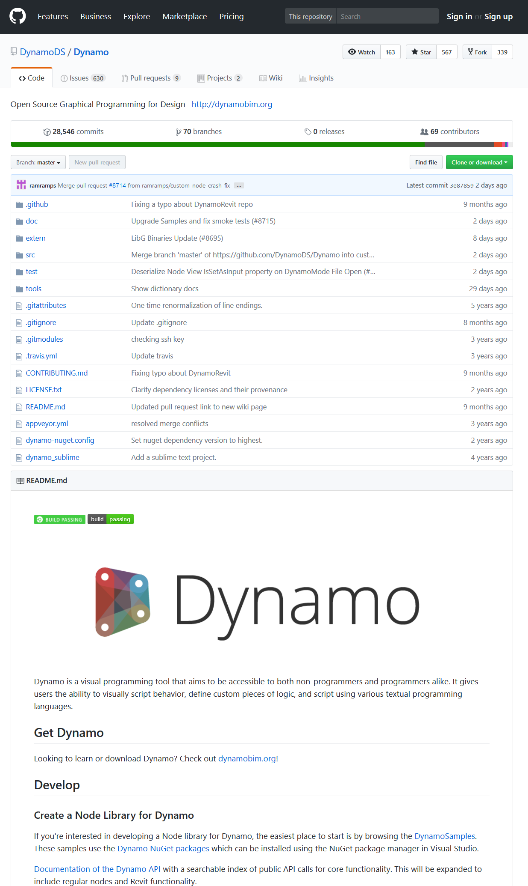
Browse, Fork, and start extending Dynamo for your needs
Setup for Dynamo
Dynamo as Extension vs Dynamo Sandbox
Dynamo is an active open-source development project. Find out the list of software that supports Dynamo.


Launch Dynamo as Extension
Dynamo comes pre-installed with software such as Revit3D, FormIt, Civil3D and etc.
To start using, launch it from your toolbar panel. Depends on which software you are using, the launch icon can usually be found from the Menu > Manage Tab. Click on Dynamo icon  to launch it.
to launch it.

For more guidance on using Dynamo with a specific software, we recommend referring to the following sections:
If you would like to use Dynamo as a standalone application. Continue reading for guidance on downloading the Sandbox.
Get Dynamo Sandbox
Download
The Dynamo application is available from the Dynamo website. Both official, past or pre-released versions are available from the download page. Visit Get Dynamo page and Click Download for the official released version.
%20(1).png)
If you are looking for previous or 'bleeding edge' development releases, all versions can be found in the lower section from the same page.

{% hint style="info" %} 'Bleeding edge' development may include some new and experimental features that are yet to be fully tested, hence may be unstable. By using this, you may discover bugs or issues, help us improve the application by reporting issues to our team.
Beginners are advised to download the official stable release. {% endhint %}
Unzip
Before launching any version you have downloaded, you are required to unzip the content to your chosen folder.
Download and install 7zip to your computer for this step.
Right-click on the zip file and select Extract All...

Choose a destination to unzip all the files.

Launching
In your destination folder, double-click on DynamoSandbox.exe to launch it

You will see the DynamoSandbox startup screen as follow.
Congratulations, you have now finished the setup for using DynamoSandbox!
{% hint style="info" %} Geometry is an additional functionality in Dynamo Sandbox that is only available to users who have a current subscription or license to the following Autodesk software: Revit, Robot Structural Analysis, FormIt, and Civil 3D. Geometry allows users too import, create, edit and export geometry from Dynamo Sandbox. {% endhint %}
User Interface
User Interface Overview
The User Interface (UI) for Dynamo is organized into five main regions. We will briefly cover the overview here and further explain the Workspace and Library in the following sections.

- Menus
- Toolbar
- Library
- Workspace
- Execution bar
Menus
.jpg)
Here are Menus for basic functionality of the Dynamo application. Like most Windows software, the first two menus related to managing files, operations for selection and content editing. The remaining menus are more specific to Dynamo.
Dynamo Menus
General info and settings can be found on the Dynamo drop down menu.

- About - Find out the Dynamo version installed on your machine.
- Agreement to Collect Usability Data - This allows you to opt-in or out for sharing your user data to improve Dynamo.
- Preferences - Includes settings such as define the application's decimal point precision and geometry render quality.
- Exit Dynamo
Help
If you're stuck, check out the Help Menu. You may access one of the Dynamo reference websites through your internet browser.
- Getting Started - A brief introduction to using Dynamo.
- Interactive Guides -
- Samples - Reference example files.
- Dynamo Dictionary - Resource with documentation on all nodes.
- Dynamo Website - View the Dynamo Project on GitHub.
- Dynamo Project Wiki - Visit the wiki for learning about development using the Dynamo API, supporting libraries and tools.
- Display Start Page - Return to the Dynamo start page when within a document.
- Report A Bug - Open an Issue on GitHub.
Toolbar
Dynamo's Toolbar contains a series of buttons for quick access to working with files as well as Undo [Ctrl + Z] and Redo [Ctrl + Y] commands. On the far right is another button that will export a snapshot of the workspace, which is extremely useful for documentation and sharing.
 New - Create a new .dyn file
New - Create a new .dyn file- Open - Open an existing .dyn (workspace) or .dyf (custom node) file
 Save/Save As - Save your active .dyn or .dyf file
Save/Save As - Save your active .dyn or .dyf file Undo - Undo your last action
Undo - Undo your last action Redo - Redo the next action
Redo - Redo the next action Export Workspace as Image - Export the visible workspace as a PNG file
Export Workspace as Image - Export the visible workspace as a PNG file
Library
The Dynamo Library is a collection of functional libraries, each Library containing Nodes grouped by Category. It consists basic libraries which are added during default installation of Dynamo, as we continue to introduce its usage, we will demonstrate how to extend the base functionality with Custom Nodes and additional Packages. The 2-library.md section will cover a more detailed guidance on using it.

Workspace
The Workspace is where we compose our visual programs, you may also change its Preview setting to view the 3D geometries from here. Refer 1-workspace.md for more details.

Execution Bar
Run your Dynamo script from here. Click the dropdown icon on the Execution button to change between the different modes.

- Automatic: Runs your script automatically. Changes is updated in realtime.
- Manual: Script only runs when the 'Run' button is clicked. Useful for when making changes to complicated and 'heavy script'
- Periodic: This option is grayed out by default. Only available when the DateTime.Now Node is used. You can set the graph to run automatically at a specified interval.

Workspace
Main Workspace
The Dynamo Workspace consists of four main elements.
- All Active Tabs.
- Preview Mode
- Zoom/Pan Controls
- Node in Workspace
All Active Tabs
When you open a new file, a new Home Workspace will be opened by default.

You may create a Custom Node and open it in a Custom Node Workspace.

{% hint style="info" %} Only one Home Workspace is allowed in each Dynamo window but you may have multiple Custom Node Workspaces opened in tabs. {% endhint %}
Preview Mode
There are 3 methods to switch between different previews:
a. Using the top right icons
 Graph Preview
Graph Preview 3D Preview
3D Preview
b. Right-click in Workspace
- Switch from 3D Preview to Graph Preview

- Switch from Graph Preview to 3D Preview
c. Using keyboard shortcut (Ctrl+B)
Zoom/Pan Controls
You may use icons or a mouse to navigate in either workspace.
a. In Graph Preview Mode
- Using icons:
 Zoom to fit
Zoom to fit- Zoom in
 Zoom out
Zoom out Pan
Pan
- Using mouse:
- Left-click - Select
- Left-click and drag - Selection box to select multiple nodes
- Middle scroll up/down - Zoom in/out
- Middle-click and drag - Pan
- Right-click anywhere on canvas - Open In-Canvas Search

b. In 3D Preview Mode
- Using icons:
- Zoom to fit
- Zoom in
- Zoom out
- Pan
 Orbit
Orbit
- Using mouse:
- Middle scroll up/down - Zoom in/out
- Middle-click and drag - Pan
- Right-click and drag - Orbit
Node in Workspace
Left-click to select any Node.
To select multiple Nodes, Click and drag to create a selection box.

Library
The Library contains all of the loaded Nodes, including the ten default categories Nodes that come with the installation as well as any additionally loaded Custom Nodes or Packages. The Nodes in the Library are organized hierarchically within libraries, categories, and, where appropriate, subcategories.
- Basic Nodes: Comes with default installation.
- Custom Nodes: Store your frequently used routines or special graph as Custom Nodes. You can also share your Custom Nodes with the community
- Nodes from the Package Manager: Collection of published Custom Nodes.
We will go through the hierarchy of Nodes categories, show how you can search quickly from the library and learn about some of the frequently used Nodes among them.
Library Hierarchy for Categories
Browsing through these categories is the fastest way to understand the hierarchy of what we can add to our Workspace and the best way to discover new Nodes you haven't used before.
Browse the Library by clicking through the menus to expand each category and its subcategory
{% hint style="info" %} Geometry are great menus to begin exploring as they contain the largest quantity of Nodes. {% endhint %}
- Library
- Category
- Subcategory
- Node
These further categorize the Nodes among same subcategory based on whether the Nodes Create data, execute an Action, or Query data.
 Create: Create or construct a geometry from scratch. E.g a circle.
Create: Create or construct a geometry from scratch. E.g a circle. Action: Perform an action on an object. E.g scaling a circle.
Action: Perform an action on an object. E.g scaling a circle. Query: Get a property of an object that already exists. E.g get the radius of a circle.
Query: Get a property of an object that already exists. E.g get the radius of a circle.
Hover your mouse over a Node to reveal more detailed information beyond its name and icon. This offers us a quick way to understand what the Node does, what it will require for inputs, and what it will give as an output.
- Description - plain language description of the Node
- Icon - larger version of the icon in the Library Menu
- Input(s) - name, data type, and data structure
- Output(s) - data type and structure
Quick search in Library
If you know with relative specificity which Node you want to add to your Workspace, type in the Search field to look up all matching Nodes.
Choose by clicking on the Node you wish to add or hit Enter to add highlighted nodes to the center of the Workspace.

Search by hierarchy
Beyond using keywords to try to find Nodes, we can type the hierarchy separated with a period in the Search Field or with Code Blocks (which use the Dynamo textual language).
The hierarchy of each library is reflected in the Name of Nodes added to the Workspace.
Typing in different portions of the Node's place in the Library hierarchy in the library.category.nodeName format returns different results
library.category.nodeName
%20(1).jpg)
category.nodeName

nodeNameorkeyword

Typically the Name of the Node in the Workspace will be rendered in the category.nodeName format, with some notable exceptions particularly in the Input and View Categories.
Beware of similarly named Nodes and note the category difference:
- Nodes from most libraries will include the category format

Point.ByCoordinatesandUV.ByCoordinateshave the same Name but come from different categories

- Notable exceptions include Built-in Functions, Core.Input, Core.View, and Operators

Frequently Used Nodes
With hundreds of Nodes included in the basic installation of Dynamo, which ones are essential for developing our Visual Programs? Let's focus on those that let us define our program's parameters (Input), see the results of a Node's action (Watch), and define inputs or functionality by way of a shortcut (Code Block).
Input Nodes
Input Nodes are the primary means for the User of our Visual Program - be that yourself or someone else - to interface with the key parameters. Here are some available from the Core Library:
| Node | Node | ||
|---|---|---|---|
| Boolean |  | Number |  |
| String |  | Number Slider |  |
| Directory Path |  | Integer Slider |  |
| File Path |  |
Watch & Watch3D
The Watch Nodes are essential to managing the data that is flowing through your Visual Program. You can view the result of a Node through the Node data preview by hovering your mouse over the node.

It will be useful to keep it revealed in a Watch Node

Or see the geometry results through a Watch3D Node.
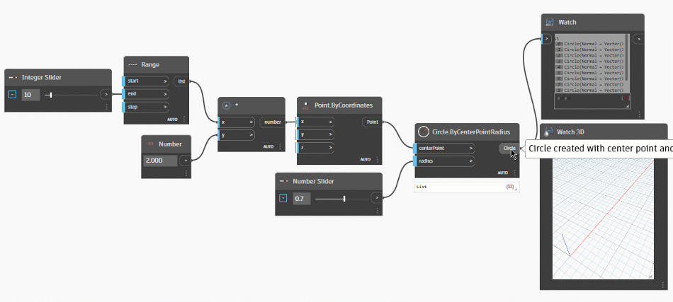
Both of these are found in the View Category in the Core Library.
{% hint style="info" %} Tip: Occasionally the 3D Preview can be distracting when your Visual Program contains a lot of Nodes. Consider unchecking the Showing Background Preview option in the Settings Menu and using a Watch3D Node to preview your geometry. {% endhint %}
Code Block
Code Block Nodes can be used to define a block of code with lines separated by semi-colons. This can be as simple as X/Y.
We can also use Code Blocks as a shortcut to defining a Number Input or call to another Node's functionality. The syntax to do so follows the Naming Convention of the Dynamo textual language, DesignScript.
Here is a simple demonstration (with instructions) for using Code Block in your script.

- Double-click to create a Code Block Node
- Type
Circle.ByCenterPointRadius(x,y); - Click on Workspace to clear the selection should add
xandyinputs automatically. - Create a Point.ByCoordinates Node and a Number Slider then connect them to the inputs of the Code Block.
- The result of the executing the Visual Program is shown as the circle in the 3D Preview
Nodes and Wires
Nodes
In Dynamo, Nodes are the objects you connect to form a Visual Program. Each Node performs an operation - sometimes that may be as simple as storing a number or it may be a more complex action such as creating or querying geometry.
Anatomy of a Node
Most Nodes in Dynamo are composed of five parts. While there are exceptions, such as Input Nodes, the anatomy of each Node can be described as follows:

- Name - The Name of the Node with a
Category.Namenaming convention- Main body - The main body of the Node - Right-clicking here presents options at the level of the whole Node
- Ports (In and Out) - The receptors for Wires that supply the input data to the Node as well as the results of the Node's action
- Default Value - Right-click on an input Port - some Nodes have default values that can be used or not used.
- Lacing Icon - Indicates the Lacing option specified for matching list inputs (more on that later)
Nodes Input/Output Ports
The Inputs and Outputs for Nodes are called Ports and act as the receptors for Wires. Data comes into the Node through Ports on the left and flows out of the Node after it has executed its operation on the right.
Ports expect to receive data of a certain type. For instance, connecting a number such as 2.75 to the Ports on a Point By Coordinates Node will successfully result in creating a Point; however, if we supply "Red" to the same Port it will result in an error.
{% hint style="info" %} Tip: Hover over a Port to see a tooltip containing the data type expected. {% endhint %}

- Port Label
- Tool Tip
- Data Type
- Default Value
Node States
Dynamo gives an indication of the state of the execution of your Visual Program by rendering Nodes with different color schemes based on each Node's status. The hierarchy of states follows this sequence: Error > Warning > Info > Preview.
Hovering or right-clicking over the Name or Ports presents additional information and options.

- Satisfied inputs - A node with blue vertical bars over its input ports is well-connected and has all of its inputs successfully connected.
- Unsatisfied inputs A node with a red vertical bar over one or more input ports needs to have those inputs connected.
- Function A node that outputs a function and has a gray vertical bar over an output port is a function node.
- Selected - Currently selected nodes have an aqua highlight around their border.
- Frozen - A translucent blue node is frozen, suspending the execution of the node.
- Preview off - A gray status bar underneath the node and an eye icon
indicate that geometry preview for the node is switched off.
- Warning - A yellow status bar underneath the node indicates Warning state, meaning the node either lacks input data or may have incorrect data types.
- Error - A red status bar underneath the node indicates that the node is in an Error state.
- Info - Blue status bar underneath the node indicates Info state, which flags useful information about nodes. This state can be triggered when approaching a maximum value supported by the node, using a node in a way that has potential performance impacts, etc.
Handling Error or Warning Nodes
If your Visual Program contains warning or errors, Dynamo will provide additional information about the problem. Any Node that is Yellow will also have a tooltip above the Name. Hover your mouse over the warning  or error
or error  tooltip icon to expand it.
tooltip icon to expand it.
{% hint style="info" %} Tip: With this tooltip information in hand, examine the upstream Nodes to see if the data type or data structure required is in error. {% endhint %}

- Warning Tooltip - "Null" or no data cannot be understood as a Double, i.e., a number
- Use the Watch Node to examine the input data
- Upstream the Number Node is storing "Red," not a number
Wires
Wires connect between Nodes to create relationships and establish the Flow of our Visual Program. We can think of them literally as electrical wires that carry pulses of data from one object to the next.
Program Flow
Wires connect the output Port from one Node to the input Port of another Node. This directionality establishes the Flow of Data in the Visual Program.
Input Ports are on the left side and the Output Ports are located on the right side of Nodes, hence, we can generally say that the Program Flow moves from left to right.

Creating Wires
Create a Wire by left-click on a Port subsequently left-click on the port of another Node to create a connection. While we are in the process of making a connection, the Wire will appear dashed and will snap to become solid lines when successfully connected.
The data will always flow through this Wire from output to input; however, we may create the wire in either direction in terms of the sequence of clicking on the connected Ports.

Editing Wires
Frequently we will want to adjust the Program Flow in our Visual Program by editing the connections represented by the Wires. To edit a Wire, left click on the input Port of the Node that is already connected. You now have two options:
- Change connection to an input Port, left-click on another input Port
.gif)
- To remove the Wire, pull the Wire away and left-click on Workspace

- Reconnect multiple wires using Shift+left-click

- Duplicate a wire using Ctrl+left-click

Default vs Highlighted Wires
By default, our Wires will be previewed with a gray stroke. When a Node is selected, it will render any connecting Wire with the same aqua highlight as the Node.

- Highlighted Wire
- Default Wire
Hide Wires by Default
In case you prefer to hide the Wires in your graph, you can find this option from View > Connectors > untick Show Connectors.
With this setting, only the selected Nodes and its joining Wires will be shown in faint aqua highlight.
.gif)
Hide Individual Wire Only
You can also hide selected wire only by Right-clicking on the Nodes output > select Hide Wires

Essential Nodes & Concepts
In this section, we introduce the essential Nodes available in the Dynamo Library that will help you create your own visual program like a pro.
- Geometry for Computational Design: How do I work with geometric elements in Dynamo? Explore multiple ways to create simple or complex geometries from primitives.
- The Building Blocks of Programs: What is "Data" and what are some fundamental types I can start using in my programs? Also, learn more about incorporating math and logic operations in your design workflow.
- Designing with Lists: How do I manage and coordinate my data structures? Understand more about the concept of List and use it to manage your design data efficiently.
- Dictionaries in Dynamo: What are Dictionaries? Find out how to use dictionaries to look up specific data and values from existing results.
Index of Nodes
This index provides additional information on all the nodes used in this primer, as well as other components you might find useful. This is just an introduction to some of the 500 nodes available in Dynamo.
Display
Color
| CREATE | ||
.jpg) | Color.ByARGB | .jpg) |
| 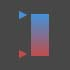 | Color Range | %20(1).jpg) |
| ACTIONS | ||
.jpg) | Color.Brightness | %20(1).jpg) |
 | Color.Components |  |
.jpg) | Color.Saturation |  |
 | Color.Hue |  |
| QUERY | ||
(1).jpg) | Color.Alpha |  |
.jpg) | Color.Blue | 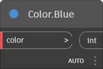 |
(1)%20(3).jpg) | Color.Green |  |
 | Color.Red |  |
| CREATE | ||
.jpg) | GeometryColor.ByGeometryColor |  |
Watch
| ACTIONS | ||
 | View.Watch |  |
 | View.Watch 3D |  |
Input
| ACTIONS | ||
 | Boolean |  |
(1).jpg) | Code Block |  |
 | Directory Path |  |
 | File Path |  |
 | Integer Slider |  |
 | Number | %20(1).jpg) |
 | Number Slider |  |
 | String |  |
 | Object.IsNull |  |
List
| CREATE | ||
 | List.Create |  |
 | List.Combine |  |
 | Number Range | .jpg) |
 | Number Sequence |  |
| ACTIONS | ||
 | List.Chop |  |
%20(1).jpg) | List.Count |  |
 | List.Flatten |  |
 | List.FilterByBoolMask |  |
| 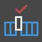 | List.GetItemAtIndex |  |
List.Map |  | |
List.Reverse |  | |
 | List.ReplaceItemAtIndex |  |
 | List.ShiftIndices |  |
 | List.TakeEveryNthItem |  |
| 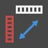 | List.Transpose |
Logic
| ACTIONS | ||
 | If |  |
Math
| ACTIONS | ||
Math.Cos |  | |
 | Math.DegreesToRadians |  |
 | Math.Pow |  |
 | Math.RadiansToDegrees |  |
 | Math.RemapRange |  |
 | Math.Sin |  |
 | Formula | |
%20(1).jpg) | Map |  |
String
| ACTIONS | ||
 | String.Concat |  |
| 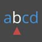 | String.Contains |  |
 | String.Join | .jpg) |
 | String.Split |  |
 | String.ToNumber |  |
Geometry
Circle
| CREATE | ||
 | Circle.ByCenterPointRadius |  |
 | Circle.ByPlaneRadius |  |
| CREATE | ||
 | CoordinateSystem.ByOrigin |  |
%20(1).jpg) | CoordinateSystem.ByCyclindricalCoordinates |  |
Cuboid
| CREATE | ||
.jpg) | Cuboid.ByLengths |  |
%20(1).jpg) | Cuboid.ByLengths (origin) Create a Cuboid centered at input Point, with specified width, length, and height. |  |
%20(1).jpg) | Cuboid.ByLengths (coordinateSystem) Create a Cuboid centered at WCS origin, with width, length, and height. |  |
%20(1).jpg) | Cuboid.ByCorners Create a Cuboid spanning from low Point to high Point. | |
.jpg) | Cuboid.Length Return the input dimensions of the Cuboid, NOT the actual world space dimensions. ** |  |
%20(1).jpg) | Cuboid.Width Return the input dimensions of the Cuboid, NOT the actual world space dimensions. ** |  |
.jpg) | Cuboid.Height Return the input dimensions of the Cuboid, NOT the actual world space dimensions. ** |  |
.jpg) | BoundingBox.ToCuboid Get the Bounding Box as a solid Cuboid |  |
{% hint style="warning" %} **In other words, if you create a Cuboid width (X-axis) length 10, and transform it to a CoordinateSystem with 2 times scaling in X, the width will still be 10. ASM does not allow you to extract the Vertices of a body in any predictable order, so it is impossible to determine the dimensions after a transform. {% endhint %}
Curve
| ACTIONS | ||
 | Curve.Extrude (distance) |  |
 | Curve.PointAtParameter |  |
Geometry Modifiers
| ACTIONS | ||
 | Geometry.DistanceTo |  |
Geometry.Explode |  | |
 | Geometry.ImportFromSAT |  |
 | Geometry.Rotate (basePlane) |  |
Geometry.Translate |
Line
| CREATE | ||
 | Line.ByBestFitThroughPoints |  |
 | Line.ByStartPointDirectionLength |  |
 | Line.ByStartPointEndPoint | 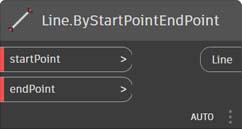 |
 | Line.ByTangency |  |
| QUERY | ||
 | Line.Direction |  |
NurbsCurve
| Create | ||
 | NurbsCurve.ByControlPoints |  |
 | NurbsCurve.ByPoints |  |
NurbsSurface
| Create | ||
 | NurbsSurface.ByControlPoints |  |
 | NurbsSurface.ByPoints |
Plane
| CREATE | ||
Plane.ByOriginNormal |  | |
 | Plane.XY |  |
Point
| CREATE | ||
 | Point.ByCartesianCoordinates |  |
 | Point.ByCoordinates (2d) | 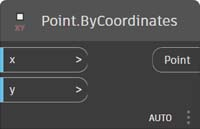 |
 | Point.ByCoordinates (3d) |  |
 | Point.Origin |  |
| ACTIONS | ||
 | Point.Add |  |
| QUERY | ||
 | Point.X |  |
 | Point.Y |  |
 | Point.Z |  |
Polycurve
| CREATE | ||
 | Polycurve.ByPoints | 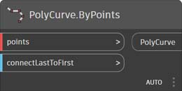 |
Rectangle
| CREATE | ||
 | Rectangle.ByWidthLength (Plane) |  |
Sphere
| CREATE | ||
 | Sphere.ByCenterPointRadius |  |
Surface
| CREATE | ||
.jpg) | Surface.ByLoft |  |
 | Surface.ByPatch | %20(1).jpg) |
| ACTIONS | ||
.jpg) | Surface.Offset |  |
%20(1).jpg) | Surface.PointAtParameter | 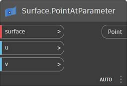 |
%20(1).jpg) | Surface.Thicken |  |
UV
| CREATE | ||
.jpg) | UV.ByCoordinates |  |
Vector
| CREATE | ||
.jpg) | Vector.ByCoordinates |  |
%20(1).jpg) | Vector.XAxis |  |
%20(1).jpg) | Vector.YAxis |  |
%20(1).jpg) | Vector.ZAxis |  |
| ACTIONS | ||
.jpg) | Vector.Normalized |
CoordinateSystem
| CREATE | ||
| CoordinateSystem.ByOrigin | |
| CoordinateSystem.ByCyclindricalCoordinates | |
Operators
(1).jpg) | + |  |
(1)%20(1).jpg) | - |  |
(1).jpg) | * |  |
(1).jpg) | / |  |
%20(1).jpg) | % |  |
%20(1).jpg) | < |  |
.jpg) | > |  |
.jpg) | == |  |
Geometry for Computational Design
As a Visual Programming environment, Dynamo enables you to craft the way that data is processed. Data is numbers or text, but so is Geometry. As understood by the Computer, Geometry - or sometimes called Computational Geometry - is the data we can use to create beautiful, intricate, or performance-driven models. To do so, we need to understand the ins and outs of the various types of Geometry we can use.
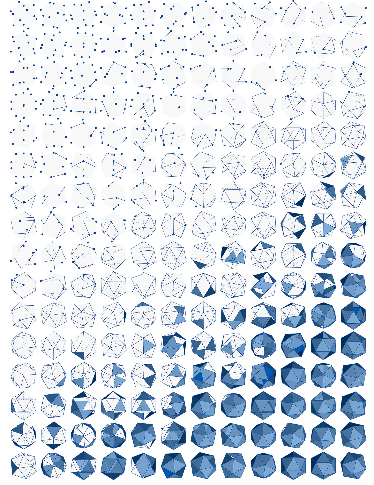
Geometry Overview
Geometry in Dynamo Sandbox
Geometry is the language for design. When a programming language or environment has a geometry kernel at its core, we can unlock the possibilities for designing precise and robust models, automating design routines, and generating design iterations with algorithms.
Understanding the Geometry types and how they are related will allow us to navigate the collection of Geometry Nodes available to us in the Library. The Geometry Nodes are organized alphabetically as opposed to hierarchically - here they are displayed similar to their layout in the Dynamo interface.

Additionally, making models in Dynamo and connecting the preview of what we see in the Background Preview to the flow of data in our graph should become more intuitive over time.
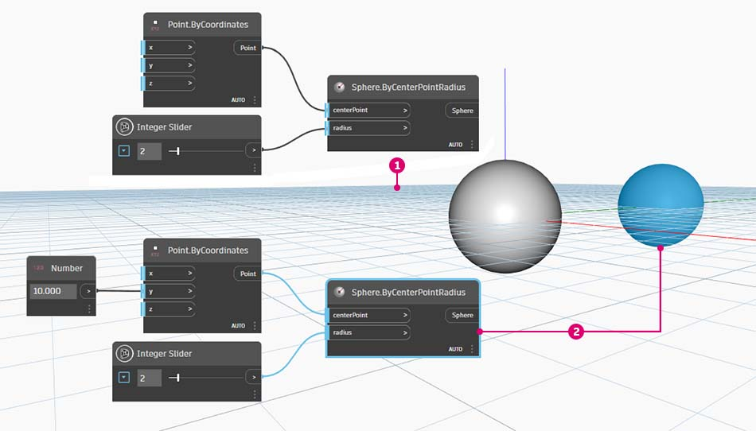
- Note the assumed coordinate system rendered by the grid and colored axes
- Selected Nodes will render the corresponding geometry (if the Node creates geometry) in the background the highlight color
Download the example file by clicking on the link below.
A full list of example files can be found in the Appendix.
{% file src="../datasets/5-2/1/Geometry for Computational Design - Geometry Overview.dyn" %}
The Concept of Geometry
Geometry, traditionally defined, is the study of shape, size, relative position of figures, and the properties of space. This field has a rich history going back thousands of years. With the advent and popularization of the computer, we gained a powerful tool in defining, exploring, and generating geometry. It is now so easy to calculate the result of complex geometric interactions, the fact that we are doing so is almost transparent.

If you're curious to see how diverse and complex geometry can get using the power of your computer, do a quick web search for the Stanford Bunny - a canonical model used to test algorithms.
Understanding geometry in the context of algorithms, computing, and complexity, may sound daunting; however, there are a few key, and relatively simple, principles that we can establish as fundamentals to start building towards more advanced applications:
- Geometry is Data - to the computer and Dynamo, a Bunny not all that different from a number.
- Geometry relies on Abstraction - fundamentally, geometric elements are described by numbers, relationships, and formulas within a given spatial coordinate system
- Geometry has a Hierarchy - points come together to make lines, lines come together to make surfaces, and so on
- Geometry simultaneously describes both the Part and the Whole - when we have a curve, it is both the shape as well as all the possible points along it
In practice, these principles mean that we need to be aware of what we are working with (what type of geometry, how was it created, etc.) so that we can fluidly compose, decompose, and recompose different geometries as we develop more complex models.
Stepping through the Hierarchy
Let's take a moment to look at the relationship between the Abstract and Hierarchical descriptions of Geometry. Because these two concepts are related, but not always obvious at first, we can quickly arrive at a conceptual roadblock once we start developing deeper workflows or models. For starters, let's use dimensionality as an easy descriptor of the "stuff" we model. The number of dimensions required to describe a shape gives us a window into how Geometry is organized hierarchically.
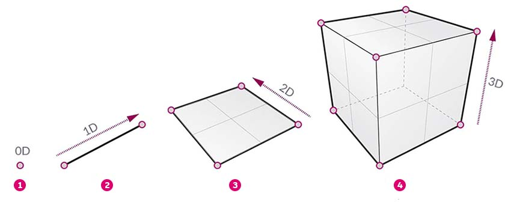
- A Point (defined by coordinates) doesn't have any dimensions to it - it's just numbers describing each coordinate
- A Line (defined by two points) now has one dimension - we can "walk" the line either forward (positive direction) or backward (negative direction)
- A Plane (defined by two lines) has two dimensions - walking more left or more right is now possible
- A Box (defined by two planes) has three dimensions - we can define a position relative to up or down
Dimensionality is a convenient way to start categorizing Geometry but it's not necessarily the best. After all, we don't model with only Points, Lines, Planes, and Boxes - what if I want something curvy? Furthermore, there is a whole other category of Geometric types that are completely abstract ie. they define properties like orientation, volume, or relationships between parts. We can't really grab a hold of a Vector so how do we define it relative to what we see in space? A more detailed categorization of the geometric hierarchy should accommodate the difference between Abstract Types or "Helpers," each of which we can group by what they help do and types that help describe the shape of model elements.

Going Further with Geometry
Creating models in Dynamo is not limited to what we can generate with Nodes. Here are some key ways to take your process to the next level with Geometry:
- Dynamo allows you to import files - try using a CSV for point clouds or SAT for bringing in surfaces
- When working with Revit, we can reference Revit elements to use in Dynamo
- The Dynamo Package Manager offers additional functionality for extended geometry types and operations - check out the Mesh Toolkit package
Vector, Plane & Coordinate System
Vector, Plane & Coordinates System in Dynamo
Vector
Vector is a representation of magnitude and direction, you can picture it as an arrow accelerating towards a particular direction at a given speed. It is a key component to our models in Dynamo. Note that, because they are in the Abstract category of "Helpers," when we create a Vector, we won't see anything in the Background Preview.
- We can use a line as a stand in for a Vector preview.
Download the example file by clicking on the link below.
A full list of example files can be found in the Appendix.
{% file src="../datasets/5-2/2/Geometry for Computational Design - Vectors.dyn" %}
Plane
Plane is a two dimensional surface, you can picture it as a flat surface that extends indefinitely. Each Plane has an Origin, X Direction, Y Direction, and a Z (Up) Direction.

- Although they are abstract, Planes do have an origin position so we can locate them in space.
- In Dynamo, Planes are rendered in the Background Preview.
Download the example file by clicking on the link below.
A full list of example files can be found in the Appendix.
{% file src="../datasets/5-2/2/Geometry for Computational Design - Plane.dyn" %}
Coordinate System
Coordinate system is a system to determine the location of points or other geometric elements. The image below explains how it looks like in Dynamo and what each color represents.

- Although they are abstract, Coordinate Systems also have an origin position so we can locate them in space.
- In Dynamo, Coordinate Systems are rendered in the Background Preview as a point (origin) and lines defining the axes (X is red, Y is green, and Z is blue following convention).
Download the example file by clicking on the link below.
A full list of example files can be found in the Appendix.
{% file src="../datasets/5-2/2/Geometry for Computational Design - Coordinate System.dyn" %}
Deep Dive into...
Vectors, Planes, and Coordinate Systems make up the primary group of Abstract Geometry Types. They help us define location, orientation, and the spatial context for other geometry that describe shapes. If I say that I'm in New York City at 42nd Street and Broadway (Coordinate System), standing on the street level (Plane), looking North (Vector), I've just used these "Helpers" to define where I am. The same goes for a phone case product or a skyscraper - we need this context to develop our model.

Vector
A vector is a geometric quantity describing Direction and Magnitude. Vectors are abstract; ie. they represent a quantity, not a geometrical element. Vectors can be easily confused with Points because they both are composed of a list of values. There is a key difference though: Points describe a position in a given coordinate system while Vectors describe a relative difference in position which is the same as saying "direction."
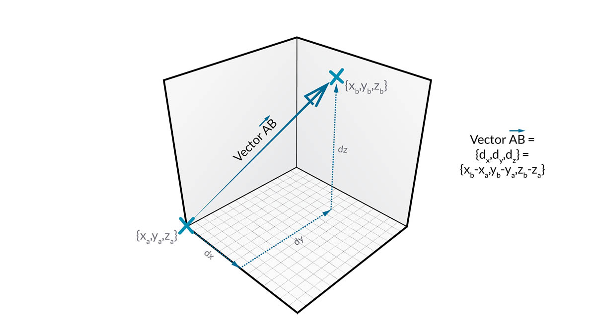
If the idea of relative difference is confusing, think of the Vector AB as "I'm standing at Point A, looking toward Point B." The direction, from here (A) to there (B), is our Vector.
Breaking down Vectors further into their parts using the same AB notation:

- The Start Point of the Vector is called the Base.
- The **End Point **of the Vector is called the Tip or the Sense.
- Vector AB is not the same as Vector BA - that would point in the opposite direction.
If you're ever in need of comic relief regarding Vectors (and their abstract definition), watch the classic comedy Airplane and listen for the oft-quoted tongue-in cheek line:
Roger, Roger. What's our vector, Victor?
Plane
Planes are two-dimensional abstract "Helpers." More specifically, Planes are conceptually flat, extending infinitely in two directions. Usually they are rendered as a smaller rectangle near their origin.

You might be thinking, "Wait! Origin? That sounds like a Coordinate System... like the one I use to model in my CAD software!"
And you're correct! Most modeling software take advantage of construction planes or "levels" to define a local two-dimentional context to draft in. XY, XZ, YZ -or- North, Southeast, Plan might sound more familiar. These are all Planes, defining an infinite "flat" context. Planes don't have depth, but they do help us describe direction as well -
Coordinate System
If we are comfortable with Planes, we are a small step away from understanding Coordinate Systems. A Plane has all the same parts as a Coordinate System, provided it is a standard "Euclidean" or "XYZ" Coordinate System.
There are other, however, alternative Coordinate Systems such as Cylindrical or Spherical. As we will see in later sections, Coordinate Systems can also be applied to other Geometry types to define a position on that geometry.
Add alternative coordinate systems - cylindrical, spherical
Points
Points in Dynamo
What is a Point?
A Point is defined by nothing more than one or more values called coordinates. How many coordinate values we need to define the Point depends upon the Coordinate System or context in which it resides.
2D & 3D Point
The most common kind of Point in Dynamo exists in our three-dimensional World Coordinate System and has three coordinates [X,Y,Z] (3D Point in Dynamo).

A 2D Point in Dynamo has two coordinates [X,Y].
Point on Curves and Surfaces
Parameters for both Curves and Surfaces are continuous and extend beyond the edge of the given geometry. Since the shapes that define the Parameter Space reside in a three-dimensional World Coordinate System, we can always translate a Parametric Coordinate into a "World" Coordinate. The point [0.2, 0.5] on the surface for example is the same as point [1.8, 2.0, 4.1] in world coordinates.

- Point in assumed World XYZ Coordinates
- Point relative to a given Coordinate System (Cylindrical)
- Point as UV Coordinate on a Surface
Download the example file by clicking on the link below.
A full list of example files can be found in the Appendix.
{% file src="../datasets/5-2/3/Geometry for Computational Design - Points.dyn" %}
Deep Dive into...
If Geometry is the language of a model, then Points are the alphabet. Points are the foundation upon which all other geometry is created - we need at least two Points to create a Curve, we need at least three Points to make a Polygon or a Mesh Face, and so on. Defining the position, order, and relationship among Points (try a Sine Function) allows us to define higher order geometry like things we recognize as Circles or Curves.
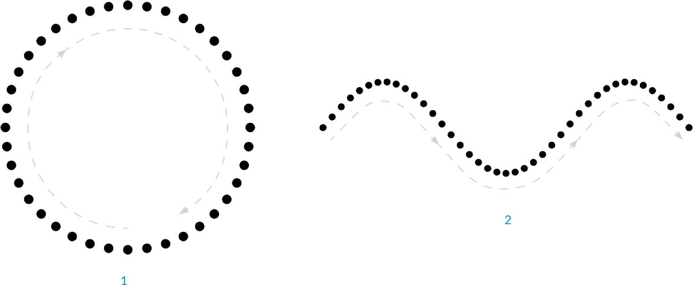
- A Circle using the functions
x=r*cos(t)andy=r*sin(t)- A Sine Curve using the functions
x=(t)andy=r*sin(t)
Point as Coordinates
Points can exist in a two-dimensional Coordinate System as well. Convention has different letter notation depending upon what kind of space we are working with - we might be using [X,Y] on a Plane or [U,V] if we are on a surface.

- A Point in Euclidean Coordinate System: [X,Y,Z]
- A Point in a Curve Parameter Coordinate System: [t]
- A Point in a Surface Parameter Coordinate System: [U,V]
Curves
Curves in Dynamo
What is Curve?
Curves are the first Geometric Data Type we've covered that have a more familiar set of shape descriptive properties - How curvey or straight? How long or short? And remember that Points are still our building blocks for defining anything from a line to a spline and all the Curve types in between.

- Line
- Polyline
- Arc
- Circle
- Ellipse
- NURBS Curve
- Polycurve
Line
Line is made of a set of points, each line has at least 2 points. One of the most common way to create line in Dynamo is using Line.ByStartPointEndPoint  to create a Line in Dynamo.
to create a Line in Dynamo.
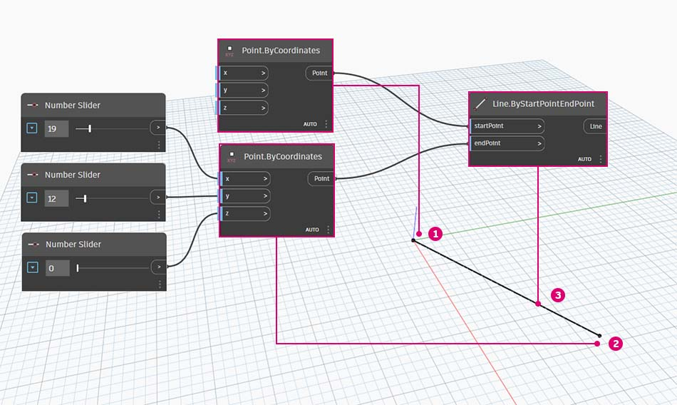
NURBS Curve
NURBS is a model used for representing curves and surfaces accurately. A sine curve in Dynamo using two different methods to create NURBS Curves to compare the results.
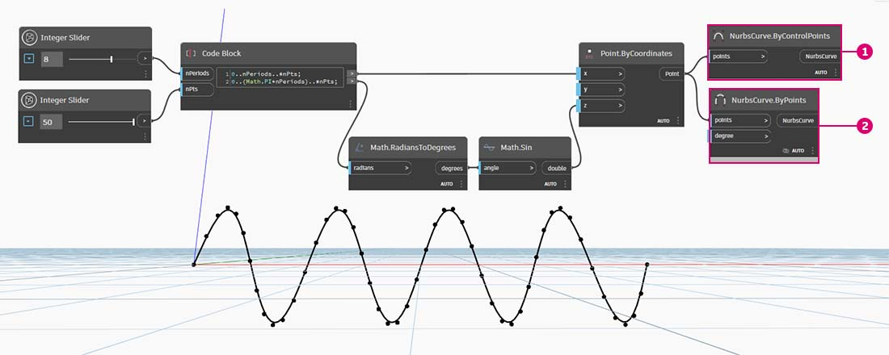
- NurbsCurve.ByControlPoints uses the List of Points as Control Points
- NurbsCurve.ByPoints draws a Curve through the List of Points
Download the example file by clicking on the link below.
A full list of example files can be found in the Appendix.
{% file src="../datasets/5-2/4/Geometry for Computational Design - Curves.dyn" %}
Deep Dive into...
Curves
The term Curve is generally a catch-all for all different sort of curved (even if straight) shapes. Capital "C" Curve is the parent categorization for all of those shape types - Lines, Circles, Splines, etc. More technically, a Curve describes every possible Point that can be found by inputting "t" into a collection of functions, which may range from the simple (x = -1.26*t, y = t) to functions involving calculus. No matter what kind of Curve we are working with, this Parameter called "t" is a property we can evaluate. Furthermore, regardless of the look of the shape, all Curves also have a start point and end point, which coincidentally align with the minimum and maximum t values used to create the Curve. This also helps us understand its directionality.

It's important to note that Dynamo assumes that the domain of "t" values for a Curve is understood to be 0.0 to 1.0.
All Curves also possess a number of properties or characteristics which can be used to describe or analyze them. When the distance between the start and end points is zero, the curve is "closed." Also, every curve has a number of control-points, if all these points are located in the same plane, the curve is "planar." Some properties apply to the curve as a whole, while others only apply to specific points along the curve. For example, planarity is a global property while a tangent vector at a given t value is a local property.
Lines
Lines are the simplest form of Curves. They may not look curvy but they are in fact Curves - just without any curvature. There are a few different ways to create Lines, the most intuitive being from Point A to Point B. The shape of the Line AB will be drawn between the points but mathematically it extends infinitely in both directions.
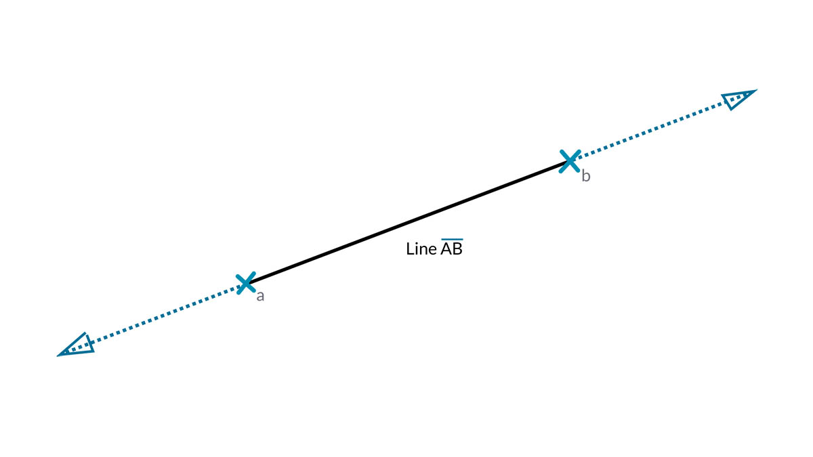
When we connect two Lines together, we have a Polyline. Here we have a straightforward representation of what a Control Point is. Editing any of these point locations will change the shape of the Polyline. If the Polyline is closed, we have a Polygon. If the Polygon's edge lengths are all equal, it is described as regular.

Arcs, Circles, Ellipse Arcs, and Ellipses
As we add more complexity to the Parametric Functions that define a shape, we can take one step further from a Line to create an Arc, Circle, Ellipse Arc, or Ellipse by describing one or two radii. The differences between the Arc version and the Circle or Ellipse is only whether or not the shape is closed.

NURBS + Polycurves
NURBS (Non-uniform Rational Basis Splines) are mathematical representations that can accurately model any shape from a simple two dimensional Line, Circle, Arc, or Rectangle to the most complex three-dimensional free-form organic Curve. Because of their flexibility (relatively few control points, yet smooth interpolation based on Degree settings) and precision (bound by a robust math), NURBS models can be used in any process from illustration and animation to manufacturing.

Degree: The Degree of the Curve determines the range of influence the Control Points have on a Curve; where the higher the degree, the larger the range. The Degree is a positive whole number. This number is usually 1, 2, 3 or 5, but can be any positive whole number. NURBS lines and polylines are usually Degree 1 and most free-form Curves are Degree 3 or 5.
Control Points: The Control Points are a list of at least Degree+1 Points. One of the easiest ways to change the shape of a NURBS Curve is to move its Control Points.
Weight: Control Points have an associated number called a Weight. Weights are usually positive numbers. When a Curves Control Points all have the same weight (usually 1), the Curve is called non-rational, otherwise the Curve is called rational. Most NURBS curves are non-rational.
Knots: Knots are a list of (Degree+N-1) numbers, where N is the number of Control Points. The Knots are used together with the weights to control the influence of the Control Points on the resulting Curve. One use for Knots is to create kinks at certain points in the curve.
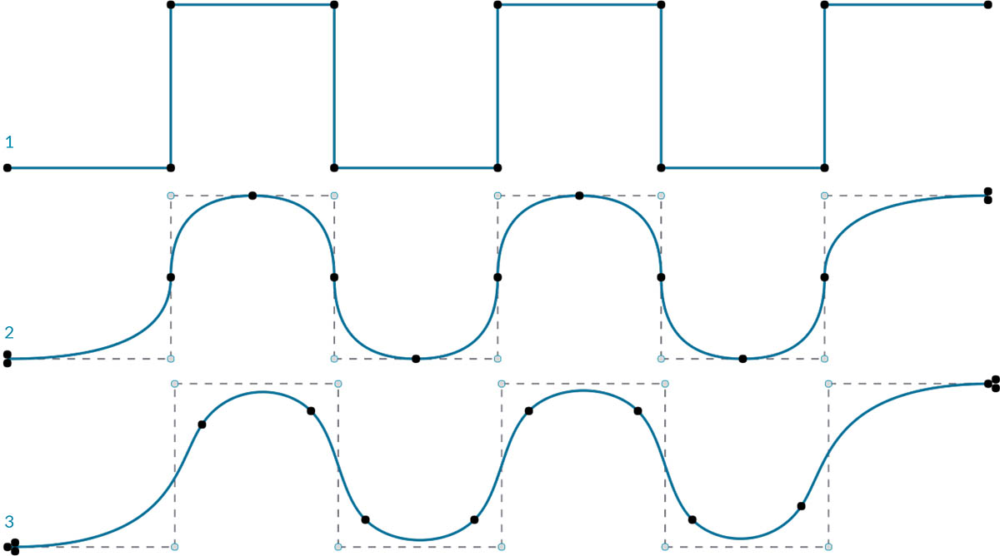
- Degree = 1
- Degree = 2
- Degree = 3
{% hint style="info" %} Note that the higher the degree value, the more Control Points are used to interpolate the resulting Curve. {% endhint %}
Surfaces
Surfaces in Dynamo
What is Surface
We use Surface in model to represent objects we see in our three dimensional world. While Curves are not always planar ie. they are three dimensional, the space they define is always bound to one dimension. Surfaces give us another dimension and a collection of additional properties we can use within other modeling operations.
Surface at Parameter
Import and evaluate a Surface at a Parameter in Dynamo to see what kind of information we can extract.

- Surface.PointAtParameter returns the Point at a given UV Coordinate
- Surface.NormalAtParameter returns the Normal Vector at a given UV Coordinate
- Surface.GetIsoline returns the Isoparametric Curve at a U or V Coordinate - note the isoDirection input.
Download the example files by clicking on the link below.
A full list of example files can be found in the Appendix.
{% file src="../datasets/5-2/5/Surfaces.zip" %}
Deep Dive into...
Surface
A Surface is a mathematical shape defined by a function and two parameters, Instead of t for Curves, we use U and V to describe the corresponding parameter space. This means we have more geometrical data to draw from when working with this type of Geometry. For example, Curves have tangent vectors and normal planes (which can rotate or twist along the curve's length), whereas Surfaces have normal vectors and tangent planes that will be consistent in their orientation.

- Surface
- U Isocurve
- V Isocurve
- UV Coordinate
- Perpendicular Plane
- Normal Vector
Surface Domain: A surface domain is defined as the range of (U,V) parameters that evaluate into a three dimensional point on that surface. The domain in each dimension (U or V) is usually described as two numbers (U Min to U Max) and (V Min to V Max).

Although the shape of the Surface by not look "rectangular" and it locally may have a tighter or looser set of isocurves, the "space" defined by its domain is always two dimensional. In Dynamo, Surfaces are always understood to have a domain defined by a minimum of 0.0 and maximum of 1.0 in both U and V directions. Planar or trimmed Surfaces may have different domains.
Isocurve (or Isoparametric Curve): A curve defined by a constant U or V value on the surface and a domain of values for the corresponding other U or V direction.
UV Coordinate: The Point in UV Parameter Space defined by U, V, and sometimes W.

Perpendicular Plane: A Plane that is perpendicular to both U and V Isocurves at a given UV Coordinate.
Normal Vector: A Vector defining the direction of "up" relative to the Perpendicular Plane.
NURBS Surfaces
NURBS Surfaces are very similar to NURBS curves. You can think of NURBS Surfaces as a grid of NURBS Curves that go in two directions. The shape of a NURBS Surface is defined by a number of control points and the degree of that surface in the U and V directions. The same algorithms are used to calculate shape, normals, tangents, curvatures and other properties by way of control points, weights and degree.
In the case of NURBS surfaces, there are two directions implied by the geometry, because NURBS surfaces are, regardless of the shape we see, rectangular grids of control points. And even though these directions are often arbitrary relative to the world coordinate system, we will use them frequently to analyze our models or generate other geometry based on the Surface.

- Degree (U,V) = (3,3)
- Degree (U,V) = (3,1)
- Degree (U,V) = (1,2)
- Degree (U,V) = (1,1)
Polysurfaces
Polysurfaces are composed of Surfaces that are joined across an edge. Polysurfaces offer more than two dimensional UV definition in that we can now move through the connected shapes by way of their Topology.
While "Topology" generally describes a concept around how parts are connected and/or related Topology in Dynamo is also a type of Geometry. Specifically it is a parent category for Surfaces, Polysurfaces, and Solids.
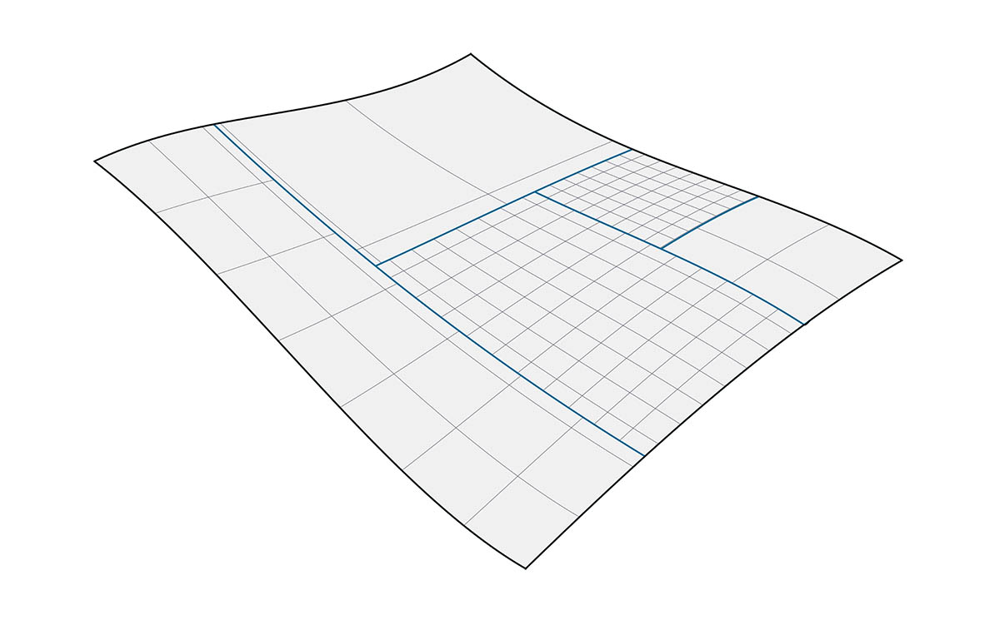
Sometimes called patches, joining Surfaces in this manner allows us to make more complex shapes as well as define detail across the seam. Conveniently we can apply a fillet or chamfer operation to the edges of a Polysurface.
Solids
Solids in Dynamo
What is Solid?
If we want to construct more complex models that cannot be created from a single surface or if we want to define an explicit volume, we must now venture into the realm of Solids (and Polysurfaces). Even a simple cube is complex enough to need six surfaces, one per face. Solids give access to two key concepts that Surfaces do not - a more refined topological description (faces, edges, vertices) and Boolean operations.
Boolean Operation to Create Spiky Ball Solid
You can use Boolean operations to modify solids. Let's use a few Boolean operations to create a spiky ball.

- Sphere.ByCenterPointRadius: Create the base Solid.
- Topology.Faces, Face.SurfaceGeometry: Query the faces of the Solid and convert to surface geometryin this case, the Sphere has only one Face.
- Cone.ByPointsRadii: Construct cones using points on the surface.
- Solid.UnionAll: Union the Cones and the Sphere.
- Topology.Edges: Query the edges of the new Solid
- Solid.Fillet: Fillet the Edges of the spiky ball
Download the example file by clicking on the link below.
A full list of example files can be found in the Appendix.
{% file src="../datasets/5-2/6/Geometry for Computational Design - Solids.dyn" %}
Freezing
Boolean operations are complex and can be slow to calculate. Use Freeze functionality to suspend the execution of selected nodes and affected downstream nodes.
1.Use the right-click contextual menu to Freeze the Solid Union operation
2. The selected node and all downstream nodes will preview in a light grey ghosted mode, and affected wires will be displayed as dashed lines. The affected geometry preview will also be ghosted. You can now change values upstream without calculating the boolean union.
3. To unfreeze the nodes, right-click and uncheck Freeze.
4. All affected nodes and associated geometry previews will update and revert to the standard preview mode.
Deep Dive into...
Solids
Solids consist of one or more Surfaces that contain volume by way of a closed boundary that defines "in" or "out." Regardless of how many of these Surfaces there are, they must form a "watertight" volume to be considered a Solid. Solids can be created by joining Surfaces or Polysurfaces together or by using operations such as loft, sweep, and revolve. Sphere, Cube, Cone and Cylinder primitives are also Solids. A Cube with at least one face removed counts as a Polysurface, which has some similar properties, but it is not a Solid.

- A Plane is made of a single Surface and is not a Solid.
- A Sphere is made of one Surface but is a Solid.
- A Cone is made of two surfaces joined together to make a Solid.
- A Cylinder is made of three surfaces joined together to make a Solid.
- A Cube is made of six surfaces joined together to make a Solid.
Topology
Solids are made up of three types of elements: Vertices, Edges, and Faces. Faces are the surfaces that make up the Solid. Edges are the Curves that define the connection between adjacent faces, and vertices are the start and end points of those Curves. These elements can be queried using the Topology nodes.

- Faces
- Edges
- Vertices
Operations
Solids can be modified by filleting or chamfering their edges to eliminate sharp corners and angles. The chamfer operation creates a ruled surface between two faces, while a fillet blends between faces to maintain tangency.

- Solid Cube
- Chamfered Cube
- Filleted Cube
Boolean Operations
Solid Boolean operations are methods for combining two or more Solids. A single Boolean operation actually means performing four operations:
- Intersect two or more objects.
- Split them at the intersections.
- Delete unwanted portions of the geometry.
- Join everything back together.
This makes Solid Booleans a powerful time-saving process. There are three Solid Boolean operations that distinguish which parts of the geometry are kept. 
- Union: Remove the overlapping portions of the Solids and join them into a single Solid.
- Difference: Subtract one Solid from another. The Solid to be subtracted is referred to as a tool. Note that you could switch which Solid is the tool to keep the inverse volume.
- Intersection: Keep only the intersecting volume of the two Solids.
In addition to these three operations, Dynamo has Solid.DifferenceAll and Solid.UnionAll nodes for performing difference and union operations with multiple Solids. 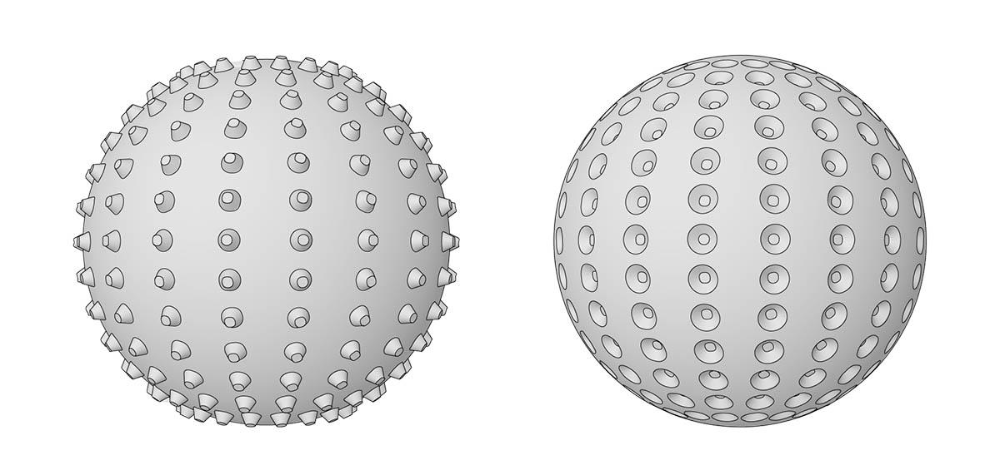
- UnionAll: Union operation with sphere and outward-facing cones
- DifferenceAll: Difference operation with sphere and inward-facing cones
Meshes
Mesh in Dynamo
What is Mesh?
In the field of computational modeling, Meshes are one of the most pervasive forms of representing 3D geometry. Mesh geometry is generally made of a collection of quadrilaterals or triangles, it can be a light-weight and flexible alternative to working with NURBS, and Meshes are used in everything from rendering and visualizations to digital fabrication and 3D printing.
Mesh Elements
Dynamo defines Meshes using a Face-Vertex data structure. At its most basic level, this structure is simply a collection of points which are grouped into polygons. The points of a Mesh are called vertices, while the surface-like polygons are called faces.
To create a Mesh we need a list of vertices and a system of grouping those vertices into faces called an index group.
- List of vertices
- List of index groups to define faces
Mesh Toolkit
Dynamo's mesh capabilities can be extended by installing the Mesh Toolkit package. The Dynamo Mesh Toolkit provides tools to import Meshes from external file formats, create a Mesh from Dynamo geometry objects, and manually build Meshes by their vertices and indices.
The library also provides tools to modify Meshes, repair Meshes, or extract horizontal slices for use in fabrication.
Visit Mesh Toolkit case studies for example on using this package.
Deep Dive into...
Mesh
A Mesh is a collection of quadrilaterals and triangles that represents a surface or solid geometry. Like Solids, the structure of a Mesh object includes vertices, edges, and faces. There are additional properties that make Meshes unique as well, such as normals.
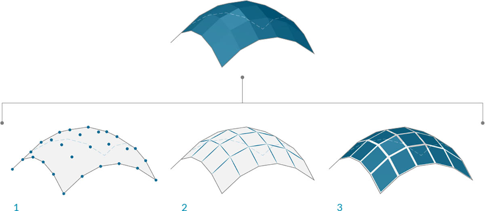
- Mesh vertices
- Mesh edges *Edges with only one adjoining face are called "Naked." All other edges are "Clothed"
- Mesh faces
Vertices + Vertex Normals
The vertices of a Mesh are simply a list of points. The index of the vertices is very important when constructing a Mesh, or getting information about the structure of a Mesh. For each vertex, there is also a corresponding vertex normal (vector) which describes the average direction of the attached faces and helps us understand the "in" and "out" orientation of the Mesh.
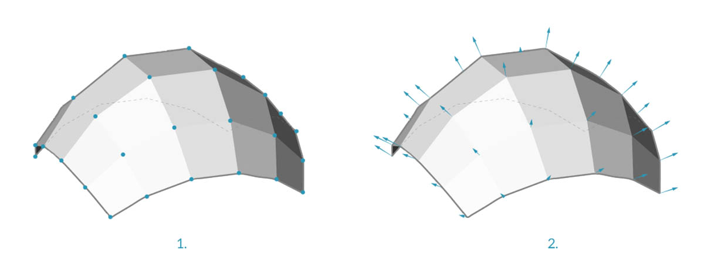
- Vertices
- Vertex Normals
Faces
A face is an ordered list of three or four vertices. The surface representation of a Mesh face is therefore implied according to the position of the vertices being indexed. We already have the list of vertices that make up the Mesh, so instead of providing individual points to define a face, we simply use the index of the vertices. This also allows us to use the same vertex in more than one face.
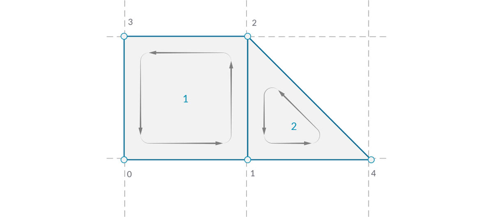
- A quad face made with indices 0, 1, 2, and 3
- A triangle face made with indices 1, 4, and 2 Note that the index groups can be shifted in their order - as long as the sequence is ordered in a counter-clockwise manner, the face will be defined correctly
Meshes versus NURBS Surfaces
How is Mesh geometry different from NURBS geometry? When might you want to use one instead of the other?
Parameterization
In a previous chapter, we saw that NURBS surfaces are defined by a series of NURBS curves going in two directions. These directions are labeled U and V, and allow a NURBs surface to be parameterized according to a two-dimensional surface domain. The curves themselves are stored as equations in the computer, allowing the resulting surfaces to be calculated to an arbitrarily small degree of precision. It can be difficult, however, to combine multiple NURBS surfaces together. Joining two NURBS surfaces will result in a polysurface, where different sections of the geometry will have different UV parameters and curve definitions.
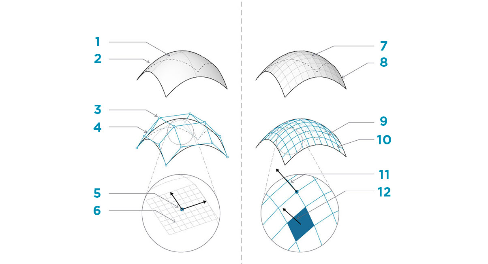
- Surface
- Isoparametric (Isoparm) Curve
- Surface Control Point
- Surface Control Polygon
- Isoparametric Point
- Surface Frame
- Mesh
- Naked Edge
- Mesh Network
- Mesh Edges
- Vertex Normal
- Mesh Face / Mesh Face Normal
Meshes, on the other hand, are comprised of a discrete number of exactly defined vertices and faces. The network of vertices generally cannot be defined by simple UV coordinates, and because the faces are discrete the amount of precision is built into the Mesh and can only be changed by refining the Mesh and adding more faces. The lack of mathematical descriptions allows Meshes to more flexibly handle complex geometry within a single Mesh.
Local versus Global Influence
Another important difference is the extent to which a local change in Mesh or NURBS geometry affects the entire form. Moving one vertex of a Mesh only affects the faces that are adjacent to that vertex. In NURBS surfaces, the extent of the influence is more complicated and depends on the degree of the surface as well as the weights and knots of the control points. In general, however, moving a single control point in a NURBS surface creates a smoother, more extensive change in geometry.
- NURBS Surface - moving a control point has influence that extends across the shape
- Mesh geometry - moving a vertex has influence only on adjacent elements
One analogy that can be helpful is to compare a vector image (composed of lines and curves) with a raster image (composed of individual pixels). If you zoom into a vector image, the curves remain crisp and clear, while zooming into a raster image results in seeing individual pixels become larger. In this analogy, NURBS surfaces can be compared to a vector image because there is a smooth mathematical relationship, while a Mesh behaves similarly to a raster image with a set resolution.
The Building Blocks of Programs
Once we are ready to dive deeper into developing Visual Programs, we will need a deeper understanding of the building blocks we will use. This chapter introduces fundamental concepts around data - the stuff that travels through the Wires of our Dynamo program.

Data
Data is the stuff of our programs. It travels through Wires, supplying inputs for Nodes where it gets processed into a new form of output data. Let's review the definition of data, how it's structured, and begin using it in Dynamo.
What is Data?
Data is a set of values of qualitative or quantitative variables. The simplest form of data is numbers such as 0, 3.14, or 17. But data can also be of a number of different types: a variable representing changing numbers (height); characters (myName); geometry (Circle); or a list of data items (1,2,3,5,8,13,...).
In Dynamo, we add/feed data to the input Ports of Nodes - we can have data without actions but we need data to process the actions that our Nodes represent. When we've added a Node to the Workspace, if it doesn't have any inputs supplied, the result will be a function, not the result of the action itself.

- Simple Data
- Data and Action (A Node) successfully executes
- Action (A Node) without Data Inputs returns a generic function
Null - Absence of Data
Beware of Nulls The 'null' type represents the absence of data. While this is an abstract concept, you will likely come across this while working with Visual Programming. If an action doesn't create a valid result, the Node will return a null.
Testing for nulls and removing nulls from data structure is a crucial part to creating robust programs.
| Icon | Name/Syntax | Inputs | Outputs |
|---|---|---|---|
 | Object.IsNull | obj | bool |
Data Structures
When we are Visual Programming, we can very quickly generate a lot of data and require a means of managing its hierarchy. This is the role of Data Structures, the organizational schemes in which we store data. The specifics of Data Structures and how to use them vary from programming language to programming language.
In Dynamo, we add hierarchy to our data through Lists. We will explore this in depth in later chapters, but let's start simply:
A list represents a collection of items placed into one structure of data:
- I have five fingers (items) on my hand (list).
- There are ten houses (items) on my street (list).

- A Number Sequence node defines a list of numbers by using a start, amount, and step input. With these nodes, we've created two separate lists of ten numbers, one which ranges from 100-109 and another which ranges from 0-9.
- The List.GetItemAtIndex node selects an item in a list at a specific index. When choosing 0, we get the first item in the list (100 in this case).
- Applying the same process to the second list, we get a value of 0, the first item in the list.
- Now we merge the two lists into one by using the List.Create node. Notice that the node creates a list of lists. This changes the structure of the data.
- When using List.GetItemAtIndex again, with index set to 0, we get the first list in the list of lists. This is what it means to treat a list as an item, which is somewhat different from other scripting languages. We will get more advanced with list manipulation and data structure in later chapters.
The key concept to understand about data hierarchy in Dynamo: with respect to data structure, lists are regarded as items. In other words, Dynamo functions with a top-down process for understanding data structures. What does this mean? Let's walk through it with an example.
Exercise: Using Data to Make a Chain of Cylinders
Download the example file by clicking on the link below.
A full list of example files can be found in the Appendix.
{% file src="../datasets/5-3/1/Building Blocks of Programs - Data.dyn" %}
In this first example, we assemble a shelled cylinder which walks through the geometry hierarchy discussed in this section.
Part I: Set up Graph for one cylinder with some changeable parameters.
1.Add Point.ByCoordinates - after adding the node to canvas, we see a point at the origin of the Dynamo preview grid. The default values of the x,y, and z inputs are 0.0, giving us a point at this location.

2. Plane.ByOriginNormal - The next step in the geometry hierarchy is a plane. There are several ways to construct a plane, and we are using an origin and normal for the input. The origin is the point node created in the previous step.
Vector.ZAxis - this is a unitized vector in the z direction. Notice there are not inputs, only a vector of [0,0,1] value. We use this as the normal input for the Plane.ByOriginNormal node. This gives us a rectangular plane in the Dynamo preview.

3. Circle.ByPlaneRadius - Stepping up the hierarchy, we now create a curve from the plane in our previous step. After plugging into the node, we get a circle at the origin. The default radius on the node is value of 1.

4. Curve.Extrude - Now we make this thing pop by giving it some depth and going in the third dimension. This node creates a surface from a curve by extruding it. The default distance on the node is 1, and we should see a cylinder in the viewport.
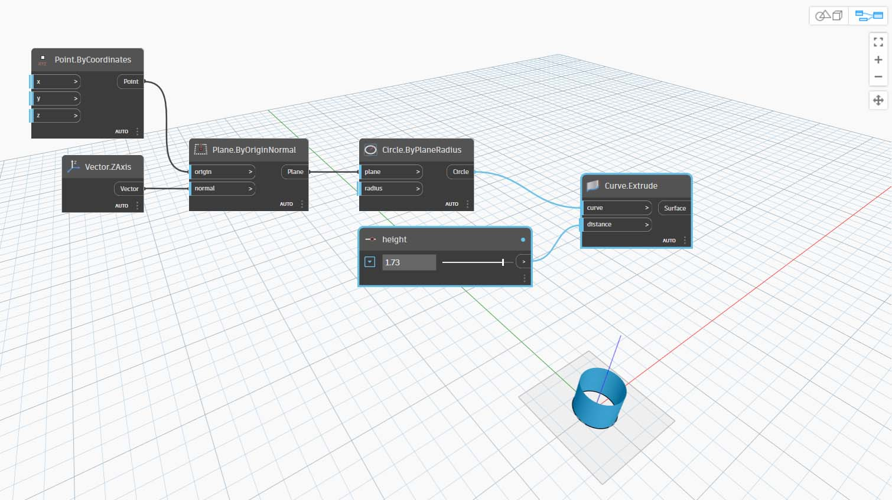
5. Surface.Thicken - This node gives us a closed solid by offsetting the surface a given distance and closing the form. The default thickness value is 1, and we see a shelled cylinder in the viewport in line with these values.
6. Number Slider - Rather than using the default values for all of these inputs, let's add some parametric control to the model.
Domain Edit - after adding the number slider to the canvas, click the caret in the top left to reveal the domain options.
Min/Max/Step - change the min, max, and step values to 0,2, and 0.01 respectively. We are doing this to control the size of the overall geometry.

7. Number Sliders - In all of the default inputs, let's copy and paste this number slider (select the slider, hit Ctrl+C, then Ctrl+V) several times, until all of the inputs with defaults have a slider instead. Some of the slider values will have to be larger than zero to get the definition to work (ie: you need an extrusion depth in order to have a surface to thicken).


8. We've now created a parametric shelled cylinder with these sliders. Try to flex some of these parameters and see the geometry update dynamically in the Dynamo viewport.

Number Sliders - taking this a step further, we've added a lot of sliders to the canvas, and need to clean up the interface of the tool we just created. Right click on one slider, select "Rename..." and change each slider to the appropriate name for its parameter (thickness, Radius, Height, etc).

Part II: Populate an array of cylinders from Part I
9. At this point, we've created an awesome thickening cylinder thing. This is one object currently, let's look at how to create an array of cylinders that remains dynamically linked. To do this, we're going to create a list of cylinders, rather than working with a single item.
Addition (+) - Our goal is to add a row of cylinders next to the cylinder we've created. If we want to add one cylinder adjacent to the current one, we need to consider both radius of the cylinder and the thickness of its shell. We get this number by adding the two values of the sliders.

10. This step is more involved so let's walk through it slowly: the end goal is to create a list of numbers which define the locations of each cylinder in a row.

a. Multiplication - First, we want to multiply the value from the previous step by 2. The value from the previous step represents a radius, and we want to move the cylinder the full diameter.
b. Number Sequence - we create an array of numbers with this node. The first input is the multiplication node from the previous step into the step value. The start value can be set to 0.0 using a number node.
c. Integer Slider - For the amount value, we connect an integer slider. This will define how many cylinders are created.
d. Output - This list shows us the distance moved for each cylinder in the array, and is parametrically driven by the original sliders.
11. This step is simple enough - plug the sequence defined in the previous step into the x input of the original Point.ByCoordinates. This will replace the slider pointX which we can delete. We now see an array of cylinders in the viewport (make sure the integer slider is larger than 0).

12. The chain of cylinders is still dynamically linked to all of the sliders. Flex each slider to watch the definition update!

Math
If the simplest form of data is numbers, the easiest way to relate those numbers is through Mathematics. From simple operators like divide to trigonometric functions, to more complex formulas, Math is a great way to start exploring numeric relationships and patterns.
Arithmetic Operators
Operators are a set of components that use algebraic functions with two numeric input values, which result in one output value (addition, subtraction, multiplication, division, etc.). These can be found under Operators>Actions.
| Icon | Name (Syntax) | Inputs | Outputs |
|---|---|---|---|
 | Add (+) | var[]...[], var[]...[] | var[]...[] |
 | Subtract (-) | var[]...[], var[]...[] | var[]...[] |
 | Multiply (*) | var[]...[], var[]...[] | var[]...[] |
| Divide (/) | var[]...[], var[]...[] | var[]...[] |
Exercise: The Golden Spiral Formula
Download the example file by clicking on the link below.
A full list of example files can be found in the Appendix.
{% file src="../datasets/5-3/2/Building Blocks of Programs - Math.dyn" %}
Part I: Parametric Formula
Combine operators and variables to form a more complex relationship through Formulas. Use sliders to make a Formula that can be controlled with input parameters.
1.Create Number sequence that represents the 't' in the parametric equation, so we want to use a list that's large enough to define a spiral.
Number Sequence: define a number sequence based on three inputs: start, amount and step.

2. The step above has created a list of numbers to define the parametric domain. Next, create group of Nodes represent the golden spiral equation.
The golden spiral is defined as the equation:
$$ x = r cos = a cos e^{b} $$
$$ y = r sin = a sin e^{b} $$
The image below represents the golden spiral in in visual programming form. When stepping through the group of Nodes, try to pay attention to the parallel between the visual program and written equation.

a. Number Slider: Add two number sliders to the canvas. These sliders will represent the a and the b variables of the parametric equation. These represent a constant which is flexible, or parameters which we can adjust towards a desired outcome.
b. Multiplication (*) : The multiplication Node is represented by an asterisk. We'll use this repeatedly to connect multiplying variables
c. Math.RadiansToDegrees: The 't' values need to be translated to degrees for their evaluation in the trigonometric functions. Remember, Dynamo defaults to degrees for evaluating these functions.
d. Math.Pow: as a function of the 't' and the number 'e' this creates the Fibonacci sequence.
e. Math.Cos and Math.Sin: These two trigonmetric functions will differentiate the x-coordinate and the y-coordinate, respectively, of each parametric point.
f. Watch: We now see that our output is two lists, these will be the x and y coordinates of the points used to generate the spiral.
Part II: From Formula to Geometry
Now, the bulk of Nodes from the previous step will work fine, but it is a lot of work. To create a more efficient workflow, have a look at DesignScript to define a string of Dynamo expressions into one node. In this next series of steps, we'll look at using the parametric equation to draw the Fibonacci spiral.
Point.ByCoordinates: Connect the upper multiplication node into the 'x' input and the lower into the 'y' input. We now see a parametric spiral of points on the screen.

Polycurve.ByPoints: Connect Point.ByCoordinates from the previous step into points. We can leave connectLastToFirst without an input because we aren't making a closed curve. This creates a spiral which passes through each point defined in the previous step.

We've now completed the Fibonacci Spiral! Let's take this further into two separate exercises from here, which we'll call the Nautilus and the Sunflower. These are abstractions of natural systems, but the two different applications of the Fibonacci spiral will be well represented.
Part III: From Spiral to Nautilus
Circle.ByCenterPointRadius: We'll use a circle Node here with the same inputs as the previous step. The radius value defaults to 1.0, so we see an immediate output of circles. It becomes immediately legible how the points diverge further from the origin.

Number Sequence: This is the original array of 't'. By plugging this into the radius value of Circle.ByCenterPointRadius, the circle centers are still diverging further from the origin, but the radius of the circles is increasing, creating a funky Fibonacci circle graph.
Bonus points if you make it 3D!

Part IV: From Nautilus to Phyllotaxis
Pattern Now that we've made a circular Nautilus shell, let's jump into parametric grids. We're going to use a basic rotate on the Fibonacci Spiral to create a Fibonacci grid, and the result is modeled after the growth of sunflower seeds.
As a jumping-off point, let's start with the same step from the previous exercise: creating a spiral array of points with the Point.ByCoordinates Node.

Next, follow these mini steps to generate a series of spiral at various rotation.

a. Geometry.Rotate: There are several Geometry.Rotate options; be certain you've chosen the Node with geometry,basePlane, and degrees as its inputs. Connect Point.ByCoordinates into the geometry input. Right click on this Node and make sure the lacing is set to 'Cross Product'
b. Plane.XY: Connect to the basePlane input. We will rotate around the origin, which is the same location as the base of the spiral.
c. Number Range: For our degree input, we want to create multiple rotations. We can do this quickly with a Number Range component. Connect this into the degrees input.
d. Number: And to define the range of numbers, add three number nodes to the canvas in vertical order. From top to bottom, assign values of 0.0,360.0, and 120.0 respectively. These are driving the rotation of the spiral. Notice the output results from the Number Range node after connecting the three number nodes to the Node.

Our output is beginning to resemble a whirlpool. Let's adjust some of the Number Range parameters and see how the results change.
Change the step size of the Number Range node from 120.0 to 36.0. Notice that this is creating more rotations and is therefore giving us a denser grid.

Change the step size of the Number Range node from 36.0 to 3.6. This now gives us a much denser grid, and the directionality of the spiral is unclear. Ladies and gentlemen, we've created a sunflower.

Logic
Logic, or more specifically, Conditional Logic, allows us to specify an action or set of actions based on a test. After evaluating the test, we will have a Boolean value representing True or False that we can use to control the Program Flow.
Booleans
Numeric variables can store a whole range of different numbers. Boolean variables can only store two values referred to as True or False, Yes or No, 1 or 0. We rarely use booleans to perform calculations because of their limited range.
Conditional Statements
The "If" statement is a key concept in programming: "If this is true, then that happens, otherwise something else happens. The resulting action of the statement is driven by a boolean value. There are multiple ways to define an "If" statement in Dynamo:
| Icon | Name (Syntax) | Inputs | Outputs |
|---|---|---|---|
 | If (If) | test, true, false | result |
| Formula (IF(x,y,z)) | x, y, z | result | |
 | Code Block ((x?y:z);) | x? y, z | result |
Let's go over a brief example on each of these three nodes in action using the conditional "If" statement.
In this image, the boolean is set to true, which means that the result is a string reading: "this is the result if true". The three Nodes creating the If statement are working identically here.
Again, the Nodes are working identically. If the boolean is changed to false, our result is the number Pi, as defined in the original If statement.
Exercise: Logic and Geometry
Download the example file by clicking on the link below.
A full list of example files can be found in the Appendix.
{% file src="../datasets/5-3/3/Building Blocks of Programs - Logic.dyn" %}
Part I: Filtering a List
- Let's use logic to separate a list of numbers into a list of even numbers and a list of odd numbers.

a. Number Range - add a number range to the canvas.
b. Numbers - add three number nodes to the canvas. The value for each number node should be: 0.0 for start, 10.0 for end, and 1.0 for step.
c. Output - our output is a list of 11 numbers ranging from 0-10.
d. Modulo (%)- Number Range into x and 2.0 into y. This calculates the remainder for each number in the list divided by 2. The output from this list gives us a list of values alternating between 0 and 1.
e. Equality Test (==) - add an equality test to the canvas. Plug modulo output into the x input and 0.0 into the y input.
f. Watch - The output of the equality test is a list of values alternating between true and false. These are the values used to separate the items in the list. 0 (or true) represents even numbers and (1, or false) represents odd numbers.
g. List.FilterByBoolMask - this Node will filter the values into two different lists based on the input boolean. Plug the original number range into the list input and the equality test output into the mask input. The in output represents true values while the out output represents false values.
h. Watch - as a result, we now have a list of even numbers and a list of odd numbers. We've used logical operators to separate lists into patterns!
Part II: From Logic to Geometry
Building off of the logic established in the first exercise, let's apply this setup into a modeling operation.
2. We'll jump off from the previous exercise with the same Nodes. The only exceptions (in addition to changing the format are):

a. Use a Sequence Node with these input values.
b. We've unplugged the in list input into List.FilterByBoolMask. We'll put these Nodes aside for now, but they'll come in handy later in the exercise.
3. Let's begin by creating a separate group of Graph as shown in the image above. This group of Nodes represents a parametric equation to define a line curve. A few notes:

a. The first Number Slider represents the frequency of the wave, it should have a min of 1, a max of 4, and a step of 0.01.
b. The second Number Slider represents the amplitude of the wave, should have a min of 0, a max of 1, and a step of 0.01.
c. PolyCurve.ByPoints - if the above Node diagram is copied, the result is a sine curve in the Dynamo Preview viewport.
The method here for the inputs: use number nodes for more static properties and number sliders on the more flexible ones. We want to keep the original number range that we're defining in the beginning of this step. However, the sine curve that we create here should have some flexibility. We can move these sliders to watch the curve update its frequency and amplitude.

4. We're going to jump around a bit in the definition, so let's look at the end result so that we can reference what we're getting at. The first two steps are made separately, we now want to connect the two. We'll use the base sine curve to drive the location of the zipper components, and we'll use the true/false logic to alternate between little boxes and larger boxes.

a. Math.RemapRange - Using the number sequence created in step 02, let's create a new series of numbers by remapping the range. The original numbers from step 01 range from 0-100. These numbers range from 0 to 1 by the newMin and newMax inputs respectively.
5. Create a Curve.PointAtParameter Node, then connect the Math.RemapRange output from step 04 as its param input.

This step creates points along the curve. We remapped the numbers to 0 to 1 because the input of param is looking for values in this range. A value of 0 represents the start point, a value of 1 represents the end points. All numbers in between evaluate within the [0,1] range.
6. Connect the output from Curve.PointAtParameter to the List.FilterByBoolMask to separate the list of odd and even indices.

a. List.FilterByBoolMask - Plug Curve.PointAtParameter from the previous step into the list input.
b. Watch - a watch node for in and a watch node for out shows that we have two lists representing even indices and odd indices. These points are ordered in the same way on the curve, which we demonstrate in the next step.
7. Next, we are going to use the output result from List.FilterByBoolMask in step 05 to generate geometries with sizes according to its indices.
Cuboid.ByLengths - recreate the connections seen in the image above to get a zipper along the sine curve. A cuboid is just a box here, and we're defining its size based on the curve point in the center of the box. The logic of the even/odd divide should now be clear in the model.

a. List of cuboids at even indices.
b. List of cuboids at odd indices.
Voila! You have just programmed a process of defining the geometry dimensions according to the logic operation demonstrated in this exercise.
Strings
What is a String
Formally, a String is a sequence of characters representing a literal constant or some type of variable. Informally, a string is programming lingo for text. We've worked with numbers, both integers and decimal numbers, to drive parameters and we can do the same with text.
Creating Strings
Strings can be used for a wide range of applications, including defining custom parameters, annotating documentation sets, and parsing through text-based data sets. The string Node is located in the Core>Input Category.
The sample Nodes above are strings. A number can be represented as a string, as can a letter, or an entire array of text.
Exercise
Download the example file by clicking on the link below.
A full list of example files can be found in the Appendix.
{% file src="../datasets/5-3/4/Building Blocks of Programs - Strings.dyn" %}
Querying Strings
You can parse through large amounts of data quickly by querying strings. We'll talk about some basic operations which can speed up a workflow and help for software interoperability.
The image below considers a string of data coming from an external spreadsheet. The string represents the vertices of a rectangle in the XY-Plane. Let's break down some string split operations in miniature exercise:
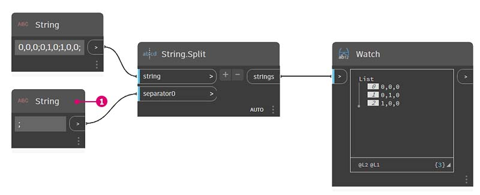
- The ";" separator splits each vertex of the rectangle. This creates a list with 3 items for each vertex.
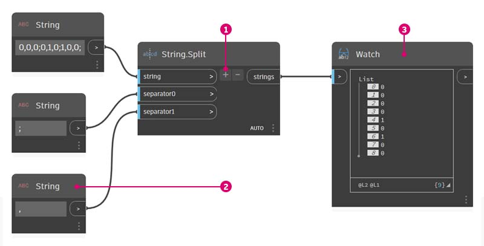
- By hitting the "+" in the middle of the Node, we create new separator.
- Add a "," string to the canvas and plug in to the new separator input.
- Our result is now a list of ten items. The Node first splits based on separator0, then based on separator1.
While the list of items above may look like numbers, they are still regarded as individual strings in Dynamo. In order to create points, their data type needs to be converted from a string to a number. This is done with the String.ToNumber Node

- This Node is straightforward. Plug the String.Split results into the input. The output doesn't look different, but the data type is now a number instead of a string.
With some basic additional operations, we now have a triangle drawn at the origin based on the original string input.

Manipulating Strings
Since a string is a generic text object, they host a wide range of applications. Let's take a look at some of the major actions in the Core>String Category in Dynamo:
This is a method of merging two strings together in order. This takes each literal string in a list and creates one merged string.
The following represents the concatenation of three strings:

- Add or subtract strings to the concatenation by clicking the +/- buttons in the center of the Node.
- The output gives one concatenated string, with spaces and punctuation included.
The join method is very similar to concatenate, except it has an added layer of punctuation.
If you've worked in Excel, you may have come across a CSV file. This stands for comma-separated values. One could use a comma (or in this case, two dashes) as the separator with the String.Join node in order to create a similar data structure.
The following image represents the joining of two strings:

- The separator input allows one to create a string which divides the joined strings.
Working with Strings
In this exercise, we're going to use methods of querying and manipulating strings to deconstruct the final stanza of Robert Frost's Stopping By Woods on a Snowy Evening. Not the most practical application, but it will help us to grasp conceptual string actions as we apply them to legible lines of rhythm and rhyme.
Let's begin with a basic string split of the stanza. We first notice that the writing is formatted based on commas. We'll use this format to separate each line into individual items.

- The base string is pasted into a String Node.
- Another String Node is used to denote the separator. In this case, we're using a comma.
- A String.Split Node is added to the canvas and connected to the two strings.
- The output shows that we've now separated the lines into individual elements.
Now, let's get to the good part of the poem: the last two lines. The original stanza was one item of data. We separated this data into individual items in the first step. Now we need to do a search for the text we're looking for. And while we can do this by selecting the last two items of the list, if this were an entire book, we wouldn't want to read through everything and manually isolate the elements.

- Instead of manually searching, we use a String.Contains Node to perform a search for a set of characters. This is the similar to doing the "Find" command in a word processor. In this case, we get a return of "true" or "false" if that substring is found within the item.
- In the searchFor input, we define a substring that we're looking for within the stanza. Let's use a String Node with the text "And miles".
- The output gives us a list of falses and trues. We'll use this boolean logic to filter the elements in the next step.

- List.FilterByBoolMask is the Node we want to use to cull out the falses and trues. The "in" output return the statements with a "mask" input of "true, while the "out" output return those which are "false".
- Our output from the "in" is as expected, giving us the final two lines of the stanza.
Now, we want to drive home the repetition of the stanza by merging the two lines together. When viewing the output of the previous step, we notice that there are two items in the list:

- Using two List.GetItemAtIndex Nodes, we can isolate the items using the values of 0 and 1 as the index input.
- The output for each node gives us, in order, the final two lines.
To merge these two items into one, we use the String.Join Node:

- After adding the String.Join Node, we notice that we need a separator.
- To create the separator, we add a String Node to the canvas and type in a comma.
- The final output has merged the last two items into one.
This may seem like a lot of work to isolate the last two lines; and it's true, string operations often require some up front work. But they are scalable, and they can be applied to large datasets with relative ease. If you are working parametrically with spreadsheets and interoperability, be sure to keep string operations in mind.
Color
Color is a great data type for creating compelling visuals as well as for rendering difference in the output from your Visual Program. When working with abstract data and varying numbers, sometimes it's difficult to see what's changing and to what degree. This is a great application for colors.
Creating Colors
Colors in Dynamo are created using ARGB inputs.This corresponds to the Alpha, Red, Green, and Blue channels. The alpha represents the transparency of the color, while the other three are used as primary colors to generate the whole spectrum of color in concert.
| Icon | Name (Syntax) | Inputs | Outputs |
|---|---|---|---|
 | ARGB Color (Color.ByARGB) | A,R,G,B | color |
Querying Color Values
The colors in the table below query the properties used to define the color: Alpha, Red, Green, and Blue. Note that the Color.Components Node gives us all four as different outputs, which makes this Node preferable for querying the properties of a color.
| Icon | Name (Syntax) | Inputs | Outputs |
|---|---|---|---|
 | Alpha (Color.Alpha) | color | A |
 | Red (Color.Red) | color | R |
 | Green (Color.Green) | color | G |
 | Blue (Color.Blue) | color | B |
| Components (Color.Components) | color | A, R, G, B |
The colors in the table below correspond to the HSB color space. Dividing the color into hue, saturation, and brightness is arguably more intuitive for how we interpret color: What color should it be? How colorful should it be? And how light or dark should the color be? This is the breakdown of hue, saturation, and brightness respectively.
| Icon | Name (Syntax) | Inputs | Outputs |
|---|---|---|---|
 | Hue (Color.Hue) | color | Hue |
 | Saturation (Color.Saturation) | color | Saturation |
 | Brightness (Color.Brightness) | color | Brightness |
Color Range
The color range is similar to the Remap Range Node from the #part-ii-from-logic-to-geometryexercise: it remaps a list of numbers into another domain. But instead of mapping to a number domain, it maps to a color gradient based on input numbers ranging from 0 to 1.
The current Node works well, but it can be a little awkward to get everything working the first time around. The best way to become familiar with the color gradient is to test it out interactively. Let's do a quick exercise to review how to setup a gradient with output colors corresponding to numbers.

- Define three colors: Using a Code Block node, define red, green, and blue by plugging in the appropriate combinations of 0 and 255.
- Create list: Merge the three colors into one list.
- Define Indices: Create a list to define the grip positions of each color (ranging from 0 to 1). Notice the value of 0.75 for green. This places the green color 3/4 of the way across the horizontal gradient in the color range slider.
- Code Block: Input values (between 0 and 1) to translate to colors.
Color Preview
The Display.ByGeometry Node gives us the ability to color geometry in the Dynamo viewport. This is helpful for separating different types of geometry, demonstrating a parametric concept, or defining an analysis legend for simulation. The inputs are simple: geometry and color. To create a gradient like the image above, the color input is connected to the Color Range Node.

Color On Surfaces
The Display.BySurfaceColors node gives us the ability to map data across a surface using color! This functionality introduces some exciting possibilities for visualizing data obtained through discrete analysis like solar, energy, and proximity. Applying color to a surface in Dynamo is similar to applying a texture to a material in other CAD environments. Let's demonstrate how to use this tool in the brief exercise below.
.jpg)
Exercise
Basic Helix with Colors
Download the example file by clicking on the link below.
A full list of example files can be found in the Appendix.
{% file src="../datasets/5-3/5/Building Blocks of Programs - Color.dyn" %}
This exercise focuses on controlling color parametrically in parallel with geometry. The geometry is a basic helix, which we define below using the Code Block. This is a quick and easy way to create a parametric function; and since our focus is on color (rather than geometry), we use the code block to efficiently create the helix without cluttering the canvas. We will use the code block more frequently as the primer moves to more advanced material.

- Code Block: Define the two code blocks with the formulas above. This is a quick parametric method for creating a spiral.
- Point.ByCoordinates: Plug the three outputs from the code block into the coordinates for the Node.
We now see an array of points creating a helix. The next step is to create a curve through the points so that we can visualize the helix.

- PolyCurve.ByPoints: Connect the Point.ByCoordinates output into the points input for the Node. We get a helical curve.
- Curve.PointAtParameter: Connect the PolyCurve.ByPoints output into the curve input. The purpose of this step is to create a parametric attractor point which slides along the curve. Since the curve is evaluating a point at parameter, we'll need to input a param value between 0 and 1.
- Number Slider: After adding to the canvas, change the min value to 0.0, the max value to 1.0, and the step value to .01. Plug the slider output into the param input for Curve.PointAtParameter. We now see a point along the length of the helix, represented by a percentage of the slider (0 at the start point, 1 at the end point).
With the reference point created, we now compare the distance from the reference point to the original points defining the helix. This distance value will drive geometry as well as color.

- Geometry.DistanceTo: Connect Curve.PointAtParameter output into the input. Connect Point.ByCoordinates into the geometry input.
- Watch: The resultant output shows a list of distances from each helical point to the reference point along the curve.
Our next step is to drive parameters with the list of distances from the helical points to the reference point. We use these distance values to define the radii of a series of spheres along the curve. In order to keep the spheres a suitable size, we need to remap the values for distance.
- Math.RemapRange: Connect Geometry.DistanceTo output into the numbers input.
- Code Block: connect a code block with a value of 0.01 into the newMin input and a code block with a value of 1 into the newMax input.
- Watch: connect the Math.RemapRange output into one node and the Geometry.DistanceTo output into another. Compare the results.
This step has remapped the list of distance to be a smaller range. We can edit the newMin and newMax values however we see fit. The values will remap and will have the same distribution ratio across the domain.

- Sphere.ByCenterPointRadius: connect the Math.RemapRange output into the radius input and the original Point.ByCoordinates output into the centerPoint input.
Change the value of the number slider and watch the size of the spheres update. We now have a parametric jig

The size of the spheres demonstrates the parametric array defined by a reference point along the curve. Let's use the same concept for the sphere radius to drive their color.

- Color Range: Add top the canvas. When hovering over the value input, we notice that the numbers requested are between 0 and 1. We need to remap the numbers from the Geometry.DistanceTo output so that they are compatible with this domain.
- Sphere.ByCenterPointRadius: For the time being, let's disable the preview on this node (Right Click > Preview)

- Math.RemapRange: This process should look familiar. Connect the Geometry.DistanceTo output into the numbers input.
- Code Block: Similar to an earlier step, create a value of 0 for the newMin input and a value of 1 for the newMax input. Notice that we are able to define two outputs from one code block in this case.
- Color Range: Connect the Math.RemapRange output into the value input.

- Color.ByARGB: This is what we'll do to create two colors. While this process may look awkward, it's the same as RGB colors in another software, we're just using visual programming to do it.
- Code Block: create two values of 0 and 255. Plug the two outputs into the two Color.ByARGB inputs in agreement with the image above (or create your favorite two colors).
- Color Range: The colors input requests a list of colors. We need to create this list from the two colors created in the previous step.
- List.Create: merge the two colors into one list. Plug the output into the colors input for Color Range.

- Display.ByGeometryColor: Connect Sphere.ByCenterPointRadius into the geometry input and the Color Range into the color input. We now have a smooth gradient across the domain of the curve.
If we change the value of the Number Slider from earlier in the definition, the colors and sizes update. Colors and radius size are directly related in this case: we now have a visual link between two parameters!

Color on Surfaces Exercise
Download the example file by clicking on the link below.
A full list of example files can be found in the Appendix.
{% file src="../datasets/5-3/5/BuildingBlocks of Programs - ColorOnSurface.zip" %}
First, we need to create (or reference) a surface to use as an input for the Display.BySurfaceColors node. For this example we are lofting between a sine and cosine curve.

- This group of nodes is creating points along the Z-axis then displacing them based on sine and cosine functions. The two point lists are then used to generate NURBS curves.
- Surface.ByLoft: generate an interpolated surface between the list of NURBS curves.

- File Path: select an image file to sample for pixel data downstream
- use File.FromPath to convert the file path to a file then pass into Image.ReadFromFile to output an image for sampling
- Image.Pixels: input an image and provide a sample value to use along the x and y dimensions of the image.
- Slider: provide sample values for Image.Pixels
- Display.BySurfaceColors: map array of color values across surface along X and Y respectively
Close-up preview of the output surface with resolution of 400x300 samples
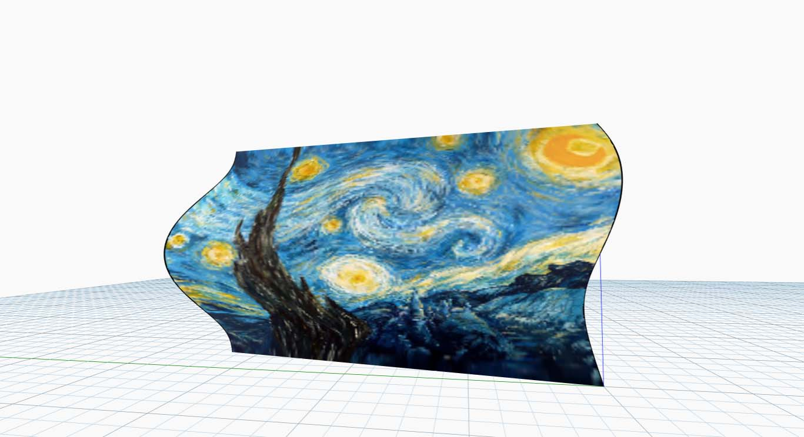
Designing with Lists
Lists are the way we organize data. On your computer's operating system, you have files and folders. In Dynamo, we can regard these as items and lists, respectively. Like your operating system, there are many ways to create, modify, and query data. In this chapter, we'll break down how lists are managed in Dynamo.
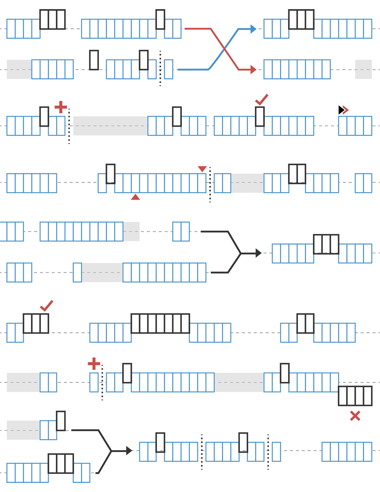
What's a List
What's a List?
A list is a collection of elements, or items. Take a bunch of bananas, for example. Each banana is an item within the list (or bunch). It's easier to pick up a bunch of bananas rather than each banana individually, and the same holds for grouping elements by parametric relationships in a data structure.
Photo by Augustus Binu.
{kind=link}
When we buy groceries, we put all of the purchased items into a bag. This bag is also a list. If we're making banana bread, we need 3 bunches of bananas (we're making a lot of banana bread). The bag represents a list of banana bunches and each bunch represents a list of bananas. The bag is a list of lists (two-dimensional) and the banana bunch is a list (one-dimensional).
In Dynamo, list data is ordered, and the first item in each list has an index "0". Below, we'll discuss how lists are defined in Dynamo and how multiple lists relate to one another.
Zero-Based Indices
One thing that might seem odd at first is that the first index of a list is always 0; not 1. So, when we talk about the first item of a list, we actually mean the item that corresponds to index 0.
For example, if you were to count the number of fingers we have on our right hand, chances are that you would have counted from 1 to 5. However, if you were to put your fingers in a list, Dynamo would have given them indices from 0 to 4. While this may seem a little strange to programming beginners, the zero-based index is standard practice in most computation systems.
Note that we still have 5 items in the list; its just that the list is using a zero-based counting system. And the items being stored in the list dont just have to be numbers. They can be any data type that Dynamo supports, such as points, curves, surfaces, families, etc.

a. Index
b. Point
c. Item
Often times the easiest way to take a look at the type of data stored in a list is to connect a watch node to another node's output. By default, the watch node automatically shows all indices to the left side of the list and displays the data items on the right.
These indices are a crucial element when working with lists.
Inputs and Outputs
Pertaining to lists, inputs and outputs vary depending on the Dynamo node being used. As an example, let's use a list of 5 points and connect this output to two different Dynamo nodes: PolyCurve.ByPoints and Circle.ByCenterPointRadius:

- The points input for PolyCurve.ByPoints is looking for "Point[]". This represents a list of points
- The output for PolyCurve.ByPoints is a single polycurve created from a list of five point.
- The centerPoint input for Circle.ByCenterPointRadius asks for "Point".
- The output for Circle.ByCenterPointRadius is a list of five circles, whose centers correspond to the original list of points.
The input data for PolyCurve.ByPoints and Circle.ByCenterPointRadius are the same, however the Polycurve.ByPoints node gives us one polycurve while the Circle.ByCenterPointRadius node gives us 5 circles with centers at each point. Intuitively this makes sense: the polycurve is drawn as a curve connecting the 5 points, while the circles create a different circle at each point. So what's happening with the data?
Hovering over the points input for Polycurve.ByPoints, we see that the input is looking for "Point[]". Notice the brackets at the end. This represents a list of points, and to create a polycurve, the input needs to be a list for each polycurve. This node will therefore condense each list into one polycurve.
On the other hand, the centerPoint input for Circle.ByCenterPointRadius asks for "Point". This node looks for one point, as an item, to define the center point of the circle. This is why we get five circles from the input data. Recognizing these difference with inputs in Dynamo helps to better understand how the nodes are operating when managing data.
Lacing
Data matching is a problem without a clean solution. It occurs when a node has access to differently sized inputs. Changing the data matching algorithm can lead to vastly different results.
Imagine a node which creates line segments between points (Line.ByStartPointEndPoint). It will have two input parameters which both supply point coordinates:
Shortest List
The simplest way is to connect the inputs one-on-one until one of the streams runs dry. This is called the Shortest List algorithm. This is the default behavior for Dynamo nodes:

Longest List
The Longest List algorithm keeps connecting inputs, reusing elements, until all streams run dry:

Cross Product
Finally, the Cross Product method makes all possible connections:

As you can see there are different ways in which we can draw lines between these sets of points. Lacing options are found by right-clicking the center of a node and choosing the "Lacing" menu.

Exercise
Download the example file by clicking on the link below.
A full list of example files can be found in the Appendix.
{% file src="../datasets/5-4/1/Lacing.dyn" %}
To demonstrate the lacing operations below, we'll use this base file to define shortest list, longest list, and cross product.
We'll change the lacing on Point.ByCoordinates, but won't change anything else about the graph above.
Shortest List
Choosing shortest list as the lacing option (also the default option), we get a basic diagonal line composed of five points. Five points is the length of the lesser list, so the shortest list lacing stops after it reaches the end of one list.

Longest List
By changing the lacing to longest list, we get a diagonal line which extends vertically. By the same method as the concept diagram, the last item in the list of 5 items will be repeated to reach the length of the longer list.

Cross Product
By changing the lacing to Cross Product, we get every combination between each list, giving us a 5x10 grid of points. This is an equivalent data structure to the cross product as shown in the concept diagram above, except our data is now a list of lists. By connecting a polycurve, we can see that each list is defined by its X-Value, giving us a row of vertical lines.

Working with Lists
Working with Lists
Now that we've established what a list is, let's talk about operations we can perform on it. Imagine a list as a deck of playing cards. A deck is the list and each playing card represents an item.

Photo by Christian Gidlf
{kind=link}
Query
What queries can we make from the list? This accesses existing properties.
- Number of cards in the deck? 52.
- Number of suits? 4.
- Material? Paper.
- Length? 3.5" or 89mm.
- Width? 2.5" or 64mm.
Action
What actions can we perform on the list? This changes the list based on a given operation.
- We can shuffle the deck.
- We can sort the deck by value.
- We can sort the deck by suit.
- We can split the deck.
- We can partition the deck by dealing out individual hands.
- We can select a specific card in the deck.
All of the operations listed above have analogous Dynamo nodes for working with lists of generic data. The lessons below will demonstrate some of the fundamental operations we can perform on lists.
Exercise
List Operations
Download the example file by clicking on the link below.
A full list of example files can be found in the Appendix.
{% file src="../datasets/5-4/2/List-Operations.dyn" %}
The image below is the base graph which we are drawing lines between two circles to represent basic list operations. We'll explore how to manage data within a list and demonstrate the visual results through the list actions below.

- Begin with a Code Block with a value of
500;- Plug into the x input of a Point.ByCoordinates node.
- Plug the node from the previous step into the origin input of a Plane.ByOriginNormal node.
- Using a Circle.ByPlaneRadius node, plug the node from the previous step into the plane input.
- Using Code Block, designate a value of
50;for the radius. This is the first circle we'll create.- With a Geometry.Translate node, move the circle up 100 units in the Z direction.
- With a Code Block node, define a range of ten numbers between 0 and 1 with this line of code:
0..1..#10;- Plug the code block from the previous step into the param input of two Curve.PointAtParameter nodes. Plug Circle.ByPlaneRadius into the curve input of the top node, and Geometry.Translate into the curve input of the node beneath it.
- Using a Line.ByStartPointEndPoint, connect the two Curve.PointAtParameter nodes.
List.Count
Download the example file by clicking on the link below.
A full list of example files can be found in the Appendix.
{% file src="../datasets/5-4/2/List-Count.dyn" %}
The List.Count node is straightforward: it counts the number of values in a list and returns that number. This node gets more nuanced as we work with lists of lists, but we'll demonstrate that in the coming sections.

- The **List.Count ****** node returns the number of lines in the Line.ByStartPointEndPoint node. The value is 10 in this case, which agrees with the number of points created from the original Code Block node.
List.GetItemAtIndex
Download the example file by clicking on the link below.
A full list of example files can be found in the Appendix.
{% file src="../datasets/5-4/2/List-GetItemAtIndex.dyn" %}
List.GetItemAtIndex is a fundamental way to query an item in the list.

- First, Right click on Line.ByStartPointEndPoint node to switch off its preview.
- Using the List.GetItemAtIndex node, we are selecting index "0", or the first item in the list of lines.
Change slider value between 0 and 9 to select different item using List.GetItemAtIndex.

List.Reverse
Download the example file by clicking on the link below.
A full list of example files can be found in the Appendix.
{% file src="../datasets/5-4/2/List-Reverse.dyn" %}
List.Reverse reverses the order of all of the items in a list.

- To properly visualize the reversed list of lines, create more lines by changing the Code Block to
0..1..#50;- Duplicate the Line.ByStartPointEndPoint node, insert a List.Reverse node in between Curve.PointAtParameter and the second Line.ByStartPointEndPoint
- Use Watch3D nodes to preview two different results. The first one shows the result without a reversed list. The lines connect vertically to neighboring points. The reversed list, however, will connect all of the points to the opposing order in the other list.
List.ShiftIndices
Download the example file by clicking on the link below.
A full list of example files can be found in the Appendix.
{% file src="../datasets/5-4/2/List-ShiftIndices.dyn" %}
List.ShiftIndices is a good tool for creating twists or helical patterns, or any other similar data manipulation. This node shifts the items in a list a given number of indices.

- In the same process as the reverse list, insert a List.ShiftIndices into the Curve.PointAtParameter and Line.ByStartPointEndPoint.
- Using a Code Block, designated a value of "1" to shift the list one index.
- Notice that the change is subtle, but all of the lines in the lower Watch3D node have shifted one index when connecting to the other set of points.
By changing to Code Block to a larger value, "30" for example, we notice a significant difference in the diagonal lines. The shift is working like a camera's iris in this case, creating a twist in the original cylindrical form.

List.FilterByBooleanMask
Download the example file by clicking on the link below.
A full list of example files can be found in the Appendix.
{% file src="../datasets/5-4/2/List-FilterByBooleanMask.dyn" %}

List.FilterByBooleanMask will remove certain items based on a list of booleans, or values reading "true" or "false".

In order to create a list of values reading "true" or "false", we need to a little more work...
- Using a Code Block, define an expression with the syntax:
0..List.Count(list);. Connect the Curve.PointAtParameter node to the list input. We'll walk through this setup more in the code block chapter, but the line of code in this case is giving us a list representing each index of the Curve.PointAtParameter node.- Using a %** (modulus)** node, connect the output of the code block into the x input, and a value of 4 into the y input. This will give us the remainder when dividing the list of indices by 4. Modulus is a really helpful node for pattern creation. All values will read as the possible remainders of 4: 0, 1, 2, 3.
- From the %** (modulus)** node, we know that a value of 0 means that the index is divisible by 4 (0,4,8,etc...). By using a == node, we can test for the divisibility by testing it against a value of "0".
- The Watch node reveals just this: we have a true/false pattern which reads: true,false,false,false....
- Using this true/false pattern, connect to the mask input of two List.FilterByBooleanMask nodes.
- Connect the Curve.PointAtParameter node into each list input for the List.FilterByBooleanMask.
- The output of Filter.ByBooleanMask reads "in" and "out". "In" represents values which had a mask value of "true" while "out" represents values which had a value of "false". By plugging the "in" outputs into the startPoint and endPoint inputs of a Line.ByStartPointEndPoint node, we've created a filtered list of lines.
- The Watch3D node reveals that we have fewer lines than points. We've selected only 25% of the nodes by filtering only the true values!
Lists of Lists
Lists of Lists
Let's add one more tier to the hierarchy. If we take the deck of cards from the original example and create a box which contains multiple decks, the box now represents a list of decks, and each deck represents a list of cards. This is a list of lists. For the analogy in this section, the image below contains a list of coin rolls, and each roll contains a list of pennies.

Photo by Dori.
{kind=link}
Query
What queries can we make from the list of lists? This accesses existing properties.
- Number of coin types? 2.
- Coin type values? $0.01 and $0.25.
- Material of quarters? 75% copper and 25% nickel.
- Material of pennies? 97.5% zinc and 2.5% copper.
Action
What actions can we perform on the list of lists? This changes the list of lists based on a given operation.
- Select a specific stack of quarters or pennies.
- Select a specific quarter or penny.
- Rearrange the stacks of quarters and pennies.
- Shuffle the stacks together.
Again, Dynamo has an analogous node for each one of the operations above. Since we're working with abstract data and not physical objects, we need a set of rules to govern how we move up and down the data hierarchy.
When dealing with lists of lists, the data is layered and complex, but this provides an opportunity to do some awesome parametric operations. Let's break down the fundamentals and discuss a few more operations in the lessons below.
Exercise
Top-Down Hierarchy
Download the example file by clicking on the link below.
A full list of example files can be found in the Appendix.
{% file src="../datasets/5-4/3/Top-Down-Hierarchy.dyn" %}
The fundamental concept to learn from this section: Dynamo treats lists as objects in and of themselves. This top-down hierarchy is developed with object-oriented programming in mind. Rather than selecting sub-elements with a command like List.GetItemAtIndex, Dynamo will select that index of the main list in the data structure. And that item can be another list. Let's break it down with an example image:

- With Code Block, we've defined two ranges:
0..2; 0..3;- These ranges are connected to a Point.ByCoordinates node with lacing set to "Cross Product". This creates a grid of points, and also returns a list of lists as an output.
- Notice that the Watch node gives 3 lists with 4 items in each list.
- When using List.GetItemAtIndex, with an index of 0, Dynamo selects the first list and all of its contents. Other programs may select the first item of every list in the data structure, but Dynamo employs a top-down hierarchy when dealing with data.
List.Flatten
Download the example file by clicking on the link below.
A full list of example files can be found in the Appendix.
{% file src="../datasets/5-4/3/Flatten.dyn" %}
Flatten removes all tiers of data from a data structure. This is helpful when the data hierarchies are not necessary for your operation, but it can be risky because it removes information. The example below shows the result of flattening a list of data.

- Insert one line of code to define a range in Code Block:
-250..-150..#4;- Plugging the code block into the x and y input of a Point.ByCoordinates node, we set the lacing to "Cross Product" to get a grid of points.
- The Watch node shows that we have a list of lists.
- A PolyCurve.ByPoints node will reference each list and create a respective polycurve. Notice in the Dynamo preview that we have four polycurves representing each row in the grid.

- By inserting a flatten before the polycurve node, we've created one single list for all of the points. The PolyCurve.ByPoints node references a list to create one curve, and since all of the points are on one list, we get one zig-zag polycurve which runs throughout the entire list of points.
There are also options for flattening isolated tiers of data. Using the List.Flatten node, you can define a set number of data tiers to flatten from the top of the hierarchy. This is a really helpful tool if you're struggling with complex data structures which are not necessarily relevant to your workflow. And another option is to use the flatten node as a function in List.Map. We'll discuss more about List.Map below.
Chop
Download the example file by clicking on the link below.
A full list of example files can be found in the Appendix.
{% file src="../datasets/5-4/3/Chop.dyn" %}
When parametric modeling, there are also times where you'll want to modify the data structure to an existing list. There are many nodes available for this as well, and chop is the most basic version. With chop, we can partition a list into sublists with a set number of items.
The chop command divides lists based on a given list length. In some ways, chop is the opposite of flatten: rather than removing data structure, it adds new tiers to it. This is a helpful tool for geometric operations like the example below.

List.Map
Download the example file by clicking on the link below.
A full list of example files can be found in the Appendix.
{% file src="../datasets/5-4/3/Map.dyn" %}
A List.Map/Combine applies a set function to an input list, but one step down in the hierarchy. Combinations are the same as Maps, except combinations can have multiple inputs corresponding to the input of a given function.
Note: This exercise was created with a previous version of Dynamo. Much of the List.Map functionality has been resolved with the addition of the List@Level feature. For more information, see List@Level below.
As a quick introduction, let's review the List.Count node from a previous section.
The List.Count node counts all of the items in a list. We'll use this to demonstrate how List.Map works.

Insert two lines of code into the Code Block:
-50..50..#Nx; -50..50..#Ny;After typing in this code, the code block will create two inputs for Nx and Ny.
With two integer sliders, define the Nx and Ny values by connecting them to the Code Block.
Connect each line of the code block into the respective X and Y inputs of a Point.ByCoordinates node. Right click the node, select "Lacing", and choose "Cross Product". This creates a grid of points. Because we defined the range from -50 to 50, we are spanning the default Dynamo grid.
A Watch node reveals the points created. Notice the data structure. We've created a list of lists. Each list represents a row of points of the grid.
.jpg)
- Attach a List.Count node to the output of the watch node from the previous step.
- Connect a Watch node to the List.Count output.
Notice that the List.Count node gives a value of 5. This is equal to the "Nx" variable as defined in the code block. Why is this?
- First, the Point.ByCoordinates node uses the "x" input as the primary input for creating lists. When Nx is 5 and Ny is 3, we get a list of 5 lists, each with 3 items.
- Since Dynamo treats lists as objects in and of themselves, a List.Count node is applied to the main list in the hierarchy. The result is a value of 5, or, the number of lists in the main list.

- By using a List.Map node, we take a step down in the hierarchy and perform a "function" at this level.
- Notice that the List.Count node has no input. It is being used as a function, so the List.Count node will be applied to every individual list one step down in the hierarchy. The blank input of List.Count corresponds to the list input of List.Map.
- The results of List.Count now gives a list of 5 items, each with a value of 3. This represents the length of each sublist.
List.Combine
Note: This exercise was created with a previous version of Dynamo. Much of the List.Combine functionality has been resolved with the addition of the List@Level feature. For more information, see List@Level below.
In this exercise, we will use List.Combine to demonstrate how it can be used to apply a function across separate lists of objects.
Start by setting up two lists of points.

- Use Sequence node to generate 10 values, each with a 10 step increment.
- Connect the result to the x input of a Point.ByCoordinates node. This will create a list of points in Dynamo.
- Add a second Point.ByCoordinates node to the workspace, use the same Sequence output as its x input, but use an Interger Slider as its y input, and set its value to 31 (it can be any value as long as they do not overlap with the first set of points) so the 2 sets of points are not overlapped on top of each other.
Next, we will use List.Combine to apply a function on objects in 2 separate lists. In this case, it will be a simple draw line function.

- Add List.Combine to the workspace and connect the 2 set of points as its list0 & list1 input.
- Use a Line.ByStartPointEndPoint as the input function for List.Combine.
Once completed, the 2 set of points are zipped/paired together through a Line.ByStartPointEndPoint function and returning 10 lines in Dynamo.
{% hint style="info" %} Refer to exercise in n-Dimensional Lists to see another example of using List.Combine. {% endhint %}
List@Level
Download the example file by clicking on the link below.
A full list of example files can be found in the Appendix.
{% file src="../datasets/5-4/3/Listatlevel.dyn" %}
Preferred to List.Map, the List@Level feature allows you to directly select which level of list you want to work with right at the input port of the node. This feature can be applied to any incoming input of a node and will allow you access the levels of your lists quicker and easier than other methods. Just tell the node what level of the list you want to use as the input and let the node do the rest.
In this exercise, we will use the List@Level feature to isolate a specific level of data.

We will start with a simple 3D grid of points.
- The grid is constructed with a Range for X, Y and Z, we know that the data is structured with 3 tiers: an X List, Y List and Z List.
- These tiers exist at different Levels. The Levels are indicated at the bottom of the Preview Bubble. The list Levels columns correspond to the list data above to help identify which level to work within.
- The list levels are organized in reverse order so that the lowest level data is always in L1. This will help ensure that your graphs will work as planned, even if anything is changed upstream.

- To use the List@Level function, click '>'. Inside this menu, you will see two checkboxes.
- Use Levels - This enables the List@Level functionality. After clicking on this option, you will be able to click through and select the input list levels you want the node to use. With this menu, you can quickly try out different level options by clicking up or down.
- Keep list structure If enabled, you will have the option to keep that inputs level structure. Sometimes, you may have purposefully organized your data into sublists. By checking this option, you can keep your list organization intact and not lose any information.
With our simple 3D grid, we can access and visualize the list structure by toggling through the List Levels. Each list level and index combination will return a different set of points from our original 3D set.

- @L2 in DesignScript allows us to select only the List at Level 2. The List at Level 2 with the index 0 includes only the first set of Y points, returning only the XZ grid.
- If we change the Level filter to L1, we will be able to see everything in the first List Level. The List at Level 1 with the index 0 includes all of our 3D points in a flat list.
- If we try the same for L3 we will see only the third List Level points. The List at Level 3 with the index 0 includes only the first set of Z points, returning only an XY grid.
- If we try the same for L4 we will see only the third List Level points. The List at Level 4 with the index 0 includes only the first set of X points, returning only an YZ grid.
Although this particular example can also be created with List.Map, List@Level greatly simplifies the interaction, making it easy to access the node data. Take a look below at a comparison between a List.Map and List@Level methods:

- Although both methods will give us access to the same points, the List@Level method allows us to easily toggle between layers of data within a single node.
- To access a point grid with List.Map, we will need a List.GetItemAtIndex node alongside the List.Map. For every list level that we are stepping down, we will need to use an additional List.Map node. Depending on the complexity of your lists, this could require you to add a significant amount of List.Map Nodes to your graph to access the right level of information.
- In this example, a List.GetItemAtIndex node with a List.Map node returns the same set of points with the same list structure as the List.GetItemAtIndex with '@L3' selected.
Transpose
Download the example file by clicking on the link below.
A full list of example files can be found in the Appendix.
{% file src="../datasets/5-4/3/Transpose.dyn" %}
Transpose is a fundamental function when dealing with lists of lists. Just as in spreadsheet programs, a transpose flips the columns and rows of a data structure. We'll demonstrate this with a basic matrix below, and in the following section, we'll demonstrate how a transpose can be use to create geometric relationships.

Let's delete the List.Count nodes from the previous exercise and move on to some geometry to see how the data structured.

- Connect a PolyCurve.ByPoints to the output of the watch node from Point.ByCoordinates.
- The output shows 5 polycurves, and we can see the curves in our Dynamo preview. The Dynamo node is looking for a list of points (or a list of lists of points in this case) and creating a single polycurve from them. Essentially, each list has converted to a curve in the data structure.

- A List.Transpose node will switch all of the items with all of the lists in a list of lists. This sounds complicated, but it's the same logic as transpose in Microsoft Excel: switching columns with rows in a data structure.
- Notice the abstract result: the transpose changed the list structure from a 5 lists with 3 items each to 3 lists with 5 items each.
- Notice the geometric result: using PolyCurve.ByPoints, we get 3 polycurves in the perpendicular direction to the original curves.
Code Block for List Creation
Code block shorthand uses "[]" to define a list. This is a much faster and more fluid way to create list than the List.Create node. Code block is discussed in more detail in Code Blocks and DesignScript. Reference the image below to note how a list with multiple expressions can be defined with code block.

Code Block Query
Code block shorthand uses "[]" as a quick and easy way to select specific items that you want from a complex data structure. Code blocks are discussed in more detail in Code Block and DesignScript chapter. Reference the image below to note how a list with multiple data types can be queried with code block.

Exercise - Querying and Inserting Data
Download the example file by clicking on the link below.
A full list of example files can be found in the Appendix.
{% file src="../datasets/5-4/3/ReplaceItems.dyn" %}
This exercise uses some of the logic established in the previous one to edit a surface. Our goal here is intuitive, but the data structure navigation will be more involved. We want to articulate a surface by moving a control point.
Begin with the string of nodes above. We are creating a basic surface which spans the default Dynamo grid.

- Using Code Block, insert these two lines of code and connect to the u and v inputs of Surface.PointAtParameter, respectively:
-50..50..#3;-50..50..#5;- Be sure to set the Lacing of Surface.PointAtParameter to "Cross Product".
- The Watch node show that we have a list of 3 lists, each with 5 items.
In this step, we want to query the central point in the grid we've created. To do this we'll select the middle point in the middle list. Makes sense, right?

- To confirm that this is the correct point, we can also click through the watch node items to confirm that we're targeting the correct one.
- Using Code Block, we'll write a basic line of code for querying a list of lists:
points[1][2];- Using Geometry.Translate, we'll move the selected point up in the Z direction by 20 units.

- Let's also select the middle row of points with a List.GetItemAtIndex node. Note: Similar to a previous step, we can also query the list with Code Block, using a line of
points[1];
So far we've successfully queried the center point and moved it upward. Now we want need to insert this moved point back into the original data structure.

- First, we want to replace the item of the list we isolated in a previous step.
- Using List.ReplaceItemAtIndex, we'll replace the middle item by using and index of "2", with the replacement item connected to the moved point (Geometry.Translate).
- The output shows that we've input the moved point into the middle item of the list.
Now that we've modified the list, we need to insert this list back into the original data structure: the list of lists.

- Following the same logic, use List.ReplaceItemAtIndex to replace the middle list with the our modified list.
- Notice that the Code Blocks defining the index for these two nodes are 1 and 2, which matches the original query from the Code Block (points[1][2]).
- By selecting the list at index 1, we see the data structure highlighted in the Dynamo preview. We successfully merged the moved point into the original data structure.
There are many ways to make a surface from this set of points. In this case, we're going to create a surface by lofting curves together.

- Create a NurbsCurve.ByPoints node and connect the new data structure to create three nurbs curves.

- Connect a Surface.ByLoft to the output from NurbsCurve.ByPoints. We now have a modified surface. We can change the original Z value of Geometry. Translate and watch the geometry update!
n-Dimensional Lists
Further down the rabbit-hole, let's add even more tiers to hierarchy. Data structure can expand far beyond a two-dimensional list of lists. Since lists are items in and of themselves in Dynamo, we can create data with as many dimensions as possible.
The analogy we'll work with here are Russian Nesting Dolls. Each list can be regarded as one container holding multiple items. Each list has its own properties and is also regarded as its own object.
A set of Russian Nesting Dolls (Photo by Zeta) is an analogy for n-Dimensional lists. Each layer represents a list, and each list contains items within it. In Dynamo's case, each container can have multiple containers inside (representing the items of each list).
n-Dimensional lists are difficult to explain visually, but we've set up a few exercises in this chapter which focus on working with lists which venture beyond two dimensions.
Mapping and Combinations
Mapping is arguably the most complex part of data management in Dynamo, and is especially relevant when working with complex hierarchies of lists. With the series of exercises below, we'll demonstrate when to use mapping and combinations as data becomes multi-dimensional.
Preliminary introductions to List.Map and List.Combine can be found in the previous section. In the last exercise below, we'll use these nodes on a complex data structure.
Exercise - 2D Lists - Basic
Download the example file by clicking on the link below.
A full list of example files can be found in the Appendix.
{% file src="../datasets/5-4/4/n-Dimensional-Lists.zip" %}
This exercise is the first in a series of three which focuses on articulating imported geometry. Each part in this series of exercises will increase in the complexity of data structure.

- Let's begin with the .sat file in the exercise file folder. We can grab this file using the File Path node.
- With Geometry.ImportFromSAT, the geometry is imported into our Dynamo preview as two surfaces.
For this exercise, we want to keep it simple and work with one of the surfaces.

- Let's select the index of 1 to grab the upper surface. We do this with List.GetItemAtIndex node.
- Switch off the geometry preview from Geometry.ImportFromSAT preview.
The next step is to divide the surface into a grid of points.
1. Using Code Block, insert these two lines of code:
0..1..#10;0..1..#5;2. With the Surface.PointAtParameter, connect the two code block values to u and v. Change the lacing of this node to "Cross Product".
3. The output reveals the data structure, which is also visible in the Dynamo preview.
Next, used the Points from last step to generate ten curves along the surface.

- To get a look at how the data structure is organized, let's connect a NurbsCurve.ByPoints to the output of Surface.PointAtParameter.
- You may switch off the preview from the List.GetItemAtIndex Node for now for a clearer result.

- A basic List.Transpose will flip the columns and rows of a list of lists.
- Connecting the output of List.Transpose to NurbsCurve.ByPoints, we now get five curves running horizontally across the surface.
- You may switch off the preview from the NurbsCurve.ByPoints Node in the previous step to achieve the same result in the image.
Exercise - 2D Lists - Advanced
Let's increase the complexity. Suppose we wanted to perform an operation on the curves created from the previous exercise. Perhaps we want to relate these curves to another surface and loft between them. This requires more attention to data structure, but the underlying logic is the same.

- Begin with a step from the previous exercise, isolating the upper surface of the imported geometry with the List.GetItemAtIndex node.
- Using Surface.Offset, offset the surface by a value of 10.
- In the same manner as the previous exercise, define a code block with these two lines of code:
0..1..#10;0..1..#5;- Connect these outputs to two Surface.PointAtParameter nodes, each with lacing set to "Cross Product". One of these nodes is connected to the original surface, while the other is connected to the offset surface.

- Switch off the preview of these Surfaces.
- As in the previous exercise, connect the outputs to two NurbsCurve.ByPoints nodes. The result show curves corresponding to two surfaces.

- By using List.Create, we can combine the two sets of curves into one list of lists.
- Notice from the output, we have two lists with ten items each, representing each connect set of Nurbs curves.
- By performing a Surface.ByLoft, we can visually make sense of this data structure. The node lofts all of the curves in each sublist.

- Switch off the preview from Surface.ByLoft Node in previous step.
- By using List.Transpose, remember, we are flipping all of the columns and rows. This node will transfer two lists of ten curves into ten lists of two curves. We now have each nurbs curve related to the neighboring curve on the other surface.
- Using Surface.ByLoft, we arrive at a ribbed structure.
Next, we will demonstrate an alternative process to achieve this result

- Before we start, switch off the Surface.ByLoft preview in previous step to avoid confusion.
- An alternative to List.Transpose uses List.Combine. This will operate a "combinator" on each sublist.
- In this case, we're using List.Create as the "combinator", which will create a list of each item in the sublists.
- Using the Surface.ByLoft node, we get the same surfaces as in the previous step. Transpose is easier to use in this case, but when the data structure becomes even more complex, List.Combine is more reliable.

- Stepping back a few steps, if we want to switch the orientation of the curves in the ribbed structure, we want to use a List.Transpose before connect to NurbsCurve.ByPoints. This will flip the columns and rows, giving us 5 horizontal ribs.
Exercise - 3D Lists
Now, we're going to go even one step further. In this exercise, we'll work with both imported surfaces, creating a complex data hierarchy. Still, our aim is to complete the same operation with the same underlying logic.
Begin with the imported file from previous exercise.


- As in the previous exercise, use the Surface.Offset node to offset by a value of 10.
- Notice from the output, that we've created two surfaces with the offset node.
- In the same manner as the previous exercise, define a Code Block with these two lines of code:
0..1..#20;0..1..#20;- Connect these outputs to two Surface.PointAtParameter nodes, each with lacing set to "Cross Product". One of these nodes is connected to the original surfaces, while the other is connected to the offset surfaces.

- As in the previous exercise, connect the outputs to two NurbsCurve.ByPoints nodes.
- Looking at the output of the NurbsCurve.ByPoints, notice that this is a list of two lists, which is more complex than the previous exercise. The data is categorized by the underlying surface, so we've added another tier to the data structured.
- Notice that things become more complex in the Surface.PointAtParameter node. In this case we have a list of lists of lists.

- Before we proceed, switch off the preview from the existing surfaces.
- Using the List.Create node, we merge the Nurbs curves into one data structure, creating a list of lists of lists.
- By connecting a Surface.ByLoft node, we get a version of the original surfaces, as they each remain in their own list as created from the original data structure.

- In the previous exercise, we were able to use a List.Transpose to create a ribbed structure. This won't work here. A transpose should be used on a two-dimensional list, and since we have a three-dimensional list, an operation of "flipping columns and rows" won't work as easily. Remember, lists are objects, so List.Transpose will flip our lists with out sublists, but won't flip the nurbs curves one list further down in the hierarchy.

- List.Combine will work better for us here. We want to use List.Map and List.Combine nodes when we get to more complex data structures.
- Using List.Create as the "combinator", we create a data structure that will work better for us.

- The data structure still needs to be transposed at one step down on the hierarchy. To do this we'll use List.Map. This is working like List.Combine, except with one input list, rather than two or more.
- The function we'll apply to List.Map is List.Transpose, which will flip the columns and rows of the sublists within our main list.

- Finally, we can loft the Nurbs curves together with a proper data hierarchy, giving us a ribbed structure.

- Let's add some depth to the geometry with a Surface.Thicken Node with the input settings as shown.

- It'll be nice to add a surface backing two this structure, so add another Surface.ByLoft node and use the first output of NurbsCurve.ByPoints from an earlier step as input.
- As the preview is getting cluttered, switch off preview for these nodes by right clicking on each of them and uncheck 'preview' to see the result better.
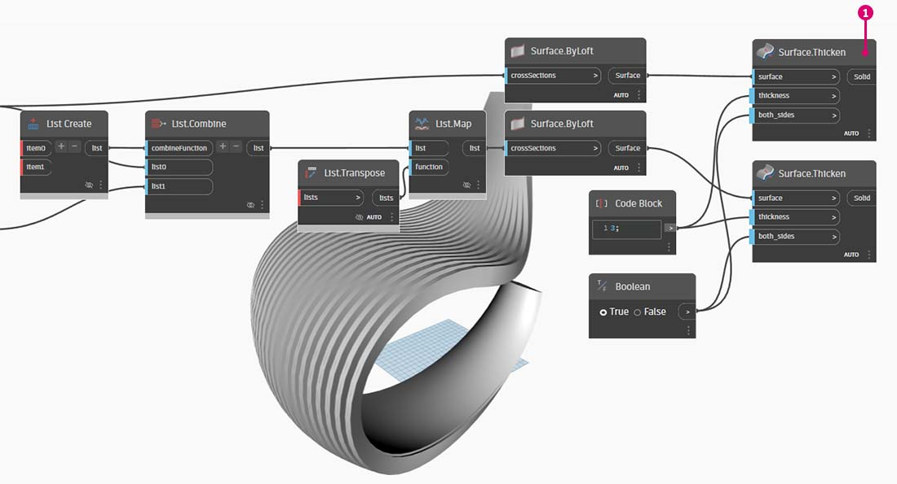
- And thickening these selected surfaces, our articulation is complete.
Not the most comfortable rocking chair ever, but it's got a lot of data going on.

Last step, let's reverse the direction of the striated members. As we used transpose in the previous exercise, we'll do something similar here.

- Since we have one more tier to the hierarchy, so we need to use List.Map with a List.Tranpose function to change the direction of our Nurbs curves.

- We may want to increase the number of treads, so we can change the Code Block to
0..1..#20;0..1..#30;
The first version of the rocking chair was sleek, so our second model offers an off-road, sport-utility version of recumbency.

Dictionaries in Dynamo
Dictionaries represent a collection of data that is related to another piece of data known as a key. Dictionaries expose the ability to search for, delete and insert data into a collection.
Essentially, we can think of a dictionary as a really smart way to look something up.
While dictionary functionality has been available in Dynamo for some time, Dynamo 2.0 introduces a new way of managing this data type.

Original image courtesy of: sixtysecondrevit.com
What is a Dictionary
Dynamo 2.0 introduces the concept of separating the dictionary data type from the list data type. This change can pose some significant changes to how you create and work with data in your workflows. Prior to 2.0, dictionaries and lists were combined as a data type. In short, lists were actually dictionaries with integer keys.
What is a dictionary?
A dictionary is a data type composed of a collection of key-value pairs where each key is unique in each collection. A dictionary has no order and basically you can look things up using a key instead of an index value like in a list. In Dynamo 2.0, keys can only be strings.
What is a list?
A list is a data type composed of a collection of ordered values. In Dynamo, lists use integers as index values.
Why was this change made and why should I care?
The separation of dictionaries from lists introduces dictionaries as a first-class citizen that you can use to quickly and easily store and lookup values without needing to remember an index value or maintain a strict list structure throughout your workflow. During user testing, we saw a significant reduction in graph size when dictionaries were utilized instead of several GetItemAtIndex nodes.
What are the changes?
-
Syntax changes have occurred that change how you will initialize and work with dictionaries and lists in code blocks.
- Dictionaries use the following syntax
{key:value} - Lists use the following syntax
[value,value,value]
- Dictionaries use the following syntax
-
New nodes have been introduced to the library to help you create, modify, and query dictionaries.
-
Lists created in v1.x code blocks will automatically be migrated on load of the script to the new list syntax that uses square brackets
[ ]instead of curly brackets{ }\
.jpg)
Why should I care? What would you use these for?
In computer science, Dictionaries - like lists- are collections of objects. While lists are in a specific order, dictionaries are unordered collections. They are not reliant on sequential numbers (indices), instead, they utilize keys.
In the image below we demonstrate a potential use case of a dictionary. Often times dictionaries are used to relate two pieces of data that might not have a direct correlation. In our case, we are connecting the Spanish version of a word to the English version for later lookup.

- Build a dictionary to relate the two pieces of data.
- Get the value with the given key.
Dictionary Nodes
Dynamo 2.0 exposes a variety of Dictionary nodes for our use. This includes create, action, and query nodes.

Create
1.Dictionary.ByKeysValues will create a dictionary with the supplied values and keys. (The number of entries will be whatever the shortest list input is)
Action
2. Dictionary.Components will produce the components of the input dictionary. (This is the reverse of the create node.)
3. Dictionary.RemoveKeys will produce a new dictionary object with the input keys removed.
4. Dictionary.SetValueAtKeys will produce a new dictionary based on the input keys and the values to replace the current value at the corresponding keys.
5. Dictionary.ValueAtKey will return the value at the input key.
Count
6. Dictionary.Count will tell you how many key value pairs are in the dictionary.
7. Dictionary.Keys will return what keys are currently stored in the dictionary.
8. Dictionary.Values will return what values are currently stored in the dictionary.
Overall relating data with dictionaries is a magnificent alternative to the old method of working with indices and lists.
Dictionaries in Code Blocks
Not only does Dynamo 2.0 introduce the nodes previously discussed for dictionaries, there is new functionality in code blocks for this as well!
You can use syntax like below or DesignScript-based representations of the nodes.
.jpg)
Since a dictionary is an object type in Dynamo we can commit the following actions upon it.

Maintaining these sort of interactions becomes especially useful when relating Revit data to strings. Next, we will look at some Revit use-cases.
Revit Use-Cases
Have you ever wanted to look up something in Revit by a piece of data that it has?
Chances are if you have you've done something like the following example.
In the image below we are collecting all of the rooms in the Revit model, getting the index of the room we want (by room number), and finally grabbing the room at the index.

- Collect all rooms in the model.
- Room number to find.
- Get the room number and find what index it is at.
- Obtain the room at the index.
Exercise : Room Dictionary
Part I: Creating Room Dictionary
Download the example file by clicking on the link below.
A full list of example files can be found in the Appendix.
{% file src="../datasets/5-5/4/roomDictionary.dyn" %}
Now let's recreate this idea using dictionaries. First we need to collect all of the rooms in our Revit model.
- We choose the Revit category we want to work with, (In this case, we are working with rooms).
- We tell Dynamo to collect all of those elements
Next, we need to decide what keys we are going to use to look up this data by. (Information on keys can be found on the section, What is a dictionary?).

- The data that we will use is the room number.
Now we will create the dictionary with the given keys and elements.

- The node, Dictionary.ByKeysValues will create a dictionary given the appropriate inputs.
Keysneed to be a string, whilevaluescan be a variety of object types.
Lastly, we can retrieve a room from the dictionary with its room number now.

Stringwill be the key that we are using to look up an object from the dictionary.- Dictionary.ValueAtKey will obtain the object from the dictionary now.
Part II: Values Look Up
Using this same dictionary logic, we can create dictionaries with grouped objects as well. If we wanted to look up all rooms at a given level we can modify the above graph as follows.

- Rather than using the room number as the key, we can now use a parameter value, (in this case we will use level).

- Now, we can group the rooms by the level that they reside on.

- With the elements grouped by the level, we can now use the shared keys (unique keys) as our key for our dictionary, and the lists of rooms as the elements.

- Lastly, using the levels in the Revit model, we can look up which rooms reside on that level in the dictionary.
Dictionary.ValueAtKeywill take the level name and return the room objects at that level.
The opportunities for Dictionary use are really endless. The ability to relate your BIM data in Revit to the element itself poses a variety of use cases.
Custom Nodes & Packages
Out of the box, Dynamo has a lot of functionality stored in its Library of Nodes. For those frequently used routines or that special graph you want to share with the community, Custom Nodes & Packages are a great way to extend Dynamo even further.
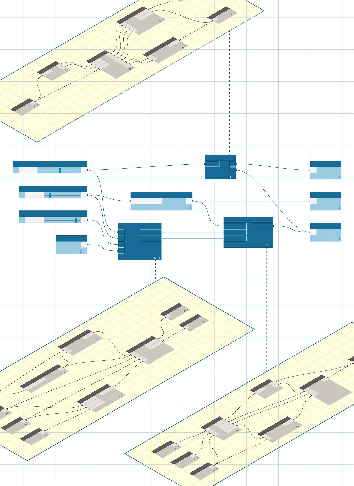
Custom Nodes
Dynamo offers many Core Nodes for a wide range of visual programming tasks. Sometimes a quicker, more elegant, or more easily shared solution is to build your own Nodes. These can be reused among different projects, they make your graphs clearer and cleaner, and they can be pushed to the package manager and shared with the global Dynamo community.
Custom Node Introduction
Custom Nodes are constructed by nesting other nodes and custom nodes inside of a "Dynamo Custom Node," which we can think of conceptually as a container. When this container node is executed in your graph, everything inside it will be executed to allow you to reuse and share a useful combination of nodes.
Adapting to Change
When you have multiple copies of a custom node in your graph, you can update all of them by editing the base custom node. This allows you to update your graph seamlessly by adapting to any changes that may occur in workflow or design.
Work Sharing
Arguably the best feature of custom nodes is their work sharing capabilities. If a "power user" creates a complex Dynamo graph and hands it off to a designer who is new to Dynamo, he/she can condense the graph to the bare essentials for design interaction. The custom node can be opened to edit the internal graph, but the "container" can be kept simple. With this process, custom nodes allow Dynamo users to design a graph that is clean and intuitive.

Many Ways to Build a Node
There are a wide variety of ways to build custom nodes in Dynamo. In the examples in this chapter, we'll create custom nodes directly from the Dynamo UI. If you are a programmer and you are interested in C# or Zero-Touch formatting, you can reference this page on the Dynamo Wiki for a more in-depth review.
Custom Node Environment & Create Your First Custom Node
Let's jump into the custom node environment and make a simple node to calculate a percentage. The custom node environment is different from the Dynamo graph environment, but the interaction is fundamentally the same. With that said, let's create our first custom node!
To create a Custom Node from scratch, Launch Dynamo and select Custom Node, or type Ctrl + Shift + N from the canvas.

Assign a name, description, and category in the Custom Node Properties dialog.
- Name: Percentage
- Description: Calculate the percentage of one value in relation to another.
- Category: Math.Functions
This will open a canvas with a yellow background, indicating that you are working inside a custom node. In this canvas you have access to all of the core Dynamo nodes, as well as the Input and Output nodes, which label the data flowing into and out of the custom node. They can be found in Input>Basic.

- Inputs: Input nodes create input ports on the custom node. The syntax for an input node is input_name : datatype = default_value(optional).
- Outputs: Similar to inputs, these will create and name output ports on the custom node. Consider adding a Custom Comment to your Input and Output ports to hint at the Input and Output types. This is discussed in more detail in the Creating Custom Nodes section.
You can save this custom node as a .dyf (as opposed to the standard .dyn) file and it will automatically be added to your session and future sessions. You will find the custom node in your library from the Add-ons section.
Moving Forward
Now that we've created our first custom node, the next sections will dive deeper into custom node functionality and how to publish generic workflows. In the following section, we'll look at developing a custom node that transfers geometry from one surface to another.
Creating a Custom Node
Dynamo offers several different methods for creating custom nodes. You can build custom nodes from scratch, from an existing graph, or explicitly in C#. In this section we will cover building a custom node in the Dynamo UI from an existing graph. This method is ideal for cleaning up the workspace, as well as packaging a sequence of nodes to reuse elsewhere.
Exercise: Custom Nodes for UV Mapping
Part I: Start with a Graph
In the image below, we map a point from one surface to another using UV coordinates. We'll use this concept to create a panelized surface which references curves in the XY plane. We'll create quad panels for our panelization here, but using the same logic, we can create a wide variety of panels with UV mapping. This is a great opportunity for custom node development because we will be able to repeat a similar process more easily in this graph or in other Dynamo workflows.
Download the example file by clicking on the link below.
A full list of example files can be found in the Appendix.
{% file src="../datasets/6-1/2/UV-CustomNode.zip" %}
Lets start by creating a graph that we want to nest into a custom node. In this example, we will create a graph that maps polygons from a base surface to a target surface, using UV coordinates. This UV mapping process is something we use frequently, making it a good candidate for a custom node. For more information on surfaces and UV space, refer to the Surface page. The complete graph is UVmapping_Custom-Node.dyn from the .zip file downloaded above.

- Code Block: Use this line to create a range of 10 numbers between -45 and 45
45..45..#10;- Point.ByCoordinates: Connect the output of the Code Block to the x and y inputs and set the lacing to cross-reference. You should now have a grid of points.
- Plane.ByOriginNormal: Connect the Point output to the origin input to create a plane at each of the points. The default normal vector of (0,0,1) will be used.
- Rectangle.ByWidthLength: Connect the planes from the previous step into the plane input, and use a Code Block with a value of 10 to specify the width and length.
You should now see a grid of rectangles. Lets map these rectangles to a target surface using UV coordinates.

- Polygon.Points: Connect the Rectangle.ByWidthLength output from the previous step to the polygon input to extract the corner points of each rectangle. These are the points that we will map to the target surface.
- Rectangle.ByWidthLength: Use a Code Block with a value of 100 to specify the width and length of a rectangle. This will be the boundary of our base surface.
- Surface.ByPatch: Connect the Rectangle.ByWidthLength from the previous step to the closedCurve input to create a base surface.
- Surface.UVParameterAtPoint: Connect the Point output of the Polygon.Points node and the Surface output of the Surface.ByPatch node to return the UV parameter at each point.
Now that we have a base surface and a set of UV coordinates, we can import a target surface and map the points between surfaces.

- File Path: Select the file path of the surface you want to import. The file type should be .SAT. Click the "Browse..." button and navigate to the UVmapping_srf.sat file from the .zip file downloaded above.
- Geometry.ImportFromSAT: Connect the file path to import the surface. You should see the imported surface in the geometry preview.
- UV: Connect the UV parameter output to a UV.U and a UV.V node.
- Surface.PointAtParameter: Connect the imported surface as well as the u and v coordinates. You should now see a grid of 3D points on the target surface.
The final step is to use the 3D points to construct rectangular surface patches.

- PolyCurve.ByPoints: Connect the points on the surface to construct a polycurve through the points.
- Boolean: Add a Boolean to the workspace and connect it to the connectLastToFirst input and toggle to True to close the polycurves. You should now see rectangles mapped to the surface.
- Surface.ByPatch: Connect the polycurves to the closedCurve input to construct surface patches.
Part II: From Graph to Custom Node
Now lets select the nodes that we want to nest into a Custom Node, thinking about what we want to be the inputs and outputs of our node. We want our Custom Node to be as flexible as possible, so it should be able to map any polygons, not just rectangles.
Select the following Nodes (beginning with Polygon.Points), right click on the workspace and select Create Custom Node.

In the Custom Node Properties dialog, assign a name, description, and category to the Custom Node.

- Name: MapPolygonsToSurface
- Description: Map polygon(s) from a base to target surface
- Add-ons Category: Geometry.Curve
The Custom Node has considerably cleaned up the workspace. Notice that the inputs and outputs have been named based on the original nodes. Lets edit the Custom Node to make the names more descriptive.

Double click the Custom Node to edit it. This will open a workspace with a yellow background representing the inside of the node.
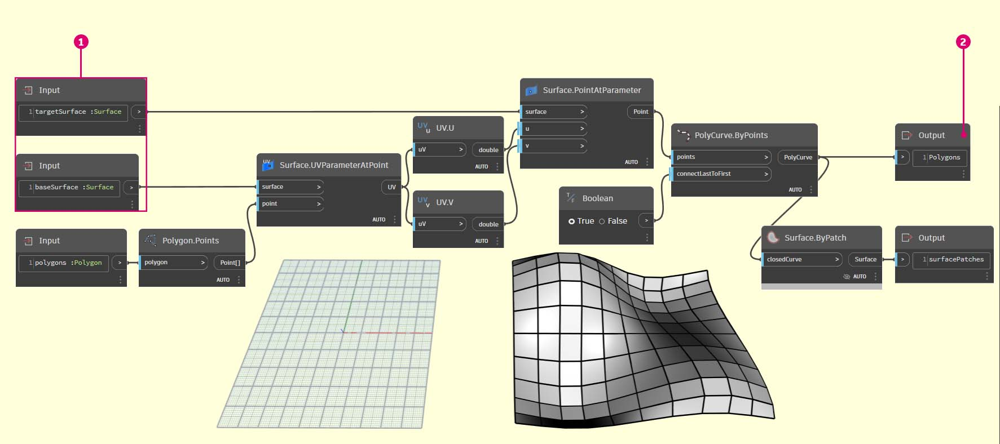
- Inputs: Change the input names to baseSurface and targetSurface.
- Outputs: Add an additional output for the mapped polygons.
Save the custom node and return to the home workspace. Notice the MapPolygonsToSurface node reflects the changes we just made.

We can also add to the robustness of the Custom Node by adding in Custom Comments. Comments can help to hint at the input and output types or explain the functionality of the node. Comments will appear when the user hovers over an input or output of a Custom Node.
Double click the Custom Node to edit it. This will re-open the yellow background workspace.

- Begin editing the Input Code Block. To start a Comment, type "//" followed by the comment text. Type anything that may help to clarify the Node - Here we will describe the targetSurface.
- Let's also set the default value for the inputSurface by setting the input type equal to a value. Here, we will set the default value to the original Surface.ByPatch set.
Comments can also be applied to the Outputs.

Edit the text in the Output Code Block. Type "//" followed by the comment text. Here we will clarify the Polygons and the surfacePatches Outputs by adding a more in-depth description.

- Hover over the Custom Node Inputs to see the Comments.
- With the default value set on our inputSurface, we can also run the definition without a surface input.
Publishing to Your Library
We've just created a custom node and applied it to a specific process in our Dynamo graph. And we like this node so much, we want to keep it in our Dynamo library to reference in other graphs. To do this, we'll publish the node locally. This is a similar process to publishing a package, which we'll walk through in more detail in the next chapter.
By publishing a node locally, the node will be accessible in your Dynamo library when you open a new session. Without publishing a node, a Dynamo graph which references a custom node must also have that custom node in its folder (or the custom node must be imported into Dynamo using File>Import Library).
{% hint style="warning" %} Publishing Custom Node is only enabled in Dynamo for Revit and Dynamo for Civil 3d. Dynamo Sandbox does not have publishing functionality. {% endhint %}
Exercise: Publishing a Custom Node Locally
Download the example file by clicking on the link below.
A full list of example files can be found in the Appendix.
{% file src="../datasets/6-1/3/PointsToSurface.dyf" %}
Let's move forward with the custom node that we created in the previous section. Once the PointsToSurface custom node is opened, we see the graph in the Dynamo Custom Node Editor. You can also open up a custom node by double clicking on it in the Dynamo Graph Editor.

To Publish a custom node locally, simply right click on the canvas and select "Publish This Custom Node..."

Fill out the relevant information similar to the image above and select "Publish Locally". Note that the Group field defines the main element accessible from the Dynamo menu.

Choose a folder to house all of the custom nodes that you plan on publishing locally. Dynamo will check this folder each time it loads, so make sure the folder is in a permanent place. Navigate to this folder and choose "Select Folder". Your Dynamo node is now published locally, and will remain in your Dynamo Toolbar each time you load the program!

To check on the custom node folder location, go to Dynamo > Preferences > Package Manager > Node and Package Paths

In this window we see a list of paths.

- Documents\DynamoCustomNodes... refers to the location of custom nodes we've published locally.
- AppData\Roaming\Dynamo... refers to the default location of Dynamo Packages installed online.
- You may want to move your local folder path down in the list order above (by selecting the folder path and clicking on the down arrow to the left of the path names). The top folder is the default path for package installs. So by keeping the default Dynamo package install path as the default folder, online packages will be separated from your locally published nodes.
We switched the order of the path names in order to have Dynamo's default path as the package install location.

Navigating to this local folder, we can find the original custom node in the ".dyf" folder, which is the extension for a Dynamo Custom Node file. We can edit the file in this folder and the node will update in the UI. We can also add more nodes to the main DynamoCustomNode folder and Dynamo will add them to your library at restart!

Dynamo will now load each time with "PointsToSurface" in the "DynamoPrimer" group of your Dynamo library.

Packages
Once you have created a few Custom Nodes the very next step is to begin organizing and publishing them by way of Packages - a convenient way to store and share your nodes with the Dynamo Community.

Package Introduction
In short, a Package is a collection of Custom Nodes. The Dynamo Package Manager is a portal for the community to download any package which has been published online. These toolsets are developed by third parties in order to extend Dynamo's core functionality, accessible to all, and ready to download at the click of the button.

An open-source project such as Dynamo thrives on this type of community involvement. With dedicated third-party developers, Dynamo is able to extend its reach to workflows across a range of industries. For this reason, the Dynamo team has made concerted efforts to streamline package development and publishing (which will be discussed in more detail in the following sections).
Installing a Package
The easiest way to install a package is by using the Packages toolbar in your Dynamo interface. Let's jump right into it and install one now. In this quick example, we'll install a popular package for creating quad panels on a grid.
In Dynamo, go to Packages>Search For a Package...

In the search bar, let's search for "quads from rectangular grid". After a few moments, you should see all of the packages which match this search query. We want to select the first package with the matching name.
Click on nstall to add this package to your library. Done!

Notice that we now have another group in our Dynamo library called "buildz". This name refers to the developer of the package, and the custom node is placed in this group. We can begin to use this right away.
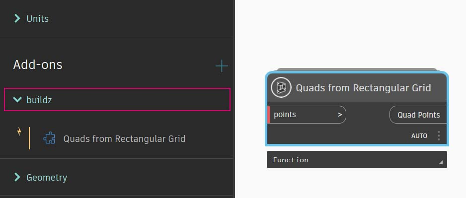
Use Code Block to quickly define a rectangular grid, output the result to a Polygon.ByPoints Node, subsequently a Surface.ByPatch Node to view the list of rectangular panels you have just created.

Installing Package Folder - DynamoUnfold
The example above focuses on a package with one custom node, but you use the same process for downloading packages with several custom nodes and supporting data files. Let's demonstrate that now with a more comprehensive package: Dynamo Unfold.
As in the example above, begin by selecting Packages>Search for a Package....
This time, we'll search for "DynamoUnfold", one word, minding the caps. When we see the packages, download by clicking on Install to add Dynamo Unfold to your Dynamo Library.
In the Dynamo Library, we have a DynamoUnfold Group with multiple categories and custom nodes.

Now, let's take a look at the package's file structure. First, select Dynamo > Preferences

From the Preferences pop-up, open Package Manager > next to DynamoUnfold, select the vertical dots menu  > Show Root Directory to open root folder for this package.
> Show Root Directory to open root folder for this package.

This will take us to the package's root directory. Notice that we have 3 folders and a file.

- The bin folder houses .dll files. This Dynamo package was developed using Zero-Touch, so the custom nodes are held in this folder.
- The dyf folder houses the custom nodes. This package was not developed using Dynamo custom nodes, so this folder is empty for this package.
- The extra folder houses all additional files, including our example files.
- The pkg file is a basic text file defining the package settings. We can ignore this for now.
Opening the "extra" folder, we see a bunch of example files that were downloaded with the install. Not all packages have example files, but this is where you can find them if they are part of a package.
Let's open up "SphereUnfold".

After opening the file and hitting "Run" on the solver, we have an unfolded sphere! Example files like these are helpful for learning how to work with a new Dynamo package.
Dynamo Package Manager
Another way to discover Dynamo packages is to explore the Dynamo Package Manager online. This is a good way to browse for packages, since the repository sorts packages in order of download count and popularity. Also, it's an easy way to gather information on recent updates for packages, as some Dynamo packages are subjected to versioning and dependencies of Dynamo builds.
By clicking on "Quads from Rectangular Grid" in the Dynamo Package Manager, you can see its descriptions, versions, the developer, and possible dependencies.
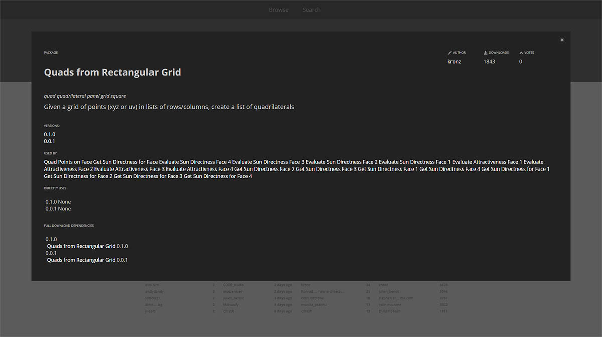
You can also download the package files from the Dynamo Package Manager, but doing so directly from Dynamo is a more seamless process.
Where are Packages Files Stored Locally?
If you do download files from the Dynamo package manager, or if you would like to see where all of your package files are kept, click on Dynamo > Package Manager > Node and Package Paths, you can find your current root folder directory from here.

By default, packages are installed in a location similar to this folder path: C:/Users/[username]/AppData/Roaming/Dynamo/[Dynamo Version].
Going Further with Packages
The Dynamo community is constantly growing and evolving. By exploring the Dynamo Package Manager from time to time, you'll find some exciting new developments. In the following sections, we'll take a more in-depth look at packages, from the end-user perspective to authorship of your own Dynamo Package.
Package Case Study - Mesh Toolkit
The Dynamo Mesh Toolkit provides tools to import meshes from external file formats, create a mesh from Dynamo geometry objects, and manually build meshes by their vertices and indices. The library also provides tools to modify meshes, repair meshes, or extract horizontal slices for use in fabrication.
The Dynamo Mesh Toolkit is part of Autodesk's ongoing mesh research, and as such will continue to grow over the coming years. Expect new methods to appear on the toolkit frequently, and feel free to reach out to the Dynamo team with comments, bugs, and suggestions for new features.
Meshes vs. Solids
The exercise below demonstrates some basic mesh operations using the Mesh Toolkit. In the exercise, we intersect a mesh with a series of planes, which can be computationally expensive using solids. Unlike a solid, a mesh has a set "resolution" and is not defined mathematically, but topologically, and we can define this resolution based on the task at hand. For more details on mesh to solid relationships, you can reference the Geometry For Computation Design chapter in this primer. For a more thorough examination of Mesh Toolkit, you can reference the Dynamo Wiki page. Let's jump into the package in the exercise below.
Install Mesh Toolkit
In Dynamo, go to Packages > Search for Packages... in the top menu bar. In the search field, type "MeshToolkit", all one word, minding the caps. Click Install to start the download. Simple as that!

Exercise: Intersect Mesh
Download the example file by clicking on the link below.
A full list of example files can be found in the Appendix.
{% file src="../datasets/6-2/2/MeshToolkit.zip" %}
In this example, we will look at the Intersect node in the mesh toolkit. We will import a mesh and intersect it with a series of input planes to create slices. This is the starting point for preparing the model for fabrication on a laser cutter, waterjet cutter, or CNC mill.
Begin by opening Mesh-Toolkit_Intersect-Mesh.dyn in Dynamo.

- File Path: Locate the mesh file to import (stanford_bunny_tri.obj). Supported file types are .mix and .obj
- Mesh.ImportFile: Connect the file path to import the mesh

- Point.ByCoordinates: Construct a point this will be the center of an arc.
- Arc.ByCenterPointRadiusAngle: Construct an arc around the point. This curve will be used to position a series of planes. __ The settings are as follow: __
radius: 40, startAngle: -90, endAngle:0
Create a series of planes oriented along the arc.

- Code Block: Create 25 numbers between 0 and 1.
- Curve.PointAtParameter: Connect the arc to the curve input and the code block output to the param input to extract a series of points along the curve.
- Curve.TangentAtParameter: Connect the same inputs as the previous node.
- Plane.ByOriginNormal: Connect the points to the origin input and the vectors to the normal input to create a series of planes at each point.
Next, we will use these planes to intersect the mesh.
- Mesh.Intersect: Intersect the planes with the imported mesh, creating a series of polycurve contours. Right click on Node and set the lacing to longest
- PolyCurve.Curves: Break the polycurves into their curve fragments.
- Curve.EndPoint: Extract the end points of each curve.
- NurbsCurve.ByPoints: Use the points to construct a nurbs curve. Use a Boolean node set to True to close the curves.
Before we continue, switch off the preview for some of the Nodes such as: Mesh.ImportFile, Curve.EndPoint, Plane.ByOriginNormal & Arc.ByCenterPointRadiusAngle to see the result better.
- Surface.ByPatch: Construct surface patches for each contour to create slices of the mesh.
Add a second set of slices for a waffle/egg-crate effect.

You may have noticed that the intersection operations calculate faster with a mesh vs. a comparable solid. Workflows such as the one demonstrated in this exercise lend themselves well to working with meshes.
Developing a Package
Dynamo offers a variety of ways to create a package for your personal use or for sharing with the Dynamo community. In the case study below, we'll walk through how a package is set up by deconstructing an existing one. This case study builds on lessons from the previous chapter, providing a set of custom nodes for mapping geometry, by UV coordinates, from one Dynamo surface to another.
MapToSurface Package
We're going to work with a sample package which demonstrates the UV mapping of points from one surface to another. We've already built the fundamentals of the tool in the Creating a Custom Node section of this primer. The files below demonstrate how we can take the concept of UV Mapping and develop a set of tools for a publishable library.
In this image, we map a point from one surface to another using UV coordinates. The package is based on this concept, but with more complex geometry.

Installing the Package
In the previous chapter, we explored ways for panelizing a surface in Dynamo based on curves defined in the XY plane. This case study extends these concepts for more dimensions of geometry. We're going to install this package as built in order to demonstrate how it was developed. In the next section, we'll demonstrate how this package was published.
In Dynamo, click _Packages>Search for a Package... and s_earch for the package "MapToSurface" (all one word). Click Install to start the download and add the package to your library.

After installing, the custom nodes should be available under the Add-ons > Dynamo Primer section.
(1).jpg)
With the package now installed, let's walk through how it's set up.
Custom Nodes
The package we're creating uses five custom nodes that we've built for reference. Let's walk through what each node does below. Some custom nodes build off of other custom nodes, and the graphs have a layout for other users to understand in a straightforward manner.
This is a simple package with five custom nodes. In the steps below, we'll briefly talk about each custom node's setup.
(1).jpg)
PointsToSurface
This is a basic custom node, and one from which all of the other mapping nodes are based. Simply put, the node maps a point from a source surface UV coordinate to the location of the target surface UV coordinate. And since points are the most primitive geometry, from which more complex geometry is built, we can use this logic to map 2D, and even 3D geometry from one surface to another.

PolygonsToSurface
The logic of extending mapped points from 1D geometry to 2D geometry is demonstrated simply with polygons here. Notice that we have nested the "PointsToSurface" node into this custom node. This way we can map the points of each polygon to the surface, and then regenerate the polygon from those mapped points. By maintaining the proper data structure (a list of lists of points), we're able to keep the polygons separate after they're reduced to a set of points.

NurbsCrvtoSurface
The same logic applies here as in the "PolygonsToSurface" node. But instead of mapping polygonal points, we're mapping control points of a nurbs curve.

OffsetPointsToSurface
This node gets a little more complex, but the concept is simple: like the "PointsToSurface" node, this node maps points from one surface to another. However, it also considers points which are not on the original source surface, gets their distance to the closest UV parameter, and maps this distance to the target surface normal at the corresponding UV coordinate. This will make more sense when looking at the example files.

SampleSrf
This is a simple node which creates a parametric surface to map from the source grid to an undulating surface in the example files.

Example Files
The example files can be found in the package's root folder. Click Dynamo > Preferences > Package Manager
Next to MapToSurface, click verticle dots menu > Show Root Directory

Next, open the "extra" folder, which houses all of the files in the package which are not custom nodes. This is where examples files (if they exist) are stored for Dynamo packages. The screenshots below discuss the concepts demonstrated in each example file.
01-PanelingWithPolygons
This example file demonstrates how "PointsToSurface" may be used to panelize a surface based on a grid of rectangles. This should look familiar, as we demonstrated a similar workflow in the previous chapter.

02-PanelingWithPolygons-II
Using a similar workflow, this exercise file shows a setup for mapping circles (or polygons representing circles) from one surface to another. This uses the "PolygonsToSurface" node.

03-NurbsCrvsAndSurface
This example file adds some complexity by working with the "NurbsCrvToSurface" node. The target surface is offset a given distance and the nurbs curve is mapped to the original target surface and the offset surface. From there, the two mapped curves are lofted to create a surface, which is then thickened. This resulting solid has an undulation that is representative of the target surface normals.

04-PleatedPolysurface-OffsetPoints
This example file demonstrates how to map a pleated polysurface from a source surface to a target surface. The source and target surface are a rectangular surface spanning the grid and a revolved surface, respectively.

The source polysurface mapped from the source surface to the target surface.

05-SVG-Import
Since the custom nodes are able to map different types of curves, this last file references an SVG file exported from Illustrator and maps the imported curves to a target surface.

By parsing through the syntax of a .svg file, curves are translated from .xml format to Dynamo polycurves.

The imported curves are mapped to a target surface. This allows us to explicitly (point-and-click) design a panelization in Illustrator, import into Dynamo, and apply to a target surface.

Publishing a Package
In the previous sections, we dove into the details of how our MapToSurface package is set up with custom nodes and example files. But how do we publish a package that has been developed locally? This case study demonstrates how to publish a package from a set of files in a local folder.

There are many ways to publish a package. Below is the process that we advise: publish locally, develop locally and then publish online. We'll start with a folder containing all of the files in the package.
Uninstalling a Package
Before we jump into publishing the MapToSurface package, if you installed the package from the previous lesson, uninstall it so that you're not working with identical packages.
Begin by going to Dynamo > Preferences > Package Manager > next to MapToSurface click on vertical dots menu > delete

Then restart Dynamo. When reopening, when you check the "Manage Packages" window, the MapToSurface should no longer be there. Now we're ready to start from the beginning!
Publishing a Package Locally
{% hint style="warning" %} Dynamo package publication is only enabled in Dynamo for Revit and Dynamo for Civil 3d. Dynamo Sandbox does not have publishing functionality. {% endhint %}
Download the example file by clicking on the link below.
A full list of example files can be found in the Appendix.
{% file src="../datasets/6-2/4/MapToSurface.zip" %}
This is the first submission for our package, and we've placed all of the example files and custom nodes into one folder. With this folder prepared, we're ready to upload to the Dynamo Package Manager.

- This folder contains five custom nodes (.dyf).
- This folder also contains five example files (.dyn) and one imported vector file (.svg). These files will serve as introductory exercises to show the user how to work with the custom nodes.
In Dynamo, begin by clicking Packages>Publish New Package...

In the "Publish a Dynamo Package" window, filled out the relevant forms on the left of the window.

- By clicking "Add File", we've also added the files from the folder structure on the right side of the screen (to add files which are not .dyf files, be sure to change your file type in the browser window to "All Files(.)". Notice that we've added every file, custom node (.dyf) or example file (.dyn), indiscriminately. Dynamo will categories these items when we publish the package.
- The "Group" field defines which group to find the custom nodes in the Dynamo UI.
- Publish by clicking "Publish Locally". If you're following along, be certain to click "Publish Locally" and not "Publish Online"; we don't want a bunch of duplicate packages on the Package Manager.
After publishing, the custom nodes should be available under the "DynamoPrimer" group or your Dynamo Library.

Now let's look at the root directory to see how Dynamo has formatted the package we just created. Do this by clicking Dynamo > Preferences > Package Manager > next to MapToSurface click on the vertical dots menu > select Show Root Directory

Notice that the root directory is in the local location of your package (remember, we published the package "locally"). Dynamo is currently referencing this folder to read custom nodes. It's therefore important to locally publish the directory to a permanent folder location (ie: not your desktop). Here is the Dynamo package folder breakdown.

- The bin folder houses .dll files created with C# or Zero-Touch libraries. We don't have any for this package so this folder is blank for this example.
- The dyf folder houses the custom nodes. Opening this will reveal all of the custom nodes (.dyf files) for this package.
- The extra folder houses all additional files. These files are likely to be Dynamo Files (.dyn) or any additional files required (.svg, .xls, .jpeg, .sat, etc.).
- The pkg file is a basic text file defining the package settings. This is automated in Dynamo, but can be edited if you want to get into the details.
Publishing a Package Online
{% hint style="warning" %} Note: please do not follow along with this step unless you are actually publishing a package of your own! {% endhint %}

- When you're ready to publish, in the Preferences > Package Manager window, select the button the right of MapToSurface and choose Publish...
- If you're updating a package that has already been published, choose "Publish Version" and Dynamo will update your package online based on the new files in that package's root directory. Simple as that!
Publish Version...
When you update the files in your published package's root folder, you can publish a new version of the package by selecting "Publish Version..." in the Manage Packages window. This is a seamless way to make necessary updates to your content and share with the community. Publish Version will only work if you're the maintainer of the package.
Zero-Touch Importing
What is Zero-Touch?
Zero-Touch Importing refers to a simple point-and-click method for importing C# libraries. Dynamo will read the public methods of a .dll file and convert them to Dynamo nodes. You can use Zero-Touch to develop your own custom nodes and packages, and to import external libraries into the Dynamo environment.
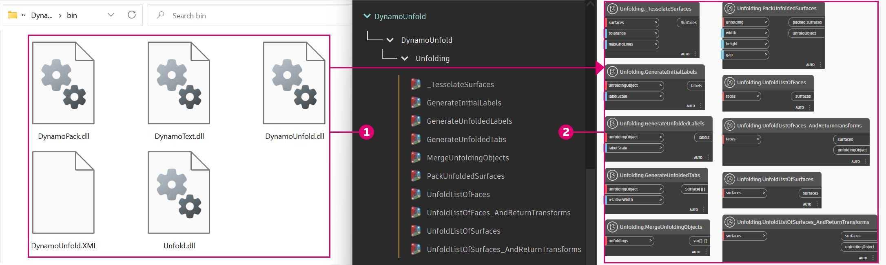
- .dll files
- Dynamo Nodes
With Zero-Touch, you can actually import a library which was not necessarily developed for Dynamo and create a suite of new nodes. The current Zero-Touch functionality demonstrates the cross-platform mentality of the Dynamo Project.
This section demonstrates how to use Zero-Touch to import a third party library. For information on developing your own Zero-Touch Library, reference the Dynamo wiki page.
Zero-Touch Packages
Zero-touch packages are a good complement to user-defined custom nodes. A few packages which use C# libraries are listed in the table below. For more detailed information on packages, visit the Packages section in the Appendix.
| Logo/Image | Name |
|---|---|
.jpg) | Mesh Toolkit |
.jpg) | Dynamo Unfold |
 | Rhynamo |
 | Optimo |
Case Study - Importing AForge
In this case study, we'll show how to import the AForge external .dll library. AForge is a robust library which offers a range of functionality from image processing to artificial intelligence. We'll reference the imaging class in AForge to do a few image processing exercises below.
Let's begin by downloading AForge. On the AForge download page, select [Download Installer] and install after download has completed.
In Dynamo, create a new file and select File > Import Library...

Next, locate the dll file.
- In the pop-up window, navigate to the release folder in your AForge install. This will likely be in a folder similar to this one: C:\Program Files (x86)\AForge.NET\Framework\Release.
- AForge.Imaging.dll: We only want to use this one file from the AForge library for this case study. Select this .dll and hit "Open".
Back in Dynamo, you should see an AForge group of nodes added to your Library. We now have access to the AForge imaging library from our visual program!

Exercise 1 - Edge Detection
Download the example file by clicking on the link below.
A full list of example files can be found in the Appendix.
{% file src="../datasets/6-2/5/ZeroTouchImages.zip" %}
Now that the library is imported, we'll start off simple with this first exercise (01-EdgeDetection.dyn). We'll do some basic image processing on a sample image to show how AForge image filters. We'll use the "Watch Image" node to show our results and apply filters in Dynamo similar to those in Photoshop
To import an image, add a File Path node to the canvas and select "soapbubbles.jpg" from the exercise folder (photo cred: flickr).

The File Path node simply provides a String of the path to the image we've selected. Next, we need to convert it into a usable image file in Dynamo.

- Use File From Path to convert the file path item into an image in the Dynamo environment.
- Connect the File Path node to the File.FromPath node.
- To convert this File into an Image, we'll use the Image.ReadFromFile node.
- Last, let's see the result! Drop a Watch Image node onto the canvas and connect to Image.ReadFromFile. We haven't used AForge yet, but we've successfully imported an image into Dynamo.
Under AForge.Imaging.AForge.Imaging.Filters (in the navigation menu), you'll notice that there is a wide array of filters available. We're going to use one of these filters now to desaturate an image based on threshold values.

- Drop three sliders onto the canvas, change their ranges to be from 0 to 1 and their step values to be 0.01.
- Add the Grayscale.Grayscale node to the canvas. This is an AForge filter which applies a grayscale filter to an image. Connect the three sliders from step 1 into cr, cg, and cb. Change the top and bottom sliders to have a value of 1 and the middle slider to have a value of 0.
- In order to apply the Grayscale filter, we need an action to perform on our image. For this, we use BaseFilter.Apply. Connect the image into the image input and Grayscale.Grayscale into the baseFilter input.
- Plugging into a Watch Image node, we get a desaturated image.
We can have control over how to desaturate this image based on threshold values for red, green, and blue. These are defined by the inputs to the Grayscale.Grayscale node. Notice that the image looks pretty dim - this is because the green value is set to 0 from our slider.

- Change the top and bottom sliders to have a value of 0 and the middle slider to have a value of 1. This way we get a more legible desaturated image.
Let's use the desaturated image, and apply another filter on top of it. The desaturated image has some contrast, so we we're going to test some edge detection.

- Add a SobelEdgeDetector.SobelEdgeDetector node to the canvas.
- Connect this to a BaseUsingCopyPartialFilter.Apply and connect the desaturated image to the image input of this node.
- The Sobel Edge Detector has highlighted the edges in a new image.
Zooming in, the edge detector has called out the outlines of the bubbles with pixels. The AForge library has tools to take results like this and create Dynamo geometry. We'll explore that in the next exercise.

Exercise 2 - Rectangle Creation
Now that we're introduced to some basic image processing, let's use an image to drive Dynamo geometry! On an elementary level, in this exercise we're aiming to do a "Live Trace" of an image using AForge and Dynamo. We're going to keep it simple and extract rectangles from a reference image, but there are tools available in AForge for more complex operations. We'll be working with 02-RectangleCreation.dyn from the downloaded exercise files.

- With the File Path node, navigate to grid.jpg in the exercise folder.
- Connect the remaining series of nodes above to reveal a course parametric grid.
In this next step, we want to reference the white squares in the image and convert them to actual Dynamo geometry. AForge has a lot of powerful Computer Vision tools, and here we're going to use a particularly important one for the library called BlobCounter.

- Add a BlobCounter to the canvas, then we need a way to process the image (similar to the BaseFilter.Apply tool in the previous exercise).
Unfortunately the "Process Image" node is not immediately visible in the Dynamo library. This is because the function may not be visible in the AForge source code. In order to fix this, we'll need to find a work-around.

- Add a Python node to the canvas and add the following code to the Python node. This code imports the AForge library and then processes the imported image.
import sys
import clr
clr.AddReference('AForge.Imaging')
from AForge.Imaging import *
bc= BlobCounter()
bc.ProcessImage(IN[0])
OUT=bc
Connecting the image output to the Python node input, we get an AForge.Imaging.BlobCounter result from the Python node.

The next steps will do some tricks that demonstrate familiarity with the AForge Imaging API. It's not necessary to learn all of this for Dynamo work. This is more of a demonstration of working with external libraries within the flexibility of the Dynamo environment.

- Connect the output of the Python script to BlobCounterBase.GetObjectRectangles. This reads objects in an image, based on a threshold value, and extracts quantified rectangles from the pixel space.

- Adding another Python node to the canvas, connect to the GetObjectRectangles, and input the code below. This will create an organized list of Dynamo objects.
OUT = []
for rec in IN[0]:
subOUT=[]
subOUT.append(rec.X)
subOUT.append(rec.Y)
subOUT.append(rec.Width)
subOUT.append(rec.Height)
OUT.append(subOUT)

- Transpose the output of the Python node from the previous step. This creates 4 lists, each representing X,Y, Width, and Height for each rectangle.
- Using Code Block, we organize the data into a structure that accommodates the Rectangle.ByCornerPoints node (code below).
recData;
x0=List.GetItemAtIndex(recData,0);
y0=List.GetItemAtIndex(recData,1);
width=List.GetItemAtIndex(recData,2);
height=List.GetItemAtIndex(recData,3);
x1=x0+width;y1=y0+height;
p0=Autodesk.Point.ByCoordinates(x0,y0);
p1=Autodesk.Point.ByCoordinates(x0,y1);
p2=Autodesk.Point.ByCoordinates(x1,y1);
p3=Autodesk.Point.ByCoordinates(x1,y0);
We have an array of rectangles representing the white squares in the image. Through programming, we've done something (roughly) similar to a live trace in Illustrator!
We still need some cleanup, however. Zooming in, we can see that we have a bunch of small, unwanted rectangles.
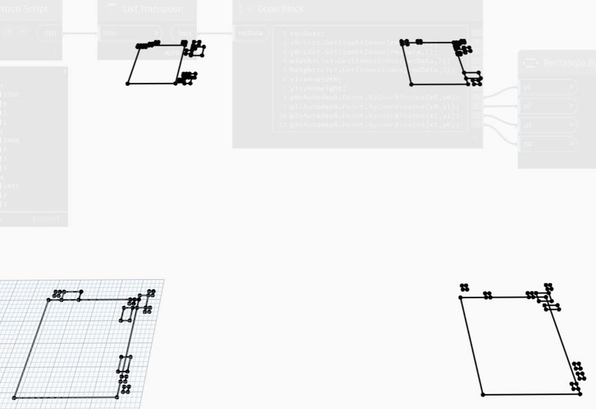
Next, we are going to write codes to get rid of unwanted rectangles.
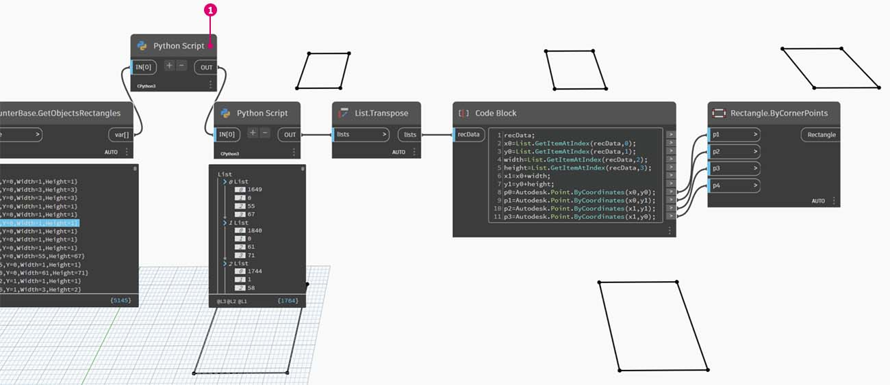
- Insert a Python node in between the GetObjectRectangles node and another Python node. The node's code is below, and removes all rectangles which are below a given size.
rectangles=IN[0]
OUT=[]
for rec in rectangles:
if rec.Width>8 and rec.Height>8:
OUT.append(rec)
With the superfluous rectangles gone, just for kicks, let's create a surface from these rectangles and extrude them by a distance based on their areas.

Last, change the both_sides input to false and we get an extrusion in one direction. Dip this baby in resin and you've got yourself one super nerdy table.

These are basic examples, but the concepts outlined here are transferable to exciting real-world applications. Computer vision can be used for a whole host of processes. To name a few: barcode readers, perspective matching, projection mapping, and augmented reality. For more advanced topics with AForge related to this exercise, have a read through this article.
Dynamo for Revit
While Dynamo is a flexible environment, designed to port into a wide range of programs, it was originally created for use with Revit. A visual program creates robust options for a Building Information Model (BIM). Dynamo offers a whole suite of nodes specifically designed for Revit, as well as third-party libraries from a thriving AEC community. This chapter focuses on the basics of using Dynamo in Revit.
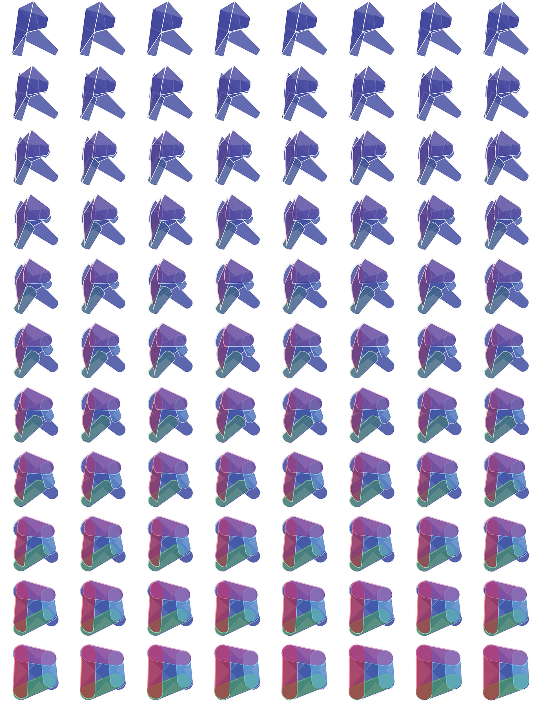
The Revit Connection

Dynamo for Revit extends building information modeling with the data and logic environment of a graphical algorithm editor. Its flexibility, coupled with a robust Revit database, offers a new perspective for BIM.
This chapter focuses on the Dynamo workflows for BIM. Sections are primarily exercise-based, since jumping right into a project is the best way to get familiar with a graphical algorithm editor for BIM. But first, let's talk about the beginnings of the program.
Revit Version Compatibility
As both Revit and Dynamo continue to evolve, you may notice that the Revit version you are working with is not compatible with the Dynamo for Revit version you have installed on your machine. Below outlines which versions of Dynamo for Revit are compatible with Revit.
| Revit Version | First Stable Dynamo Version | Last Supported Dynamo for Revit Version |
|---|---|---|
| 2013 | 0.6.1 | 0.6.3 |
| 2014 | 0.6.1 | 0.8.2 |
| 2015 | 0.7.1 | 1.2.1 |
| 2016 | 0.7.2 | 1.3.2 |
| 2017 | 0.9.0 | 1.3.4 / 2.0.3 |
| 2018 | 1.3.0 | 1.3.4 / 2.0.3 |
| 2019 | 1.3.3 | 1.3.4 / 2.0.4 |
| 2020+ | 2.1.0 - Revit 2020+ now includes Dynamo and receives updates as Revit does.) | N/A |
History of Dynamo

With a dedicated team of developers and a passionate community, the project has come a long way from its humble beginnings.
Dynamo was originally created to streamline AEC workflows in Revit. While Revit creates a robust database for every project, it can be difficult for an average user to access this information outside of the constraints of the interface. Revit hosts a comprehensive API (Application Program Interface), allowing third-party developers to create custom tools. And programmers have been using this API for years, but text-based scripting isn't accessible to everyone. Dynamo seeks to democratize Revit data through an approachable graphical algorithm editor.
Using the core Dynamo nodes in tandem with custom Revit ones, a user can substantially expand parametric workflows for interoperability, documentation, analysis, and generation. With Dynamo, tedious workflows can be automated while design explorations can thrive.
Running Dynamo in Revit
In a Revit project or family editor, navigate to Addins and click Dynamo.*
{% hint style="warning" %} *Dynamo will run only in the file in which it was opened. {% endhint %}

When opening Dynamo in Revit, there is a new category called "Revit". This is a comprehensive addition to the UI which offers nodes specifically catering to Revit workflows.*
{% hint style="warning" %} *By using the Revit-specific family of nodes, the Dynamo graph will only work when opening in Dynamo for Revit. If a Dynamo for Revit graph is opened in Dynamo Sandbox for example, the Revit nodes will be missing. {% endhint %}

Freezing Nodes
Since Revit is a platform which provides robust project management, parametric operations in Dynamo can be complex and slow to calculate. If Dynamo is taking a long time to calculate nodes, you may want to use the "freeze" node functionality in order to pause the execution of Revit operations while you develop your graph. For more information on freezing nodes, check out the "Freezing" section in the solids chapter.
Community & Dynamo Blog
Since Dynamo was originally created for AEC, its large and growing community is a great resource for learning from and connecting with experts in the industry. Dynamos community is made of architects, engineers, programmers, and designers who all have a passion for sharing and making.
Dynamo is an open-source project that is constantly evolving, and a lot of development is Revit-related. If you're new to the game, get on the discussion forum and start posting questions! If you're a programmer and want to get involved in Dynamo's development, check out the github page. Also, a great resource for third-party libraries is the Dynamo package manager. Many of these packages are made with AEC in mind, and we'll take a look at third-party packages for panelization in this chapter.
Dynamo also maintains an active blog. Read up on recent posts to learn about the latest developments!

Selecting
Select Revit Elements
Revit is a data-rich environment. This gives us a range of selection abilities which expands far beyond "point-and-click". We can query the Revit database and dynamically link Revit elements to Dynamo geometry while performing parametric operations.
The Revit library in the UI offers a "Selection" category which enables multiple ways to select geometry.
Revit Hierarchy
To select Revit elements properly, it's important to have a full-understanding of the Revit element hierarchy. Want to select all the walls in a project? Select by category. Want to select every Eames chair in your mid-century modern lobby? Select by family.
Let's do a quick review of the Revit hierarchy.
Remember the taxonomy from Biology? Kingdom, Phylum, Class, Order, Family, Genus, Species? Revit elements are categorized in a similar manner. On a basic level, the Revit hierarchy can be broken down into Categories, Families, Types*, and Instances. An instance is an individual model element (with a unique ID) while a category defines a generic group (like "walls" or "floors"). With the Revit database organized in this manner, we can select one element and choose all similar elements based on a specified level in the hierarchy.
{% hint style="warning" %} *Types in Revit are defined differently from types in programming. In Revit, a type refers to a branch of the hierarchy, rather than a "data type". {% endhint %}
Database Navigation with Dynamo nodes
The three images below breakdown the main categories for Revit element selection in Dynamo. These are great tools to use in combination, and we'll explore some of these in the following exercises.
Point-and-click is the easiest way to directly select a Revit element. You can select a full model element, or parts of its topology (like a face or an edge). This remains dynamically linked to that Revit object, so when the Revit file updates its location or parameters, the referenced Dynamo element will update in the graph.
Dropdown menus create a list of all accessible elements in a Revit project. You can use this to reference Revit elements which are not necessarily visible in a view. This is a great tool for querying existing elements or creating new ones in a Revit project or family editor.

You can also select Revit element by specific tiers in the Revit hierarchy. This is a powerful option for customizing large arrays of data in preparation for documentation or generative instantiation and customization.

With the three images above in mind, let's dive into an exercise which selects elements from a basic Revit project in preparation for the parametric applications we'll create in the remaining sections of this chapter.
Exercise
Download the example file by clicking on the link below.
A full list of example files can be found in the Appendix.
{% file src="datasets/2/Revit-Selecting.zip" %}
In this example Revit file, we have three element types of a simple building. We're going to use this as an example for selecting Revit elements within the context of the Revit hierarchy.

- Building Mass
- Beams (Structural Framing)
- Trusses (Adaptive Components)
What conclusions can we draw from the elements currently in the Revit project view? And how far down the hierarchy do we need to go to select the appropriate elements? This will of course become a more complex task when working on a large project. There are a lot of options available: we can select elements by categories, levels, families, instances, etc.
Selecting Mass and Surfaces

- Since we're working with a basic setup, let's select the building mass by choosing "Mass" in the Categories dropdown node. This can be found in the Revit>Selection tab.
- The output of the Mass category is just the category itself. We need to select the elements. To do this, we use the "All Elements of Category" node.
At this point, notice that we don't see any geometry in Dynamo. We've selected a Revit element, but have not converted the element into Dynamo geometry. This is an important separation. If you were to select a large number of elements, you don't want to preview all of them in Dynamo because this would slow everything down. Dynamo is a tool to manage a Revit project without necessarily performing geometry operations, and we'll look at that in the next section of this chapter.
In this case, we're working with simple geometry, so we want to bring the geometry into the Dynamo preview. The "BldgMass" in the watch node above has a green number next to it. This represents the element's ID and tells us that we are dealing with a Revit element, not Dynamo geometry. The next step is to convert this Revit element into geometry in Dynamo.
- Using the Element.Faces node, we get a list of surfaces representing each face of the Revit Mass. We can now see the geometry in the Dynamo viewport and start to reference the face for parametric operations.
Here's an alternative method. In this case, we're stepping away from selecting via the Revit Hierarchy ("All Elements of Category") and electing to explicitly select geometry in Revit.

- Using the "Select Model Element" node, click the *"select" *(or "change") button. In the Revit viewport, select the desired element. In this case, we're selecting the building mass.
- Rather than Element.Faces, we can select the full mass as one solid geometry using Element.Geometry. This selects all of the geometry contained within that mass.
- Using Geometry.Explode, we can get the list of surfaces again. These two nodes work the same as Element.Faces but offer alternative options for delving into the geometry of a Revit element.
Using some basic list operations, we can query a face of interest.

- First, output the selected elements from earlier to Element.Faces node.
- Next, use the List.Count node reveals that we're working with 23 surfaces in the mass.
- Referencing this number, we change the Maximum value of an *integer slider *to "22".
- Using List.GetItemAtIndex, we input the lists and the *integer slider *for the index. Sliding through with the selected, we stop when we get to index 9 and have isolated the main facade hosts the trusses.
The previous step was a little cumbersome. We can do this much faster with the "Select Face" node. This allows us to isolate a face that is not an element itself in the Revit project. The same interaction applies as "Select Model Element", except we select the surface rather than the full element.
Suppose we want to isolate the main facade walls of the building. We can use the "Select Faces" node to do this. Click the "Select" button and then select the four main facades in Revit.
After selecting the four walls, make sure you click the "Finish" button in Revit.

The faces are now imported into Dynamo as surfaces.

Selecting Beams
Now, let's take a look at the beams over the atrium.
- Use the "Select Model Element" node, select one of the beams.
- Plug the beam element into the Element.Geometry node and we now have the beam in the Dynamo viewport.
- We can zoom in on the geometry with a Watch3D node (if you don't see the beam in Watch 3D, right click and hit "zoom to fit").
A question that may come up often in Revit/Dynamo workflows: how do I select one element and get all similar elements? Since the selected Revit element contains all of its hierarchical information, we can query its family type and select all elements of that type.
- Plug the beam element into a Element.ElementType node.
- The Watch node reveals that the output is now a family symbol rather than a Revit element.
- Element.ElementType is a simple query, so we can do this in the code block just as easily with
x.ElementType;and get the same results.
- To select the remaining beams, we use the "All Elements of Family Type" node.
- The watch node shows that we've selected five Revit elements.

- We can convert all of these five elements to Dynamo geometry too.
What if we had 500 beams? Converting all of these elements into Dynamo geometry would be really slow. If Dynamo is taking a long time to calculate nodes, you may want to use the "freeze" node functionality in order to pause the execution of Revit operations while you develop your graph. For more information on freezing nodes, check out the "Freezing" section in the solids chapter.
In any case, if we were to import 500 beams, do we need all of the surfaces to perform the intended parametric operation? Or can we extract basic information from the beams and perform generative tasks with fundamental geometry? This is a question that we'll keep in mind as we walk through this chapter. For example, let's take a look at the truss system next.
Selecting Trusses
Using the same graph of nodes, select the truss element rather than the beam element. Before doing this, delete the Element.Geometry from the previous step.
Next we are ready to extract some basic information from trusses family type.

- In the Watch node, we can see that we have a list of adaptive components selected from Revit. We want to extract the basic information, so we're start with the adaptive points.
- Plug the "All Elements of Family Type" node into the "AdaptiveComponent.Location" node. This gives us a list of lists, each with three points which represent the adaptive point locations.
- Connecting a "Polygon.ByPoints" node returns a polycurve. We can see this in the Dynamo viewport. By this method, we've visualized the geometry of one element and abstracted the geometry of the remaining array of elements (which could be larger in number than this example).
{% hint style="info" %} Tip: if you click on the green number of a Revit element in Dynamo, the Revit viewport will zoom to that element. {% endhint %}
Editing
A powerful feature of Dynamo is that you can edit parameters on a parametric level. For example, a generative algorithm or the results of a simulation can be used to drive the parameters of an array of elements. This way, a set of instances from the same family can have custom properties in your Revit project.
Type and Instance Parameters
.jpg)
- Instance parameters define the aperture of the panels on the roof surface, ranging from an Aperture Ratio of 0.1 to 0.4.
- Type-based parameters are applied to every element on the surface because they are the same family type. The material of each panel, for example, can be driven by a type-based parameter.

- If you've set up a Revit family before, remember that you have to assign a parameter type (string, number, dimension, etc.) Be sure to use the correct data type when assigning parameters from Dynamo.
- You can also use Dynamo in combination with parametric constraints defined in a Revit family's properties.
As a quick review of parameters in Revit, we recall that there are type parameters and instance parameters. Both can be edited from Dynamo, but we'll work with instance parameters in the exercise below.
{% hint style="info" %} As you discover the wide-reaching application of editing parameters, you may want to edit a large quantity of elements in Revit with Dynamo. This can be a computationally expensive operation, meaning that it can be slow. If you're editing a large number of elements, you may want to use the "freeze" node functionality in order to pause the execution of Revit operations while you develop your graph. For more information on freezing nodes, check out the "Freezing" section in the solids chapter. {% endhint %}
Units
As of version 0.8, Dynamo is fundamentally unitless. This allows Dynamo to remain an abstract visual programming environment. Dynamo nodes that interact with Revit dimensions will reference the Revit project's units. For example, if you are setting a length parameter in Revit from Dynamo, the number in Dynamo for the value will correspond to the default units in the Revit project. The exercise below works in meters.
For a quick conversion of units, use the "Convert Between Units" node. This is a handy tool for converting Length, Area, and Volume units on the fly.

Exercise
Download the example file by clicking on the link below.
A full list of example files can be found in the Appendix.
{% file src="datasets/3/Revit-Editing.zip" %}
{% hint style="warning" %} The exercise below works in meters. {% endhint %}
This exercise focuses on editing Revit elements without performing geometric operation in Dynamo. We're not importing Dynamo geometry here, just editing parameters in a Revit project. This exercise is basic, and to the more advanced Revit users, notice that these are instance parameters of a mass, but the same logic can be applied to an array of elements to customize on a large scale. This is all done with the "Element.SetParameterByName" node.
Editing Building Mass Parameters
Begin with the example Revit file for this section. We've removed the structural elements and adaptive trusses from the previous section. In this exercise, we will focus on a parametric rig in Revit and manipulating in Dynamo.
Selecting the building in Mass in Revit, we see an array of instance parameters in the properties panel.

In Dynamo, we can retrieve the parameters by selecting the targeting element.

- Select the building mass with the "Select Model Element" node.
- We can query all of the parameters of this mass with the "Element.Parameters" node. This includes type and instance parameters.

- Reference the Element. Parameters node to find target parameters. Or, we can view the properties panel from the previous step to choose which parameter names we want to edit. In this case, we are looking for the parameters which affect the large geometric moves on the building mass.
- We will make changes to the Revit element using the Element.SetParameterByName node
- Use C_ode Block to_ define a list of parameters, with quotes around each item to denote a string. We can also use the List.Create node with a series of "string" nodes connected to multiple inputs but Code block is faster and easier. Make sure that the string matches the exact name in Revit, case-specific:
{"BldgWidth","BldgLength","BldgHeight", "AtriumOffset", "InsideOffset","LiftUp"};
- We also want to designate values for each parameter. Add six "integer sliders" to the canvas and rename to the corresponding parameter in the list. Also, set the values of each slider to the image above. In order from top-to-bottom: 62,92,25,22,8,12
- Define another code block with a list of the same length as the parameter names. In this case, we name variables (without quotes) which create inputs for the code block. Plug the sliders into each respective input:
{bw,bl,bh,ao,io,lu};- Connect the Code Block to the "Element.SetParameterByName"* value input. With run automatically checked, we will automatically see results.
{% hint style="warning" %} *This demonstration works with instance parameters, but not type parameters. {% endhint %}
Just as in Revit, many of these parameters are dependent on each other. There are of course combinations where the geometry may break. We can remedy this issue with defined formulas in the parameter properties, or we can setup a similar logic with math operations in Dynamo (this is an additional challenge if you'd like to expand on the exercise).

- This combination gives a funky new design to the building mass: 100, 92, 100, 25, 13, 51
Editing Facade Parameters
Next, let's look at how we can edit the facade using a similar process.

- Copy the graph and focus on the facade glazing which will house the truss system. We isolate four parameters in this case:
{"DblSkin_SouthOffset","DblSkin_MidOffset","DblSkin_NorthOffset","Facade Bend Location"};- Additionally, we create number sliders and rename to the appropriate parameters. The first three sliders from top-to-bottom should be remapped to a domain of [0,10], while the final slider, "Facade Bend Location", should be remapped to a domain of [0,1]. These values, from top-to-bottom should start with these values (although they're arbitrary): 2.68, 2.64, 2.29, 0.5
- Define a new Code block and connect the sliders:
{so,mo,no,fbl};

- By changing the sliders in this part of the graph, we can make the facade glazing much more substantial: 9.98, 10.0, 9.71 ,0.31
Creating
You can create an array of Revit elements in Dynamo with full parametric control. The Revit nodes in Dynamo offer the ability to import elements from generic geometries to specific category types (like walls and floors). In this section, we'll focus on importing parametrically flexible elements with adaptive components.

Adaptive Components
An adaptive component is a flexible family category which lends itself well to generative applications. Upon instantiation, you can create a complex geometric element which is driven by the fundamental location of adaptive points.
Below is an example of a three-point adaptive component in the family editor. This generates a truss which is defined by the position of each adaptive point. In the exercise below, we'll use this component to generate a series of trusses across a facade.

Principles of Interoperability
The adaptive component is a good example for best practices of interoperability. We can create an array of adaptive components by defining the fundamental adaptive points. And, when transferring this data to other programs, we have the ability to reduce the geometry to simple data. Importing and exporting with a program like Excel follows a similar logic.
Suppose a facade consultant wants to know the location of the truss elements without needing to parse through fully articulated geometry. In preparation for fabrication, the consultant can reference the location of adaptive points to regenerate geometry in a program like Inventor.
The workflow we'll setup in the exercise below allows us to access all of this data while creating the definition for Revit element creation. By this process, we can merge conceptualization, documentation, and fabrication into a seamless workflow. This creates a more intelligent and efficient process for interoperability.
Multiple Elements and Lists
The first exercise below will walk through how Dynamo references data for Revit element creation. To generate multiple adaptive components, we define a list of lists, where each list has three points representing each point of the adaptive component. We'll keep this in mind as we manage the data structures in Dynamo.
DirectShape Elements
Another method for importing parametric Dynamo geometry into Revit is with DirectShape. In summary, the DirectShape element and related classes support the ability to store externally created geometric shapes in a Revit document. The geometry can include closed solids or meshes. DirectShape is primarily intended for importing shapes from other data formats such as IFC or STEP where not enough information is available to create a "real" Revit element. Like the IFC and STEP workflow, the DirectShape functionality works well with importing Dynamo created geometries into Revit projects as real elements.
Let's walk through second exercise for importing Dynamo geometry as a DirectShape into our Revit project. Using this method, we can assign an imported geometry's category, material, and name - all while maintaining a parametric link to our Dynamo graph.
Exercise: Generate Elements and Lists
Download the example file by clicking on the link below.
A full list of example files can be found in the Appendix.
{% file src="datasets/4/Revit-Creating.zip" %}
Beginning with the example file from this section (or continuing with the Revit file from the previous session), we see the same Revit mass.

- This is the file as opened.
- This is the truss system we created with Dynamo, linked intelligently to the Revit mass.
We've used the "Select Model Element" and "Select Face" nodes, now we're taking one step further down in the geometry hierarchy and using "Select Edge". With the Dynamo solver set to run "Automatic", the graph will continually update to changes in the Revit file. The edge we are selecting is tied dynamically to the Revit element topology. As long as the topology* does not change, the connection remains linked between Revit and Dynamo.

- Select the top most curve of the glazing facade. This spans the full length of the building. If you're having trouble selecting the edge, remember to choose the selection in Revit by hovering over the edge and hitting "Tab" until the desired edge is highlighted.
- Using two "Select Edge" nodes, select each edge representing the cant at the middle of the facade.
- Do the same for the bottom edges of the facade in Revit.
- The Watch nodes reveal that we now have lines in Dynamo. This is automatically converted to Dynamo geometry since the edges themselves are not Revit elements. These curves are the references we'll use to instantiate adaptive trusses across the facade.
{% hint style="info" %} *To keep a consistent topology, we're referring to a model that does not have additional faces or edges added. While parameters can change its shape, the way in which it is built remains consistent. {% endhint %}
We first need to join the curves and merge them into one list. This way we can "group" the curves to perform geometry operations.

- Create a list for the two curves at the middle of the facade.
- Join the two curves into a Polycurve by plugging the List.Create component into a Polycurve.ByJoinedCurves node.
- Create a list for the two curves at the bottom of the facade.
- Join the two curves into a Polycurve by plugging the List.Create component into a Polycurve.ByJoinedCurves node.
- Finally, join the three main curves (one line and two polycurves) into one list.
We want to take advantage of the top curve, which is a line, and represents the full span of the facade. We'll create planes along this line to intersect with the set of curves we've grouped together in a list.

- With a code block, define a range using the syntax:
0..1..#numberOfTrusses;- Plug an *integer slider *into the input for the code block. As you could have guessed, this will represent the number of trusses. Notice that the slider controls the number of items in the range defined from *0 *to 1.
- Plug the code block into the param input of a "Curve.PlaneAtParameter" node, and plug the top edge into the curve input. This will give us ten planes, evenly distributed across the span of the facade.
A plane is an abstract piece of geometry, representing a two dimensional space which is infinite. Planes are great for contouring and intersecting, as we are setting up in this step.

- Using the Geometry.Intersect node (set lacing option to cross product), plug the Curve.PlaneAtParameter into the entity input of the Geometry.Intersect node. Plug the main List.Create node into the geometry input. We now see points in the Dynamo viewport representing the intersection of each curve with the defined planes.
Notice the output is a list of lists of lists. Too many lists for our purposes. We want to do a partial flatten here. We need to take one step down on the list and flatten the result. To do this, we use the List.Map operation, as discussed in the list chapter of the primer.

- Plug the Geometry.Intersect node into the list input of List.Map.
- Plug a Flatten node into the f(x) input of List.Map. The results gives 3 list, each with a count equal to the number of trusses.
- We need to change this data. If we want to instantiate the truss, we have to use the same number of adaptive points as defined in the family. This is a three point adaptive component, so instead of three lists with 10 items each (numberOfTrusses), we want 10 lists of three items each. This way we can create 10 adaptive components.
- Plug the List.Map into a List.Transpose node. Now we have the desired data output.
- To confirm that the data is correct, add a Polygon.ByPoints node to the canvas and double check with the Dynamo preview.
In the same way we created the polygons, we array the adaptive components.

- Add an AdaptiveComponent.ByPoints node to the canvas, plug the List.Transpose node into the points input.
- Using a Family Types node, select the "AdaptiveTruss" family, and plug this into the FamilyType input of the AdaptiveComponent.ByPoints node.
In Revit, we now have the ten trusses evenly spaced across the facade!
"Flex" the graph, we turn up the numberOfTrusses to 30 by changing the slider. Lots of trusses, not very realistic, but the parametric link is working. Once verified, set the numberOfTrusses to 15.
And for the final test, by selecting the mass in Revit and editing instance parameters, we can change the form of the building and watch the truss follow suit. Remember, this Dynamo graph has to be open in order to see this update, and the link will be broken as soon as it's closed.

Exercise: DirectShape Elements
Download the example file by clicking on the link below.
A full list of example files can be found in the Appendix.
{% file src="datasets/4/Revit-Creating-DirectShape.zip" %}
Begin by opening the sample file for this lesson - ARCH-DirectShape-BaseFile.rvt.

- In the 3D view, we see our building mass from the previous lesson.
- Along the edge of the atrium is one reference curve, we'll use this as a curve to reference in Dynamo.
- Along the opposing edge of the atrium is another reference curve which we'll reference in Dynamo as well.

- To reference our geometry in Dynamo, we'll use Select Model Element for each member in Revit. Select the mass in Revit and import the geometry into Dynamo by Using Element.Faces - the mass should now be visible in your Dynamo preview.
- Import one reference curve into Dynamo by using Select Model Element and CurveElement.Curve.
- Import the other reference curve into Dynamo by using Select Model Element and CurveElement.Curve.

- Zooming out and panning to the right in the sample graph, we see a large group of nodes - these are geometric operations which generate the trellis roof structure visible in the Dynamo preview. These nodes are generating using the Node to Code functionality as discussed in the code block section of the primer.
- The structure is driven by three major parameters - Diagonal Shift, Camber, and Radius.
Zooming a close-up look of the parameters for this graph. We can flex these to get different geometry outputs.

- Dropping the DirectShape.ByGeometry node onto the canvas, we see that it has four inputs: geometry, category, material, and name.
- Geometry will be the solid created from the geometry creation portion of the graph
- The category input is chosen using the dropdown Categories node. In this case we'll use "Structural Framing".
- The material input is selected through the array of nodes above - although it can be more simply defined as "Default" in this case.
After running Dynamo, back in Revit, we have the imported geometry on the roof in our project. This is a structural framing element, rather than a generic model. The parametric link to Dynamo remains intact.

Customizing
While we previously looked at editing a basic building mass, we want to dive deeper into the Dynamo/Revit link by editing a large number of elements in one go. Customizing on a large scale becomes more complex as data structures require more advanced list operations. However, the underlying principles behind their execution is fundamentally the same. Let's study some opportunities for analysis from a set of adaptive components.
Point Location
Suppose we've created a range of adaptive components and want to edit parameters based on their point locations. The points, for example, could drive a thickness parameter which is related to the area of the element. Or, they could drive an opacity parameter related to solar exposure throughout the year. Dynamo allows the connection of analysis to parameters in a few easy steps, and we'll explore a basic version in the exercise below.

Query the adaptive points of a selected adaptive component by using the AdaptiveComponent.Locations node. This allows us to work with an abstracted version of a Revit element for analysis.
By extracting the point location of adaptive components, we can run a range of analysis for that element. A four-point adaptive component will allow you to study the deviation from plane for a given panel for example.
Solar Orientation Analysis
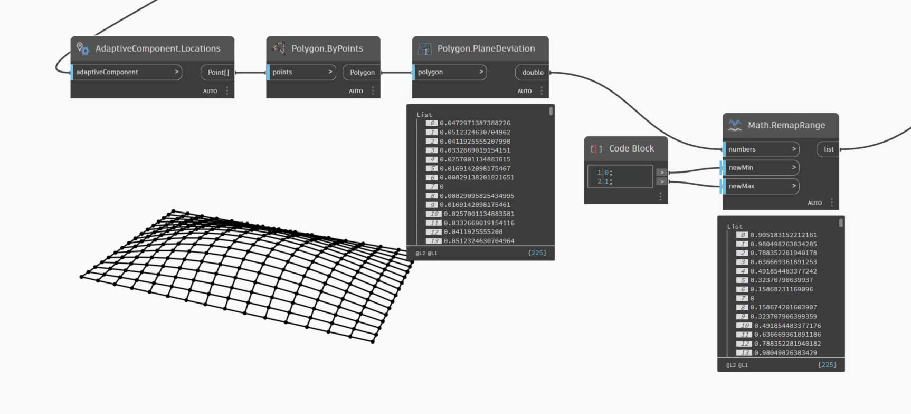
Use remapping to map a set of a data into a parameter range. This is fundamental tool used in a parametric model, and we'll demonstrate it in the exercise below.
Using Dynamo, the point locations of adaptive components can be used to create a best-fit plane each element. We can also query the sun position in the Revit file and study the plane's relative orientation to the sun in comparison to other adaptive components. Let's set that up in the exercise below by creating an algorithmic roofscape.
Exercise
Download the example file by clicking on the link below.
A full list of example files can be found in the Appendix.
{% file src="./datasets/5/Revit-Customizing.zip" %}
This exercise will expand on the techniques demonstrated in the previous section. In this case, we are defining a parametric surface from Revit elements, instantiating four-point adaptive components and then editing them based on orientation to the sun.

- Beginning by selecting two edges with the "Select Edge" node. The two edges are the long spans of the atrium.
- Combine the two edges into one list with the List.Create node.
- Create a surface between the two edges with a Surface.ByLoft.

- Using code block, define a range from 0 to 1 with 10 evenly spaced values:
0..1..#10;- Plug the code block into the *u *and v inputs of a Surface.PointAtParameter node, and plug the Surface.ByLoft node into the surface input. Right click the node and change the lacing to Cross Product. This will give a grid of points on the surface.
This grid of points serves as the control points for a parametrically defined surface. We want to extract the u and v positions of each one of these points so that we can plug them into a parametric formula and keep the same data structure. We can do this by querying the parameter locations of the points we just created.

- Add a Surface.ParameterAtPoint node to the canvas, connect the inputs as shown above.
- Query the u values of these parameters with the UV.U node.
- Query the v values of these parameters with the UV.V node.
- The outputs show the corresponding u and v values for every point of the surface. We now have a range from 0 to 1 for each value, in the proper data structure, so we're ready to apply a parametric algorithm.

- Add a code block to the canvas and enter the code:
Math.Sin(u*180)*Math.Sin(v*180)*w;This is a parametric function which creates a sine mound from a flat surface.- Connects the UV.U to the u input and the UV.V to the v input.
- The w input represents the amplitude of the shape, so we attach a number slider to it.

- Now, we have a list of values as defined by the algorithm. Let's use this list of values to move the points up in the +Z direction. Using Geometry.Translate, plug the *code block *into zTranslation and the Surface.PointAtParameter into the geometry input. You should see the new points displayed in the Dynamo preview.
- Finally, we create a surface with the NurbsSurface.ByPoints node, plugging the node from the previous step into the points input. We have ourselves a parametric surface. Feel free to drag the slider to watch the mound shrink and grow.
With the parametric surface, we want to define a way to panelize it in order to array four-point adaptive components. Dynamo does not have out-of-the-box functionality for surface panelization, so we can look to the community for helpful Dynamo packages.
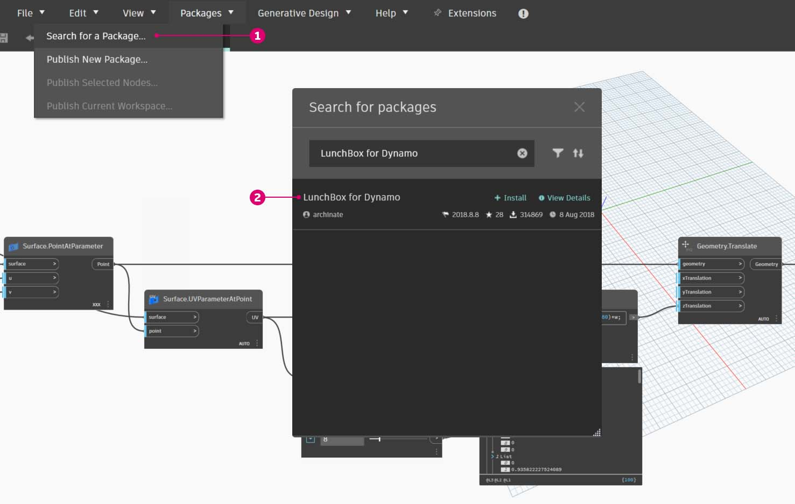
- Go to Packages>Search for a Package...
- Search for "LunchBox" and install "LunchBox for Dynamo". This is a really helpful set of tools for geometry operations such as this.
- After downloading, you now have full access to the LunchBox suite. Search for "Quad Grid" and select "LunchBox Quad Grid By Face". Plug the parametric surface into the surface input and set the U and V divisions to 15. You should see a quad-paneled surface in your Dynamo preview.
If you're curious about its setup, you can double click on the Lunch Box node and see how it's made.
Back in Revit, let's take a quick look at the adaptive component we're using here. No need to follow along, but this is the roof panel we're going to instantiate. It is a four-point adaptive component which is a crude representation of an ETFE system. The aperture of the center void is on a parameter called "ApertureRatio".
- We're about to instantiate a lot of geometry in Revit, so make sure to turn the Dynamo solver to "Manual".
- Add a Family Types node to the canvas and select "ROOF-PANEL-4PT".
- Add an AdaptiveComponent.ByPoints node to the canvas, connect Panel Pts from the "LunchBox Quad Grid by Face" output into the points input. Connect the Family Types node to the familySymbol input.
- Hit Run. Revit will have to think for a bit while the geometry is being created. If it takes too long, reduce the code block's '15' to a lower number. This will reduce the number of panels on the roof.
Note: If Dynamo is taking a long time to calculate nodes, you may want to use the "freeze" node functionality in order to pause the execution of Revit operations while you develop your graph. For more information on freezing nodes, check out the "Freezing" section in the solids chapter.
Back in Revit, we have the array of panels on the roof.
Zooming in, we can get a closer look at their surface qualities.
Analysis
- Continuing from the previous step, let's go further and drive the aperture of each panel based on its exposure to the sun. Zooming into Revit and select one panel, we see in the properties bar that there is a parameter called "Aperture Ratio". The family is setup so that the aperture ranges, roughly, from 0.05 to 0.45.
- If we turn on the solar path, we can see the current sun location in Revit.
- We can reference this sun location using the SunSettings.Current node.
- Plug the Sun settings into Sunsetting.SunDirection to get the solar vector.
- From the Panel Pts used to create the adaptive components, use Plane.ByBestFitThroughPoints to approximate a plane for the component.
- Query the normal of this plane.
- Use the dot product to calculate solar orientation. The dot product is a formula which determines how parallel or anti-parallel two vectors may be. So we're taking the plane normal of each adaptive component and comparing it to the solar vector to roughly simulate solar orientation.
- Take the absolute value of the result. This ensures that the dot product is accurate if the plane normal is facing the reverse direction.
- Hit Run.
- Looking at the dot product, we have a wide range of numbers. We want to use their relative distribution, but we need to condense the numbers into the appropriate range of the "Aperture Ratio" parameter we plan to edit.
- The Math.RemapRange is a great tool for this. It takes an input list and remaps its bounds into two target values.
- Define the target values as 0.15 and 0.45 in a code block.
- Hit Run.
- Connect the remapped values into a Element.SetParameterByName node.
- Connect the string "Aperture Ratio" into the parameterName input.
- Connect the adaptive components into the element input.
- Hit Run.
Back in Revit, from a distance we can make out the affect of the solar orientation on the aperture of the ETFE panels.
Zooming in, we see that the ETFE panels are more closed as the face the sun. Our target here is to reduce overheating from solar exposure. If we wanted to let in more light based on solar exposure, we just have to switch the domain on Math.RemapRange.
Documenting
Editing parameters for documentation follows suit with the lessons learned in prior sections. In this section, we'll look at editing parameters which don't affect the geometric properties of an element, but instead prepare a Revit file for documentation.
Deviation
In the exercise below, we'll use a basic deviation from plane node to create a Revit sheet for documentation. Each panel on our parametrically defined roof structure has a different value for deviation, and we want to call out the range of values using color and by scheduling out the adaptive points to hand off to a facade consultant, engineer, or contractor.

The deviation from plane node will calculate the distance that the set of four points varies from the best-fit plane between them. This is a quick and easy way to study constructability.
Exercise
Part I: Setting Panels Aperture Ratio Based on Deviation From Plane Node
Download the example file by clicking on the link below.
A full list of example files can be found in the Appendix.
{% file src="datasets/6/Revit-Documenting.zip" %}
Start with the Revit file for this section (or continue from the previous section). This file has an array of ETFE panels on the roof. We'll reference these panels for this exercise.

- Add a Family Types node to the canvas and choose "ROOF-PANEL-4PT".
- Plug this node into a Select All Elements of Family Type node to get all of the elements from Revit into Dynamo.

- Query the location of adaptive points for each element with the AdaptiveComponent.Locations node.
- Create a polygon from these four points with the Polygon.ByPoints node. Notice we now have an abstract version of the paneled system in Dynamo without having to import the full geometry of the Revit element.
- Calculate planar deviation with the Polygon.PlaneDeviation node.
Just for kicks, like the previous exercise, let's set the aperture ratio of each panel based on its planar deviation.

- Add an Element.SetParameterByName node to the canvas and connect the adaptive components to the element input. Connect a Code Block reading "Aperture Ratio" into the parameterName input.
- We cannot directly connect the deviation results into the value input because we need to remap the values to the parameter range.

- Using Math.RemapRange, remap the deviation values to a domain between 0.15 and 0_._45 by entering
0.15; 0.45;into the Code Block.- Plug these results into the value input for Element.SetParameterByName.
Back in Revit we can kind of make sense of the change in aperture across the surface.

Zooming in, it becomes more clear that the closed panels are weighted towards the corners of the surface. The open corners are towards the top. The corners represent areas of larger deviation while bulge has minimal curvature, so this makes sense.

Part II: Color and Documentation
Setting the Aperture Ratio doesn't clearly demonstrate the deviation of panels on the roof, and we're also changing the geometry of the actual element. Suppose we just want to study the deviation from the standpoint of fabrication feasibility. It would be helpful to color the panels based on deviation range for our documentation. We can do that with the series of steps below, and in a very similar process to the steps above.

- Remove the Element.SetParameterByName and its input nodes and add Element.OverrideColorInView.
- Add a Color Range node to the canvas and plug into the color input of Element.OverrideColorInView. We still have to connect the deviation values to the color range in order to create the gradient.
- Hovering over the value input, we can see that the values for the input must be between 0 and 1 in order to map a color to each value. We need to remap the deviation values to this range.

- Using Math.RemapRange, remap the planar deviation values to a range between* 0* and 1 (note: you can use the "MapTo" node to define a source domain as well).
- Plug the results into a Color Range node.
- Notice our output is a range of colors instead of a range of numbers.
- If you're set to Manual, hit Run. You should be able to get away with being set to Automatic from this point forward.
Back in Revit, we see a much more legible gradient which is representative of planar deviation based on our color range. But what if we want to customize the colors? Notice that the minimum deviation values are represented in red, which seems to be the opposite of what we'd expect. We want to have maximum deviation to be red, with minimum deviation represented by a calmer color. Let's go back to Dynamo and fix this.


- Using a code block, add two numbers on two different lines:
0;and255;.- Create a red and blue color by plugging the appropriate values into two Color.ByARGB nodes.
- Create a list from these two colors.
- Plug this list into the colors input of the Color Range, and watch the custom color range update.
Back in Revit, we can now make better sense of areas of maximum deviation in the corners. Remember, this node is for overriding a color in a view, so it can be really helpful if we had a particular sheet in the set of drawings which focuses on a particular type of analysis.
Part III: Scheduling
Selecting one ETFE panel in Revit, we see that there are four instance parameters, XYZ1, XYZ2, XYZ3, and XYZ4. These are all blank after they're created. These are text-based parameters and need values. We'll use Dynamo to write the adaptive point locations to each parameter. This helps interoperability if the geometry needs to be sent to an engineer of facade consultant.

In a sample sheet, we have a large, empty schedule. The XYZ parameters are shared parameters in the Revit file, which allows us to add them to the schedule.
Zooming in, the XYZ parameters are yet to be filled in. The first two parameters are taken care of by Revit.
To write in these values, we'll do a complex list operation. The graph itself is simple, but the concepts build heavily from the list mapping as discussed in the list chapter.
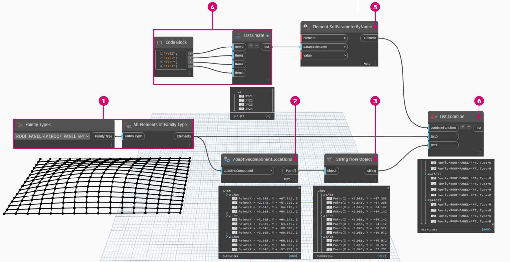
- Select all the adaptive components with two nodes.
- Extract the location of each point with AdaptiveComponent.Locations.
- Convert these points to strings. Remember, the parameter is text-based so we need to input the correct data type.
- Create a list of the four strings which define the parameters to change: XYZ1, XYZ2, XYZ3, and XYZ4.
- Plug this list into the parameterName input of Element.SetParameterByName.
- Connect Element.SetParameterByName into the the combinator input of List.Combine. Connect the adaptive components into list1. Connect String from Object into list2.
We are list mapping here, because we are writing four values for each element, which creates a complex data structure. The List.Combine node defines an operation one step down in the data hierarchy. This is why element and value inputs of Element.SetParameterByName are left blank. List.Combine is connecting the sublists of its inputs into the empty inputs of Element.SetParameterByName, based on the order in which they are connected.
Selecting a panel in Revit, we see now that we have string values for each parameter. Realistically, we would create a simpler format to write a point (X,Y,Z). This can be done with string operations in Dynamo, but we're bypassing that here to stay within the scope of this chapter.
.jpg)
A view of the sample schedule with parameters filled in.
.jpg)
Each ETFE panel now has the XYZ coordinates written for each adaptive point, representing the corners of each panel for fabrication.
.jpg)
Coding in Dynamo
Dynamo is a great door to start coding for the AEC world. You may be interested in some of these sections to start your coding journey:
Code Blocks and DesignScript
The code block is a unique feature in Dynamo that dynamically links a visual programming environment with a text-based one. The code-block has access to all of the Dynamo nodes and can define an entire graph in one node. Read this chapter closely, as the code block is a fundamental building block of Dynamo.

What's a Code Block
Code blocks are a window deep into DesignScript, the programming language at the heart of Dynamo. Built from scratch to support exploratory design workflows, DesignScript is a readable and concise language that offers both immediate feedback to small bits of code and also scales to large and complex interactions. DesignScript also forms the backbone of the engine that drives most aspects of Dynamo under the hood. Because nearly all of the functionality found in Dynamo nodes and interactions have a one-to-one relationship with the scripting language, there are unique opportunities to move between node-based interactions and scripting in a fluid way.

For beginners, nodes can be automatically converted to text syntax to aid in learning DesignScript or simply to reduce the size of larger sections of graphs. This is done using a process called "Node to Code", which is outlined in more detail in the DesignScript Syntax section. More experienced users can use Code Blocks to create customized mashups of existing functionality and user authored relationships using many standard coding paradigms. In between the beginner and advanced user, there are a huge number of shortcuts and code snippets that will accelerate your designs. While the term 'code block' may be a little intimidating to non-programmers, it is both easy to use and robust. A beginner can use the code block efficiently with minimal coding, and an advanced user can define scripted definitions to be recalled elsewhere in a Dynamo definition.
Code Block: A Brief Overview
In short, code blocks are a text-scripting interface within a visual-scripting environment. They can be used as numbers, strings, formulas, and other data types. The code block is designed for Dynamo, so one can define arbitrary variables in the code block, and those variables are automatically added to the inputs of the node:
With code blocks, a user has the flexibility to decide how to specify inputs. Here are several different ways to make a basic point with coordinates (10, 5, 0):
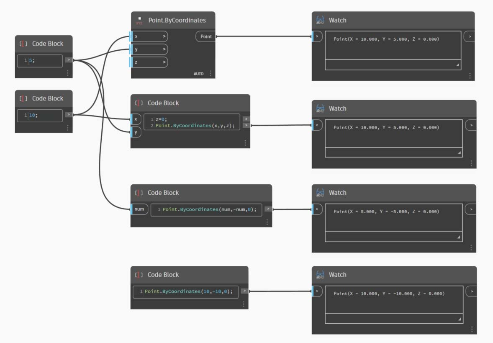
As you learn more of the available functions in the library, you might even find that typing Point.ByCoordinates is faster than searching in the library and finding the proper node. When you type in "Point." for example, Dynamo will display a list of possible functions to apply to a Point. This makes the scripting more intuitive and will help with learning how to apply functions in Dynamo.
Creating Code Block Nodes
The code block can be found in Core>Input>Actions>Code Block. But even faster, just double click on the canvas and the code block appears. This node is used so often, it's given full double-click privileges.

Numbers, Strings and Formulas
Code blocks are also flexible towards data types. The user can quickly define numbers, strings, and formulas and the code block will deliver the desired output.
In the image below, you can see the "old school" way of doing things is a little long-winded: the user searches for the intended node in the interface, adds the node to the canvas, and then inputs the data. With code block, the user can double-click on the canvas to pull up the node, and type in the correct data type with basic syntax.
The number, string, and formula nodes are three examples of Dynamo nodes which are arguably obsolete in comparison to the code block.
- "Old-school"
- Code Blocks
DesignScript Syntax
You may have noticed a common theme in the names of nodes in Dynamo: each node uses a "." syntax without spaces. This is because the text at the top of each node represents the actual syntax for scripting, and the "." (or dot notation) separates an element from the possible methods we can call. This creates an easy translation from visual scripting to text-based scripting.

As a general analogy for the dot notation, how can we deal with a parametric apple in Dynamo? Below are a few methods we'll run on the apple before deciding to eat it. (Note: these are not actual Dynamo methods):
| Human Readible | Dot Notation | Output |
|---|---|---|
| What color is the apple? | Apple.color | red |
| Is the apple ripe? | Apple.isRipe | true |
| How much does the apple weigh? | Apple.weight | 6 oz. |
| Where did the apple come from? | Apple.parent | tree |
| What does the apple create? | Apple.children | seeds |
| Is this apple locally grown? | Apple.distanceFromOrchard | 60 mi. |
I don't know about you, but judging by the outputs in the table above, this looks like one tasty apple. I think I'll Apple.eat() it.
Dot Notation in Code Block
With the apple analogy in mind, let's look at Point.ByCoordinates and show how we can create a point using the code block.
The code block syntax Point.ByCoordinates(0,10); gives the same result as a Point.ByCoordinates node in Dynamo, except we're able to create a point using one node. This is more efficient than the connecting a separate node into "X" and "Y".

- By using Point.ByCoordinates in the code block, we are specifying the inputs in the same order as the out-of-the-box node (X,Y).
Calling Nodes - Create, Actions, Query
You can call any regular node in the library through a Code Block as long as the node isnt a special UI node: those with a special user interface feature. For instance, you can call Circle.ByCenterPointRadius, but it wouldnt make much sense to call a Watch 3D node.
Regular nodes (most of your library), generally come in three types. Youll find that the library is organized with these categories in mind. Methods, or nodes, of these three types are treated differently when invoked within a Code Block.

- Create - Create (or construct) something
- Action - Perform an action on something
- Query - Get a property of something that already exists
Create
The "Create" category will construct geometry from scratch. We input values in the code block from left-to-right. These inputs are in the same order as the inputs on the node from top-to-bottom.
Comparing the Line.ByStartPointEndPoint node and the corresponding syntax in the code block, we get the same results.

Action
An action is something you do to an object of that type. Dynamo uses dot notation, common to many coding languages, to apply an action to a thing. Once you have the thing, type a dot then the name of the action. The action-type methods input is placed in parentheses just like create-type methods, only you dont have to specify the first input you see on the corresponding node. Instead, we specify the element upon which we are performing the action:

- The Point.Add node is an action-type node, so the syntax works a little differently.
- The inputs are (1) the point, and (2) the vector to add to it. In a Code Block, we've named the point (the thing) pt. To add a vector named *vec *to pt, we would write pt.Add(vec), or: thing, dot, action. The Add action only has one input, or all the inputs from the Point.Add node minus the first one. The first input for the Point.Add node is the point itself.
Query
Query-type methods get a property of an object. Since the object itself is the input, you dont have to specify any inputs. No parentheses required.

How About Lacing?
Lacing with nodes is somewhat different from lacing with code block. With nodes, the user right clicks on the node and selects the lacing option to perform. With code block, the user has much more control as to how the data is structured. The code block shorthand method uses replication guides to set how several one-dimensional lists should be paired. Numbers in angled brackets "<>" define the hierarchy of the resulting nested list: <1>,<2>,<3>, etc.

- In this example, we use a shorthand to define two ranges (more on shorthand in the following section of this chapter). In short,
0..1;is equivalent to{0,1}and-3..-7is equivalent to{-3,-4,-5,-6,-7}. The result gives us lists of 2 x-values and 5 y-values. If we dont use replication guides with these mismatched lists, we get a list of two points, which is the length of the shortest list. Using replication guides, we can find all of the possible combinations of 2 and 5 coordinates (or, a Cross Product).- Using the syntax Point.ByCoordinates
(x_vals<1>,y_vals<2>);we get two lists with five items in each list.- Using the syntax Point.ByCoordinates
(x_vals<2>,y_vals<1>);we get five lists with two items in each list.
With this notation, we can also specify which list will be dominant: 2 lists of 5 things or 5 lists of 2 things. In the example, changing the order of the replication guides makes the result a list of rows of points or a list of columns of points in a grid.
Node to Code
While the code block methods above may take some getting used to, there is a feature in Dynamo called "Node to Code" which will make the process easier. To use this feature, select an array of nodes in your Dynamo graph, right-click on the canvas and select "Node to Code". Dynamo condenses these nodes into a code block, with all of the inputs and outputs! Not only is this a great tool for learning code block, but it also allows you to work with a more efficient and parametric Dynamo graph. We'll conclude the exercise below by using "Node to Code", so don't miss it.

Exercise: Surface Attractor
Download the example file by clicking on the link below.
A full list of example files can be found in the Appendix.
{% file src="../datasets/8-1/2/Dynamo-Syntax_Attractor-Surface.dyn" %}
To show the power of code block, we are going to translate an existing attractor field definition into code block form. Working with an existing definition demonstrates how code block relates to visual scripting, and is helpful for learning DesignScript syntax.
Begin by recreating the definition in the image above (or by opening the sample file).

- Notice that the lacing on Point.ByCoordinates has been set to Cross Product.
- Each point in a grid is moved up in the Z direction based on its distance to the reference point.
- A surface is recreated and thickened, creating a bulge in the geometry relative to the distance to the reference point.

- Starting from the beginning, let's define the reference point first: Point.ByCoordinates
(x,y,0);We use the same Point.ByCoordinates syntax as is specified on the top of the reference point node.- The variables x and y are inserted into the Code Block so that we may update these dynamically with sliders.
- Add some sliders to the Code Block inputs which range from -50 to 50. This way, we can span across the default Dynamo grid.

- In the second line of the Code Block, we define a shorthand to replace the number sequence node:
coordsXY = (-50..50..#11);We'll discuss this more in the next section. For now, notice that this shorthand is equivalent to the Number Sequence node in the visual script.

- Now, we want to create a grid of points from the coordsXY sequence. To do this, we want to use the Point.ByCoordinates syntax, but also need to initiate a Cross Product of the list in the same manner that we did in the visual script. To do this, we type the line:
gridPts = Point.ByCoordinates(coordsXY<1>,coordsXY<2>,0);The angled brackets denote the cross product reference.- Notice in the Watch3D node that we have a grid of points across the Dynamo grid.
- Now for the tricky part: We want to move the grid of points up based on their distance to the reference point. First, let's call this new set of points transPts. And since a translation is an action on an existing element, rather than using
Geometry.Translate..., we usegridPts.Translate- Reading from the actual node on the canvas, we see that there are three inputs. The geometry to translate is already declared because we are performing the action on that element (with gridPts.Translate). The remaining two inputs will be inserted into the parentheses of the function: direction and distance.
- The direction is simple enough, we use a
Vector.ZAxis()to move vertically.- The distance between the reference point and each grid point still needs to be calculated, so we do this as an action to the reference point in the same manner:
refPt.DistanceTo(gridPts)- The final line of code gives us the translated points:
transPts=gridPts.Translate(Vector.ZAxis(),refPt.DistanceTo(gridPts));

- We now have a grid of points with the appropriate data structure to create a Nurbs Surface. We construct the surface using
srf = NurbsSurface.ByControlPoints(transPts);

- And finally, to add some depth to the surface, we construct a solid using
solid = srf.Thicken(5);In this case we thickened the surface by 5 units in the code, but we could always declare this as a variable (calling it thickness for example) and then control that value with a slider.
Simplify the Graph with "Node to Code"
The "Node to Code" feature automates the entire exercise that we just completed with the click of a button. Not only is this powerful for creating custom definitions and reusable code blocks, but it is also a really helpful tool to learn how to script in Dynamo:

- Start with the existing visual script from step 1 of the exercise. Select all of the nodes, right click on the canvas, and select "Node to Code". Simple as that.
Dynamo has automated a text based version of the visual graph, lacing and all. Test this out on your visual scripts and release the power of the code block!

Shorthand
Shorthand
There are a few basic shorthand methods in the code block which, simply put, make data management a lot easier. We'll break down the basics below and discuss how this shorthand can be used both for creating and querying data.
| Data Type | Standard Dynamo | Code Block Equilvalent |
|---|---|---|
| Numbers |  |  |
| Strings |  |  |
| Sequences |  |  |
| Ranges |  | |
| Get Item at Index |  |  |
| Create List |  |  |
| Concatenate Strings |  |  |
| Conditional Statements |  |  |
Additional Syntax
| Node(s) | Code Block Equivalent | Note |
| Any operator (+, &&, >=, Not, etc.) | +, &&, >=, !, etc. | Note that Not becomes ! but the node is called Not to distinguish from Factorial |
| Boolean True | true; | Note lower case |
| Boolean False | false; | Note lower case |
Ranges and Sequences
The method for defining ranges and sequences can be reduced to basic shorthand. Use the image below as a guide to the ".." syntax for defining a list of numerical data with code block. After getting the hang of this notation, creating numerical data is a really efficient process:

- In this example, a number range is replaced by basic Code Block syntax defining the
beginning..end..step-size;. Represented numerically, we get:0..10..1;- Notice that the syntax
0..10..1;is equivalent to0..10;A step-size of 1 is the default value for the shorthand notation. So0..10;will give a sequence from 0 to 10 with a step-size of 1.- The Sequence example is similar, except we use a "#" to state that we want 15 values in the list, rather than a list which goes up to 15. In this case, we are defining:
beginning..#ofSteps..step-size:The actual syntax for the sequence is0..#15..2- Using the "#" from the previous step, we now place it in the "step-size" portion of the syntax. Now, we have a number range spanning from the "beginning" to the "end" and the "step-size" notation evenly distributes a number of values between the two:
beginning..end..#ofSteps
Advanced Ranges
Creating advanced ranges allows us to work with list of lists in a simple fashion. In the examples below, we're isolating a variable from the primary range notation, and creating another range of that list.

1. Creating nested ranges, compare the notation with a "#" vs. the notation without. The same logic applies as in basic ranges, except it gets a little more complex.
2. We can define a sub-range at any place within the primary range, and notice that we can have two sub-ranges as well.
3. By controlling the "end" value in a range, we create more ranges of differing lengths.
As a logic exercise, compare the two shorthands above and try to parse through how subranges and the # notation drive the resultant output.

Make Lists and Get Items From a List
In addition to making lists with shorthand, we can also create lists on the fly. These list can contain a wide range of element types and can also be queried (remember, lists are objects in themselves). To summarize, with code block you make lists and query items from a list with brackets (a.k.a. square brackets):

1. Create lists quickly with strings and query them using the item index.
2. Create lists with variables and query using the range shorthand notation.
And managing with nested lists is a similar process. Be aware of the list order and recall using multiple sets of square brackets:

1. Define a list of lists.
2. Query a list with single bracket notation.
3. Query an item with double bracket notation.
Exercise: Sine Surface
Download the example file by clicking on the link below.
A full list of example files can be found in the Appendix.
{% file src="../datasets/8-1/3/Obsolete-Nodes_Sine-Surface.dyn" %}
In this exercise, we will flex our new shorthand skills to create a funky-cool eggshell surface defined by ranges and formulas. During this exercise, notice how we use code block and existing Dynamo nodes in tandem: we use the code block for the heavy data lifting while the Dynamo nodes are visually laid out for legibility of the definition.
Start by creating a surface by connecting the nodes above. Instead of using a number node to define width and length, double click on the canvas and type 100; into a code block
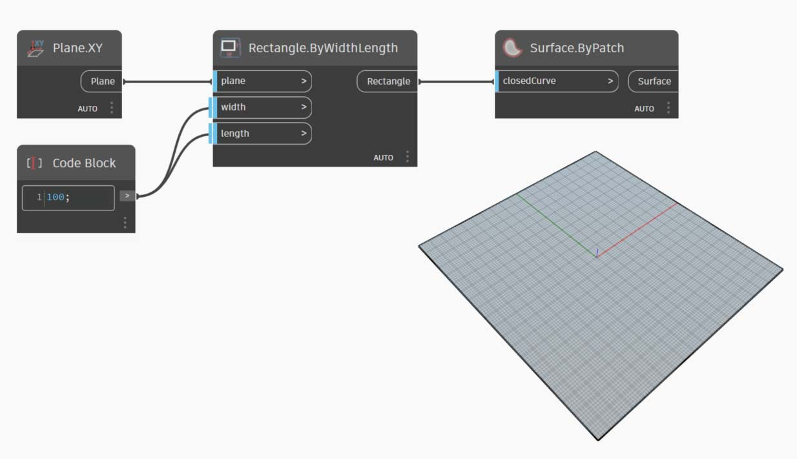

- Define a range between 0 and 1 with 50 divisions by typing
0..1..#50into a Code Block.- Connect the range into Surface.PointAtParameter, which takes u and v values between 0 and 1 across the surface. Remember to change the Lacing to Cross Product by right clicking on the Surface.PointAtParameter node.
In this step, we employ our first function to move the grid of points up in the Z. This grid will drive a generated surface based on the underlying function. Add new nodes as shown in image below

- Rather than using a formula node, we use a Code Block with the line:
(0..Math.Sin(x*360)..#50)*5;. To quickly break this down, we're defining a range with a formula inside of it. This formula is the Sine function. The sine function receives degree inputs in Dynamo, so in order to get a full sine wave, we multiple our x values (this is the range input from 0 to 1) by 360. Next we want the same number of divisions as control grid points for each row, so we define fifty subdivisions with #50. Finally, the multiplier of 5 simply increases the amplitude of translation so that we can see the effect in the Dynamo Preview.

- While the previous Code Block worked fine, it wasn't completely parametric. We want to dynamically drive its parameters, so we'll replace the line from the previous step with
(0..Math.Sin(x*360*cycles)..#List.Count(x))*amp;. This gives us the ability to define these values based on inputs.
By changing the sliders (ranging from 0 to 10), we get some interesting results.


- By doing a transpose on the number range, we reverse the direction of the curtain wave:
transposeList = List.Transpose(sineList);

- We get a distorted eggshell surface when we add the sineList and the tranposeList:
eggShellList = sineList+transposeList;
Let's change the sliders values specified below to 'calm the waters' of this algorithm.

Last, let's query isolated parts of the data with the Code Block. To regenerate the surface with a specific range of points, add the code block above between the Geometry.Translate and NurbsSurface.ByPoints node. This has the line of text: sineStrips[0..15..1];. This will select the first 16 rows of points (out of 50). Recreating the surface, we can see that we've generated an isolated portion of the grid of points.


- In the final step, to make this Code Block more parametric, we drive the query by using a slider ranging from 0 to 1. We do this with this line of code:
sineStrips[0..((List.Count(sineStrips)-1)*u)];. This may seem confusing, but the line of code gives us a quick way to scale the length of the list into a multiplier between 0 and 1.
A value of 0.53 on the slider creates a surface just past the midpoint of the grid.

And as expected, a slider of 1 creates a surface from the full grid of points.

Looking at the visual graph, we can highlight the code blocks and see each of their functions.

1. The first Code Block replaces the Number node.
2. The second Code Block replaces the Number Range node.
3. The third Code Block replaces the Formula node (as well as List.Transpose, List.Count and Number Range).
4. The fourth Code Block queries a list of lists, replacing the List.GetItemAtIndex node.
Functions
Functions can be created in a code block and recalled elsewhere in a Dynamo definition. This creates another layer of control in a parametric file, and can be viewed as a text-based version of a custom node. In this case, the "parent" code block is readily accessible and can be located anywhere on the graph. No wires needed!
Parent
The first line has the key word def, then the function name, then the names of inputs in parentheses. Braces define the body of the function. Return a value with return =. Code Blocks that define a function do not have input or output ports because they are called from other Code Blocks.

/*This is a multi-line comment,
which continues for
multiple lines*/
def FunctionName(in1,in2)
{
//This is a comment
sum = in1+in2;
return sum;
};
Children
Call the function with another Code Block in the same file by giving the name and the same number of arguments. It works just like the out-of-the-box nodes in your library.

FunctionName(in1,in2);
Exercise: Sphere By Z
Download the example file by clicking on the link below.
A full list of example files can be found in the Appendix.
{% file src="../datasets/8-1/4/Functions_SphereByZ.dyn" %}
In this exercise, we will make a generic definition that will create spheres from an input list of points. The radius of these spheres are driven by the Z property of each point.
Let's begin with a number range of ten values spanning from 0 to 100. Plug these into a Point.ByCoordinates nodes to create a diagonal line.

Create a Code Block and introduce our definition.

Use these lines of code:
def sphereByZ(inputPt) { };The inputPt is the name we've given to represent the points that will drive the function. As of now, the function isn't doing anything, but we'll build up this function in the steps to come.

- Adding to the Code Block function, we place a comment and a sphereRadius variable which queries the Z position of each point. Remember, inputPt.Z does not need parenetheses as a method. This is a query of an existing element's properties, so no inputs are necessary:
def sphereByZ(inputPt,radiusRatio) { //get Z Value, ise ot to drive radius of sphere sphereRadius=inputPt.Z; };

- Now, let's recall the function we've created in another Code Block. If we double-click on the canvas to create a new code block, and type in sphereB, we notice that Dynamo suggest the sphereByZ function that we've defined. Your function has been added to the intellisense library! Pretty cool.

Now we call the function and create a variable called Pt to plug in the points created in the earlier steps:
sphereByZ(Pt)We notice from the output that we have all null values. Why is this? When we defined the function, we are calculating the sphereRadius variable, but we did not define what the function should return as an output. We can fix this in the next step.

- An important step, we need to define the output of the function by adding the line
return = sphereRadius;to the sphereByZ function.- Now we see that the output of the Code Block gives us the Z coordinates of each point.
Let's create actual spheres now by editing the Parent function.

- We first define a sphere with the line of code:
sphere=Sphere.ByCenterPointRadius(inputPt,sphereRadius);- Next, we change the return value to be the sphere instead of the sphereRadius:
return = sphere;This gives us some giant spheres in our Dynamo preview!
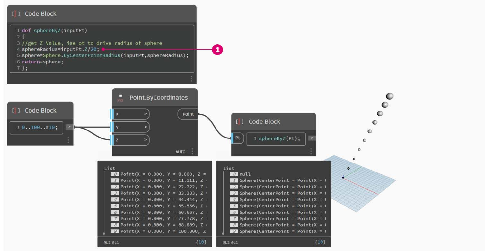
1. To temper the size of these spheres, let's update the sphereRadius value by adding a divider:
sphereRadius = inputPt.Z/20;Now we can see the separate spheres and start to make sense of the relationship between radius and Z value.

- On the Point.ByCoordinates node, by changing the lacing from Shortest List to Cross Product, we create a grid of points. The sphereByZ function is still in full effect, so the points all create spheres with radii based on Z values.

- And just to test the waters, we plug the original list of numbers into the X input for Point.ByCoordinates. We now have a cube of spheres.
- Note: if this takes a long time to calculate on your computer, try to change #10 to something like #5.
Remember, the sphereByZ function we've created is a generic function, so we can recall the helix from an earlier lesson and apply the function to it.

One final step: let's drive the radius ratio with a user defined parameter. To do this, we need to create a new input for the function and also replace the 20 divider with a parameter.

Update the sphereByZ definition to:
def sphereByZ(inputPt,radiusRatio) { //get Z Value, use it to drive radius of sphere sphereRadius=inputPt.Z/radiusRatio; //Define Sphere Geometry sphere=Sphere.ByCenterPointRadius(inputPt,sphereRadius); //Define output for function return sphere; };Update the children Code Block by adding a ratio variable to the input:
sphereByZ(Pt,ratio);Plug a slider into the newly created Code Block input and vary the size of the radii based on the radius ratio.
Geometry with DesignScript
In this section, you will find a series of lessons on the creation of geometry with DesignScript. Follow along by copying the example DesignScript into Dynamo Code Blocks.
// copy this code into a Code Block
// to start writing DesignScript
x = "Let's create some geometry!";
DesignScript Geometry Basics
Point
The simplest geometrical object in the Dynamo standard geometry library is a point. All geometry is created using special functions called constructors, which each return a new instance of that particular geometry type. In Dynamo, constructors begin with the name of the objects type, in this case Point, followed by the method of construction. To create a three dimensional point specified by x, y, and z Cartesian coordinates, use the ByCoordinates constructor:
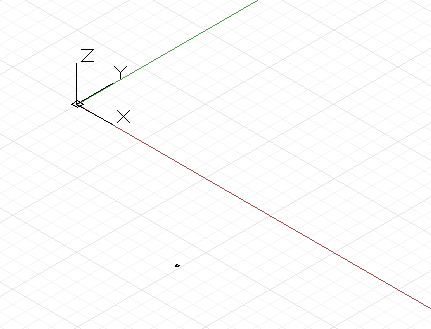
// create a point with the following x, y, and z
// coordinates:
x = 10;
y = 2.5;
z = -6;
p = Point.ByCoordinates(x, y, z);
Constructors in Dynamo are typically designated with the By prefix, and invoking these functions returns a newly created object of that type. This newly created object is stored in the variable named on the left side of the equal sign.
Most objects have many different constructors, and we can use the BySphericalCoordinates constructor to create a point lying on a sphere, specified by the spheres radius, a first rotation angle, and a second rotation angle (specified in degrees):
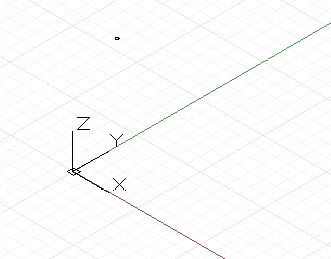
// create a point on a sphere with the following radius,
// theta, and phi rotation angles (specified in degrees)
radius = 5;
theta = 75.5;
phi = 120.3;
cs = CoordinateSystem.Identity();
p = Point.BySphericalCoordinates(cs, radius, theta,
phi);
From Point to Line
Points can be used to construct higher dimensional geometry such as lines. We can use the ByStartPointEndPoint constructor to create a Line object between two points:
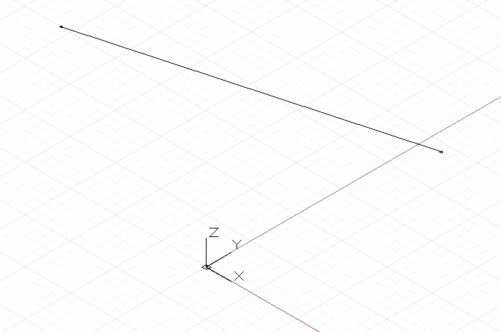
// create two points:
p1 = Point.ByCoordinates(3, 10, 2);
p2 = Point.ByCoordinates(-15, 7, 0.5);
// construct a line between p1 and p2
l = Line.ByStartPointEndPoint(p1, p2);
From Line to Surface
Similarly, lines can be used to create higher dimensional surface geometry, for instance using the Loft constructor, which takes a series of lines or curves and interpolates a surface between them.
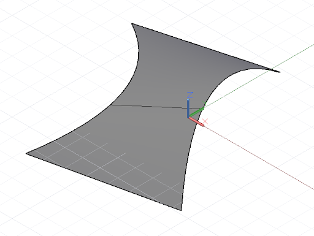
// create points:
p1 = Point.ByCoordinates(3, 10, 2);
p2 = Point.ByCoordinates(-15, 7, 0.5);
p3 = Point.ByCoordinates(5, -3, 5);
p4 = Point.ByCoordinates(-5, -6, 2);
p5 = Point.ByCoordinates(9, -10, -2);
p6 = Point.ByCoordinates(-11, -12, -4);
// create lines:
l1 = Line.ByStartPointEndPoint(p1, p2);
l2 = Line.ByStartPointEndPoint(p3, p4);
l3 = Line.ByStartPointEndPoint(p5, p6);
// loft between cross section lines:
surf = Surface.ByLoft([l1, l2, l3]);
From Surface to Solid
Surfaces too can be used to create higher dimensional solid geometry, for instance by thickening the surface by a specified distance. Many objects have functions attached to them, called methods, allowing the programmer to perform commands on that particular object. Methods common to all pieces of geometry include Translate and Rotate, which respectively translate (move) and rotate the geometry by a specified amount. Surfaces have a Thicken method, which take a single input, a number specifying the new thickness of the surface.
p1 = Point.ByCoordinates(3, 10, 2);
p2 = Point.ByCoordinates(-15, 7, 0.5);
p3 = Point.ByCoordinates(5, -3, 5);
p4 = Point.ByCoordinates(-5, -6, 2);
l1 = Line.ByStartPointEndPoint(p1, p2);
l2 = Line.ByStartPointEndPoint(p3, p4);
surf = Surface.ByLoft([l1, l2]);
// true indicates to thicken both sides of the Surface:
solid = surf.Thicken(4.75, true);
Intersect
Intersection commands can extract lower dimensional geometry from higher dimensional objects. This extracted lower dimensional geometry can form the basis for higher dimensional geometry, in a cyclic process of geometrical creation, extraction, and recreation. In this example, we use the generated Solid to create a Surface, and use the Surface to create a Curve.
p1 = Point.ByCoordinates(3, 10, 2);
p2 = Point.ByCoordinates(-15, 7, 0.5);
p3 = Point.ByCoordinates(5, -3, 5);
p4 = Point.ByCoordinates(-5, -6, 2);
l1 = Line.ByStartPointEndPoint(p1, p2);
l2 = Line.ByStartPointEndPoint(p3, p4);
surf = Surface.ByLoft([l1, l2]);
solid = surf.Thicken(4.75, true);
p = Plane.ByOriginNormal(Point.ByCoordinates(2, 0, 0),
Vector.ByCoordinates(1, 1, 1));
int_surf = solid.Intersect(p);
int_line = int_surf.Intersect(Plane.ByOriginNormal(
Point.ByCoordinates(0, 0, 0),
Vector.ByCoordinates(1, 0, 0)));
Geometric Primitives
CoordinateSystem
While Dynamo is capable of creating a variety of complex geometric forms, simple geometric primitives form the backbone of any computational design: either directly expressed in the final designed form, or used as scaffolding off of which more complex geometry is generated.
While not strictly a piece of geometry, the CoordinateSystem is an important tool for constructing geometry. A CoordinateSystem object keeps track of both position and geometric transformations such as rotation, sheer, and scaling.
Creating a CoordinateSystem centered at a point with x = 0, y = 0, z = 0, with no rotations, scaling, or sheering transformations, simply requires calling the Identity constructor:
// create a CoordinateSystem at x = 0, y = 0, z = 0,
// no rotations, scaling, or sheering transformations
cs = CoordinateSystem.Identity();
CoordinateSystems with geometric transformations are beyond the scope of this chapter, though another constructor allows you to create a coordinate system at a specific point, CoordinateSystem.ByOriginVectors:
// create a CoordinateSystem at a specific location,
// no rotations, scaling, or sheering transformations
x_pos = 3.6;
y_pos = 9.4;
z_pos = 13.0;
origin = Point.ByCoordinates(x_pos, y_pos, z_pos);
identity = CoordinateSystem.Identity();
cs = CoordinateSystem.ByOriginVectors(origin,
identity.XAxis, identity.YAxis, identity.ZAxis);
Point
The simplest geometric primitive is a Point, representing a zero-dimensional location in three-dimensional space. As mentioned earlier there are several different ways to create a point in a particular coordinate system: Point.ByCoordinates creates a point with specified x, y, and z coordinates; Point.ByCartesianCoordinates creates a point with a specified x, y, and z coordinates in a specific coordinate system; Point.ByCylindricalCoordinates creates a point lying on a cylinder with radius, rotation angle, and height; and Point.BySphericalCoordinates creates a point lying on a sphere with radius and two rotation angle.
This example shows points created at various coordinate systems:
// create a point with x, y, and z coordinates
x_pos = 1;
y_pos = 2;
z_pos = 3;
pCoord = Point.ByCoordinates(x_pos, y_pos, z_pos);
// create a point in a specific coordinate system
cs = CoordinateSystem.Identity();
pCoordSystem = Point.ByCartesianCoordinates(cs, x_pos,
y_pos, z_pos);
// create a point on a cylinder with the following
// radius and height
radius = 5;
height = 15;
theta = 75.5;
pCyl = Point.ByCylindricalCoordinates(cs, radius, theta,
height);
// create a point on a sphere with radius and two angles
phi = 120.3;
pSphere = Point.BySphericalCoordinates(cs, radius,
theta, phi);
Line
The next higher dimensional Dynamo primitive is a line segment, representing an infinite number of points between two end points. Lines can be created by explicitly stating the two boundary points with the constructor Line.ByStartPointEndPoint, or by specifying a start point, direction, and length in that direction, Line.ByStartPointDirectionLength.
p1 = Point.ByCoordinates(-2, -5, -10);
p2 = Point.ByCoordinates(6, 8, 10);
// a line segment between two points
l2pts = Line.ByStartPointEndPoint(p1, p2);
// a line segment at p1 in direction 1, 1, 1 with
// length 10
lDir = Line.ByStartPointDirectionLength(p1,
Vector.ByCoordinates(1, 1, 1), 10);
3D Primitives - Cuboid, Cone, Cylinder, Sphere, etc
Dynamo has objects representing the most basic types of geometric primitives in three dimensions: Cuboids, created with Cuboid.ByLengths; Cones, created with Cone.ByPointsRadius and Cone.ByPointsRadii; Cylinders, created with Cylinder.ByRadiusHeight; and Spheres, created with Sphere.ByCenterPointRadius.
// create a cuboid with specified lengths
cs = CoordinateSystem.Identity();
cub = Cuboid.ByLengths(cs, 5, 15, 2);
// create several cones
p1 = Point.ByCoordinates(0, 0, 10);
p2 = Point.ByCoordinates(0, 0, 20);
p3 = Point.ByCoordinates(0, 0, 30);
cone1 = Cone.ByPointsRadii(p1, p2, 10, 6);
cone2 = Cone.ByPointsRadii(p2, p3, 6, 0);
// make a cylinder
cylCS = cs.Translate(10, 0, 0);
cyl = Cylinder.ByRadiusHeight(cylCS, 3, 10);
// make a sphere
centerP = Point.ByCoordinates(-10, -10, 0);
sph = Sphere.ByCenterPointRadius(centerP, 5);
Vector Math
Objects in computational designs are rarely created explicitly in their final position and form, and are most often translated,rotated, and otherwise positioned based off of existing geometry. Vector math serves as a kind-of geometric scaffolding to give direction and orientation to geometry, as well as to conceptualize movements through 3D space without visual representation.
At its most basic, a vector represents a position in 3D space, and is often times thought of as the endpoint of an arrow from the position (0, 0, 0) to that position. Vectors can be created with the ByCoordinates constructor, taking the x, y, and z position of the newly created Vector object. Note that Vector objects are not geometric objects, and dont appear in the Dynamo window. However, information about a newly created or modified vector can be printed in the console window:

// construct a Vector object
v = Vector.ByCoordinates(1, 2, 3);
s = v.X + " " + v.Y + " " + v.Z;
A set of mathematical operations are defined on Vector objects, allowing you to add, subtract, multiply, and otherwise move objects in 3D space as you would move real numbers in 1D space on a number line.
Vector Addition
Vector addition is defined as the sum of the components of two vectors, and can be thought of as the resulting vector if the two component vector arrows are placed tip to tail. Vector addition is performed with the Add method, and is represented by the diagram on the left.

a = Vector.ByCoordinates(5, 5, 0);
b = Vector.ByCoordinates(4, 1, 0);
// c has value x = 9, y = 6, z = 0
c = a.Add(b);
Vector Subtraction
Similarly, two Vector objects can be subtracted from each other with the Subtract method. Vector subtraction can be thought of as the direction from first vector to the second vector.

a = Vector.ByCoordinates(5, 5, 0);
b = Vector.ByCoordinates(4, 1, 0);
// c has value x = 1, y = 4, z = 0
c = a.Subtract(b);
Vector Multiplication
Vector multiplication can be thought of as moving the endpoint of a vector in its own direction by a given scale factor.

a = Vector.ByCoordinates(4, 4, 0);
// c has value x = 20, y = 20, z = 0
c = a.Scale(5);
Normalize Vector Length
Often its desired when scaling a vector to have the resulting vectors length exactly equal to the scaled amount. This is easily achieved by first normalizing a vector, in other words setting the vectors length exactly equal to one.
a = Vector.ByCoordinates(1, 2, 3);
a_len = a.Length;
// set the a's length equal to 1.0
b = a.Normalized();
c = b.Scale(5);
// len is equal to 5
len = c.Length;
c still points in the same direction as a (1, 2, 3), though now it has length exactly equal to 5.
Cross Product
Two additional methods exist in vector math which dont have clear parallels with 1D math, the cross product and dot product. The cross product is a means of generating a Vector which is orthogonal (at 90 degrees to) to two existing Vectors. For example, the cross product of the x and y axes is the z axis, though the two input Vectors dont need to be orthogonal to each other. A cross product vector is calculated with the Cross method.
a = Vector.ByCoordinates(1, 0, 1);
b = Vector.ByCoordinates(0, 1, 1);
// c has value x = -1, y = -1, z = 1
c = a.Cross(b);
Dot Product
An additional, though somewhat more advanced function of vector math is the dot product. The dot product between two vectors is a real number (not a Vector object) that relates to, but is not exactly, the angle between two vectors. One useful properties of the dot product is that the dot product between two vectors will be 0 if and only if they are perpendicular. The dot product is calculated with the Dot method.

a = Vector.ByCoordinates(1, 2, 1);
b = Vector.ByCoordinates(5, -8, 4);
// d has value -7
d = a.Dot(b);
Curves: Interpolated and Control Points
There are two fundamental ways to create free-form curves in Dynamo: specifying a collection of Points and having Dynamo interpolate a smooth curve between them, or a more low-level method by specifying the underlying control points of a curve of a certain degree. Interpolated curves are useful when a designer knows exactly the form a line should take, or if the design has specific constraints for where the curve can and cannot pass through. Curves specified via control points are in essence a series of straight line segments which an algorithm smooths into a final curve form. Specifying a curve via control points can be useful for explorations of curve forms with varying degrees of smoothing, or when a smooth continuity between curve segments is required.
Interpolated Curve
To create an interpolated curve, simply pass in a collection of Points to the NurbsCurve.ByPoints method.

num_pts = 6;
s = Math.Sin(0..360..#num_pts) * 4;
pts = Point.ByCoordinates(1..30..#num_pts, s, 0);
int_curve = NurbsCurve.ByPoints(pts);
The generated curve intersects each of the input points, beginning and ending at the first and last point in the collection, respectively. An optional periodic parameter can be used to create a periodic curve which is closed. Dynamo will automatically fill in the missing segment, so a duplicate end point (identical to the start point) isnt needed.
pts = Point.ByCoordinates(Math.Cos(0..350..#10),
Math.Sin(0..350..#10), 0);
// create an closed curve
crv = NurbsCurve.ByPoints(pts, true);
// the same curve, if left open:
crv2 = NurbsCurve.ByPoints(pts.Translate(5, 0, 0),
false);
Control Points Curve
NurbsCurves are generated in much the same way, with input points represent the endpoints of a straight line segment, and a second parameter specifying the amount and type of smoothing the curve undergoes, called the degree.* A curve with degree 1 has no smoothing; it is a polyline.
num_pts = 6;
pts = Point.ByCoordinates(1..30..#num_pts,
Math.Sin(0..360..#num_pts) * 4, 0);
// a B-Spline curve with degree 1 is a polyline
ctrl_curve = NurbsCurve.ByControlPoints(pts, 1);
A curve with degree 2 is smoothed such that the curve intersects and is tangent to the midpoint of the polyline segments:
num_pts = 6;
pts = Point.ByCoordinates(1..30..#num_pts,
Math.Sin(0..360..#num_pts) * 4, 0);
// a B-Spline curve with degree 2 is smooth
ctrl_curve = NurbsCurve.ByControlPoints(pts, 2);
Dynamo supports NURBS (Non-uniform rational B-spline) curves up to degree 20, and the following script illustrates the effect increasing levels of smoothing has on the shape of a curve:
num_pts = 6;
pts = Point.ByCoordinates(1..30..#num_pts,
Math.Sin(0..360..#num_pts) * 4, 0);
def create_curve(pts : Point[], degree : int)
{
return = NurbsCurve.ByControlPoints(pts,
degree);
}
ctrl_crvs = create_curve(pts, 1..11);
Note that you must have at least one more control point than the degree of the curve.
Another benefit of constructing curves by control vertices is the ability to maintain tangency between individual curve segments. This is done by extracting the direction between the last two control points, and continuing this direction with the first two control points of the following curve. The following example creates two separate NURBS curves which are nevertheless as smooth as one curve:
pts_1 = {};
pts_1[0] = Point.ByCoordinates(0, 0, 0);
pts_1[1] = Point.ByCoordinates(1, 1, 0);
pts_1[2] = Point.ByCoordinates(5, 0.2, 0);
pts_1[3] = Point.ByCoordinates(9, -3, 0);
pts_1[4] = Point.ByCoordinates(11, 2, 0);
crv_1 = NurbsCurve.ByControlPoints(pts_1, 3);
pts_2 = {};
pts_2[0] = pts_1[4];
end_dir = pts_1[4].Subtract(pts_1[3].AsVector());
pts_2[1] = Point.ByCoordinates(pts_2[0].X + end_dir.X,
pts_2[0].Y + end_dir.Y, pts_2[0].Z + end_dir.Z);
pts_2[2] = Point.ByCoordinates(15, 1, 0);
pts_2[3] = Point.ByCoordinates(18, -2, 0);
pts_2[4] = Point.ByCoordinates(21, 0.5, 0);
crv_2 = NurbsCurve.ByControlPoints(pts_2, 3);
{% hint style="info" %} *This is a very simplified description of NURBS curve geometry, for a more accurate and detailed discussion see Pottmann, et al, 2007, in the references. {% endhint %}
Translation, Rotation, and Other Transformations
Certain geometry objects can be created by explicitly stating x, y, and z coordinates in three-dimensional space. More often, however, geometry is moved into its final position using geometric transformations on the object itself or on its underlying CoordinateSystem.
Translation
The simplest geometric transformation is a translation, which moves an object a specified number of units in the x, y, and z directions.
// create a point at x = 1, y = 2, z = 3
p = Point.ByCoordinates(1, 2, 3);
// translate the point 10 units in the x direction,
// -20 in y, and 50 in z
// p2s new position is x = 11, y = -18, z = 53
p2 = p.Translate(10, -20, 50);
Rotation
While all objects in Dynamo can be translated by appending the .Translate method to the end of the objects name, more complex transformations require transforming the object from one underlying CoordinateSystem to a new CoordinateSystem. For instance, to rotate an object 45 degrees around the x axis, we would transform the object from its existing CoordinateSystem with no rotation, to a CoordinateSystem which had been rotated 45 degrees around the x axis with the .Transform method:
cube = Cuboid.ByLengths(CoordinateSystem.Identity(),
10, 10, 10);
new_cs = CoordinateSystem.Identity();
new_cs2 = new_cs.Rotate(Point.ByCoordinates(0, 0),
Vector.ByCoordinates(1,0,0.5), 25);
// get the existing coordinate system of the cube
old_cs = CoordinateSystem.Identity();
cube2 = cube.Transform(old_cs, new_cs2);
Scale
In addition to being translated and rotated, CoordinateSystems can also be created scaled or sheared. A CoordinateSystem can be scaled with the .Scale method:
cube = Cuboid.ByLengths(CoordinateSystem.Identity(),
10, 10, 10);
new_cs = CoordinateSystem.Identity();
new_cs2 = new_cs.Scale(20);
old_cs = CoordinateSystem.Identity();
cube2 = cube.Transform(old_cs, new_cs2);
Sheared CoordinateSystems are created by inputting non-orthogonal vectors into the CoordinateSystem constructor.

new_cs = CoordinateSystem.ByOriginVectors(
Point.ByCoordinates(0, 0, 0),
Vector.ByCoordinates(-1, -1, 1),
Vector.ByCoordinates(-0.4, 0, 0));
old_cs = CoordinateSystem.Identity();
cube = Cuboid.ByLengths(CoordinateSystem.Identity(),
5, 5, 5);
new_curves = cube.Transform(old_cs, new_cs);
Scaling and shearing are comparatively more complex geometric transformations than rotation and translation, so not every Dynamo object can undergo these transformations. The following table outlines which Dynamo objects can have non-uniformly scaled CoordinateSystems, and sheared CoordinateSystems.
| Class | Non-Uniformly Scaled CoordinateSystem | Sheared CoordinateSystem |
|---|---|---|
| Arc | No | No |
| NurbsCurve | Yes | Yes |
| NurbsSurface | No | No |
| Circle | No | No |
| Line | Yes | Yes |
| Plane | No | No |
| Point | Yes | Yes |
| Polygon | No | No |
| Solid | No | No |
| Surface | No | No |
| Text | No | No |
Surfaces: Interpolated, Control Points, Loft, Revolve
The two-dimensional analog to a NurbsCurve is the NurbsSurface, and like the freeform NurbsCurve, NurbsSurfaces can be constructed with two basic methods: inputting a set of base points and having Dynamo interpolate between them, and explicitly specifying the control points of the surface. Also like freeform curves, interpolated surfaces are useful when a designer knows precisely the shape a surface needs to take, or if a design requires the surface to pass through constraint points. On the other hand, Surfaces created by control points can be more useful for exploratory designs across various smoothing levels.
Interpolated Surface
To create an interpolated surface, simply generate a two-dimensional collection of points approximating the shape of a surface. The collection must be rectangular, that is, not jagged. The method NurbsSurface.ByPoints constructs a surface from these points.
// python_points_1 is a set of Points generated with
// a Python script found in Chapter 12, Section 10
surf = NurbsSurface.ByPoints(python_points_1);
Control Points Surface
Freeform NurbsSurfaces can also be created by specifying underlying control points of a surface. Like NurbsCurves, the control points can be thought of as representing a quadrilateral mesh with straight segments, which, depending on the degree of the surface, is smoothed into the final surface form. To create a NurbsSurface by control points, include two additional parameters to NurbsSurface.ByPoints, indicating the degrees of the underlying curves in both directions of the surface.
// python_points_1 is a set of Points generated with
// a Python script found in Chapter 12, Section 10
// create a surface of degree 2 with smooth segments
surf = NurbsSurface.ByPoints(python_points_1, 2, 2);
We can increase the degree of the NurbsSurface to change the resulting surface geometry:
// python_points_1 is a set of Points generated with
// a Python script found in Chapter 12, Section 10
// create a surface of degree 6
surf = NurbsSurface.ByPoints(python_points_1, 6, 6);
Loft Surface
Just as Surfaces can be created by interpolating between a set of input points, they can be created by interpolating between a set of base curves. This is called lofting. A lofted curve is created using the Surface.ByLoft constructor, with a collection of input curves as the only parameter.
// python_points_2, 3, and 4 are generated with
// Python scripts found in Chapter 12, Section 10
c1 = NurbsCurve.ByPoints(python_points_2);
c2 = NurbsCurve.ByPoints(python_points_3);
c3 = NurbsCurve.ByPoints(python_points_4);
loft = Surface.ByLoft([c1, c2, c3]);
Revolve Surface
Surfaces of revolution are an additional type of surface created by sweeping a base curve around a central axis. If interpolated surfaces are the two-dimensional analog to interpolated curves, then surfaces of revolution are the two-dimensional analog to circles and arcs.
Surfaces of revolution are specified by a base curve, representing the edge of the surface; an axis origin, the base point of the surface; an axis direction, the central core direction; a sweep start angle; and a sweep end angle. These are used as the input to the Surface.Revolve constructor.
pts = {};
pts[0] = Point.ByCoordinates(4, 0, 0);
pts[1] = Point.ByCoordinates(3, 0, 1);
pts[2] = Point.ByCoordinates(4, 0, 2);
pts[3] = Point.ByCoordinates(4, 0, 3);
pts[4] = Point.ByCoordinates(4, 0, 4);
pts[5] = Point.ByCoordinates(5, 0, 5);
pts[6] = Point.ByCoordinates(4, 0, 6);
pts[7] = Point.ByCoordinates(4, 0, 7);
crv = NurbsCurve.ByPoints(pts);
axis_origin = Point.ByCoordinates(0, 0, 0);
axis = Vector.ByCoordinates(0, 0, 1);
surf = Surface.ByRevolve(crv, axis_origin, axis, 0,
360);
Geometric Parameterization
In computational designs, curves and surfaces are frequently used as the underlying scaffold to construct subsequent geometry. In order for this early geometry to be used as a foundation for later geometry, the script must be able to extract qualities such as position and orientation across the entire area of the object. Both curves and surfaces support this extraction, and it is called parameterization.
All of the points on a curve can be thought of as having a unique parameter ranging from 0 to 1. If we were to create a NurbsCurve based off of several control or interpolated points, the first point would have the parameter 0, and the last point would have the parameter 1. Its impossible to know in advance what the exact parameter is any intermediate point is, which may sound like a severe limitation though is mitigated by a series of utility functions. Surfaces have a similar parameterization as curves, though with two parameters instead of one, called u and v. If we were to create a surface with the following points:
pts = [ [p1, p2, p3],
[p4, p5, p6],
[p7, p8, p9] ];
p1 would have parameter u = 0 v = 0, while p9 would have parameters u = 1 v = 1.
Parameterization isnt particularly useful when determining points used to generate curves, its main use is to determine the locations if intermediate points generated by NurbsCurve and NurbsSurface constructors.
Curves have a method PointAtParameter, which takes a single double argument between 0 and 1, and returns the Point object at that parameter. For instance, this script finds the Points at parameters 0, .1, .2, .3, .4, .5, .6, .7, .8, .9, and 1:
pts = {};
pts[0] = Point.ByCoordinates(4, 0, 0);
pts[1] = Point.ByCoordinates(6, 0, 1);
pts[2] = Point.ByCoordinates(4, 0, 2);
pts[3] = Point.ByCoordinates(4, 0, 3);
pts[4] = Point.ByCoordinates(4, 0, 4);
pts[5] = Point.ByCoordinates(3, 0, 5);
pts[6] = Point.ByCoordinates(4, 0, 6);
crv = NurbsCurve.ByPoints(pts);
pts_at_param = crv.PointAtParameter(0..1..#11);
// draw Lines to help visualize the points
lines = Line.ByStartPointEndPoint(pts_at_param,
Point.ByCoordinates(4, 6, 0));
Similarly, Surfaces have a method PointAtParameter which takes two arguments, the u and v parameter of the generated Point.
While extracting individual points on a curve and surface can be useful, scripts often require knowing the particular geometric characteristics at a parameter, such as what direction the Curve or Surface is facing. The method CoordinateSystemAtParameter finds not only the position but an oriented CoordinateSystem at the parameter of a Curve or Surface. For instance, the following script extracts oriented CoordinateSystems along a revolved Surface, and uses the orientation of the CoordinateSystems to generate lines which are sticking off normal to the surface:
pts = {};
pts[0] = Point.ByCoordinates(4, 0, 0);
pts[1] = Point.ByCoordinates(3, 0, 1);
pts[2] = Point.ByCoordinates(4, 0, 2);
pts[3] = Point.ByCoordinates(4, 0, 3);
pts[4] = Point.ByCoordinates(4, 0, 4);
pts[5] = Point.ByCoordinates(5, 0, 5);
pts[6] = Point.ByCoordinates(4, 0, 6);
pts[7] = Point.ByCoordinates(4, 0, 7);
crv = NurbsCurve.ByPoints(pts);
axis_origin = Point.ByCoordinates(0, 0, 0);
axis = Vector.ByCoordinates(0, 0, 1);
surf = Surface.ByRevolve(crv, axis_origin, axis, 90,
140);
cs_array = surf.CoordinateSystemAtParameter(
(0..1..#7)<1>, (0..1..#7)<2>);
def make_line(cs : CoordinateSystem) {
lines_start = cs.Origin;
lines_end = cs.Origin.Translate(cs.ZAxis, -0.75);
return = Line.ByStartPointEndPoint(lines_start,
lines_end);
}
lines = make_line(Flatten(cs_array));
As mentioned earlier, parameterization is not always uniform across the length of a Curve or a Surface, meaning that the parameter 0.5 doesnt always correspond to the midpoint, and 0.25 doesnt always correspond to the point one quarter along a curve or surface. To get around this limitation, Curves have an additional set of parameterization commands which allow you to find a point at specific lengths along a Curve.
Intersection and Trim
Many of the examples so far have focused on the construction of higher dimensional geometry from lower dimensional objects. Intersection methods allow this higher dimensional geometry to generate lower dimensional objects, while the trim and select trim commands allow script to heavily modify geometric forms after theyve been created.
The Intersect method is defined on all pieces of geometry in Dynamo, meaning that in theory any piece of geometry can be intersected with any other piece of geometry. Naturally some intersections are meaningless, such as intersections involving Points, as the resulting object will always be the input Point itself. The other possible combinations of intersections between objects are outlined in the following chart. The following chart outlines the result of various intersection operations:
Intersect
| With: | Surface | Curve | Plane | Solid |
|---|---|---|---|---|
| Surface | Curve | Point | Point, Curve | Surface |
| Curve | Point | Point | Point | Curve |
| Plane | Curve | Point | Curve | Curve |
| Solid | Surface | Curve | Curve | Solid |
The following very simple example demonstrates the intersection of a plane with a NurbsSurface. The intersection generates a NurbsCurve array, which can be used like any other NurbsCurve.
// python_points_5 is a set of Points generated with
// a Python script found in Chapter 12, Section 10
surf = NurbsSurface.ByPoints(python_points_5, 3, 3);
WCS = CoordinateSystem.Identity();
pl = Plane.ByOriginNormal(WCS.Origin.Translate(0, 0,
0.5), WCS.ZAxis);
// intersect surface, generating three closed curves
crvs = surf.Intersect(pl);
crvs_moved = crvs.Translate(0, 0, 10);
The Trim method is very similar to the Intersect method, in that it is defined for almost every piece of geometry. However, there are far more limitations on Trim than on Intersect.
Trim
| Using: Point | Curve | Plane | Surface | Solid | |
|---|---|---|---|---|---|
| On: Curve | Yes | No | No | No | No |
| Polygon | - | No | Yes | No | No |
| Surface | - | Yes | Yes | Yes | Yes |
| Solid | - | - | Yes | Yes | Yes |
Something to note about Trim methods is the requirement of a select point, a point which determines which geometry to discard, and which pieces to keep. Dynamo finds and discards the trimmed geometry closest to the select point.
// python_points_5 is a set of Points generated with
// a Python script found in Chapter 12, Section 10
surf = NurbsSurface.ByPoints(python_points_5, 3, 3);
tool_pts = Point.ByCoordinates((-10..20..10)<1>,
(-10..20..10)<2>, 1);
tool = NurbsSurface.ByPoints(tool_pts);
pick_point = Point.ByCoordinates(8, 1, 3);
result = surf.Trim(tool, pick_point);
Geometric Booleans
Intersect, Trim, and SelectTrim are primarily used on lower-dimensional geometry such as Points, Curves, and Surfaces. Solid geometry on the other hand, has an additional set of methods for modifying form after their construction, both by subtracting material in a manner similar to Trim and combining elements together to form a larger whole.
Union
The Union method takes two solid objects and creates a single solid object out of the space covered by both objects. The overlapping space between objects is combined into the final form. This example combines a Sphere and a Cuboid into a single solid Sphere-Cube shape:

s1 = Sphere.ByCenterPointRadius(
CoordinateSystem.Identity().Origin, 6);
s2 = Sphere.ByCenterPointRadius(
CoordinateSystem.Identity().Origin.Translate(4, 0,
0), 6);
combined = s1.Union(s2);
Difference
The Difference method, like Trim, subtracts away the contents of the input tool solid from the base solid. In this example we carve out a small indentation out of a sphere:
s = Sphere.ByCenterPointRadius(
CoordinateSystem.Identity().Origin, 6);
tool = Sphere.ByCenterPointRadius(
CoordinateSystem.Identity().Origin.Translate(10, 0,
0), 6);
result = s.Difference(tool);
Intersect
The Intersect method returns the overlapping Solid between two solid Inputs. In the following example, Difference has been changed to Intersect, and the resulting Solid is the missing void initially carved out:
s = Sphere.ByCenterPointRadius(
CoordinateSystem.Identity().Origin, 6);
tool = Sphere.ByCenterPointRadius(
CoordinateSystem.Identity().Origin.Translate(10, 0,
0), 6);
result = s.Intersect(tool);
Python Point Generators
The following Python scripts generate point arrays for several examples. They should be pasted into a Python Script node as follows:

python_points_1
out_points = []
for i in range(11):
sub_points = []
for j in range(11):
z = 0
if (i == 5 and j == 5):
z = 1
elif (i == 8 and j == 2):
z = 1
sub_points.append(Point.ByCoordinates(i, j, z))
out_points.append(sub_points)
OUT = out_points
python_points_2
out_points = []
for i in range(11):
z = 0
if (i == 2):
z = 1
out_points.append(Point.ByCoordinates(i, 0, z))
OUT = out_points
python_points_3
out_points = []
for i in range(11):
z = 0
if (i == 7):
z = -1
out_points.append(Point.ByCoordinates(i, 5, z))
OUT = out_points
python_points_4
out_points = []
for i in range(11):
z = 0
if (i == 5):
z = 1
out_points.append(Point.ByCoordinates(i, 10, z))
OUT = out_points
python_points_5
out_points = []
for i in range(11):
sub_points = []
for j in range(11):
z = 0
if (i == 1 and j == 1):
z = 2
elif (i == 8 and j == 1):
z = 2
elif (i == 2 and j == 6):
z = 2
sub_points.append(Point.ByCoordinates(i, j, z))
out_points.append(sub_points)
OUT = out_points
Python
Python is a widely-used programming language whose popularity has a lot to do with its style of syntax. It's highly readable, which makes it easier to learn than many other languages. Python supports modules and packages and can be embedded into existing applications. For information about how to get up and running with Python, a good resource is the "Getting Started" page on Python.org

Python Nodes
Why would you use textual programming in Dynamo's visual programming environment? Visual programming has many advantages. It allows you to create programs without learning special syntax in an intuitive visual interface. However, a visual program can become cluttered, and can at times fall short in functionality. For example, Python offers much more achievable methods for writing conditional statements (if/then) and looping. Python is a powerful tool that can extend the capabilities of Dynamo and allow you to replace many nodes with a few concise lines of code.
Visual Program:
Textual Program:
import clr
clr.AddReference('ProtoGeometry')
from Autodesk.DesignScript.Geometry import *
solid = IN[0]
seed = IN[1]
xCount = IN[2]
yCount = IN[3]
solids = []
yDist = solid.BoundingBox.MaxPoint.Y-solid.BoundingBox.MinPoint.Y
xDist = solid.BoundingBox.MaxPoint.X-solid.BoundingBox.MinPoint.X
for i in xRange:
for j in yRange:
fromCoord = solid.ContextCoordinateSystem
toCoord = fromCoord.Rotate(solid.ContextCoordinateSystem.Origin,Vector.ByCoordinates(0,0,1),(90*(i+j%val)))
vec = Vector.ByCoordinates((xDist*i),(yDist*j),0)
toCoord = toCoord.Translate(vec)
solids.append(solid.Transform(fromCoord,toCoord))
OUT = solids
The Python Node
Like code blocks, Python nodes are a scripting interface within a visual programming environment. The Python node can be found under Script>Editor>Python Script in the library.
Double clicking the node opens the python script editor (you can also right click on the node and select Edit...). Youll notice some boilerplate text at the top, which is meant to help you reference the libraries youll need. Inputs are stored in the IN array. Values are returned to Dynamo by assigning them to the OUT variable

The Autodesk.DesignScript.Geometry library allows you to use dot notation similar to Code Blocks. For more information on Dynamo syntax, refer to 7-2_design-script-syntax.md as well as the DesignScript Guide (To download this PDF doc, please right-click on link and choose "Save link as..."). Typing a geometry type such as 'Point.' will bring up a list of methods for creating and querying points.

Methods include constructors such as ByCoordinates, actions like Add, and queries like X, Y and Z coordinates.
Exercise: Custom Node with Python Script for Creating Patterns from Solid Module
Part I: Setting Up Python Script
Download the example file by clicking on the link below.
A full list of example files can be found in the Appendix.
{% file src="../datasets/8-2/1/Python_Custom-Node.dyn" %}
In this example, we will write a python script that creates patterns from a solid module, and turn it into a custom node. First, lets create our solid module using Dynamo nodes.

- Rectangle.ByWidthLength: Create a rectangle that will be the base of our solid.
- Surface.ByPatch: Connect the rectangle to the closedCurve input to create the bottom surface.

- Geometry.Translate: Connect the rectangle to the geometry input to move it up, using a code block to specify the base thickness of our solid.
- Polygon.Points: Query the translated rectangle to extract the corner points.
- Geometry.Translate: Use a code block to create a list of four values corresponding to the four points, translating one corner of the solid up.
- Polygon.ByPoints: Use the translated points to reconstruct the top polygon.
- Surface.ByPatch: Connect the polygon to create the top surface.
Now that we have our top and bottom surfaces, lets loft between the two profiles to create the sides of the solid.
- List.Create: Connect the bottom rectangle and the top polygon to the index inputs.
- Surface.ByLoft: Loft the two profiles to create the sides of the solid.
- List.Create: Connect the top, side, and bottom surfaces to the index inputs to create a list of surfaces.
- Solid.ByJoinedSurfaces: Join the surfaces to create the solid module.
Now that we have our solid, lets drop a Python Script node onto the workspace.

- To add additional inputs to the node, click the + icon on the node. The inputs are named IN[0], IN[1], etc. to indicate that they represent items in a list.
Lets start by defining our inputs and output. Double click the node to open the python editor. Follow the code below to modify the code in the editor.
# Load the Python Standard and DesignScript Libraries
import sys
import clr
clr.AddReference('ProtoGeometry')
from Autodesk.DesignScript.Geometry import *
# The inputs to this node will be stored as a list in the IN variables.
#The solid module to be arrayed
solid = IN[0]
#A Number that determines which rotation pattern to use
seed = IN[1]
#The number of solids to array in the X and Y axes
xCount = IN[2]
yCount = IN[3]
#Create an empty list for the arrayed solids
solids = []
# Place your code below this line
# Assign your output to the OUT variable.
OUT = solids
This code will make more sense as we progress in the exercise. Next we need to think about what information is required in order to array our solid module. First, we will need to know the dimensions of the solid to determine the translation distance. Due to a bounding box bug, we will have to use the edge curve geometry to create a bounding box.
Take a look at the Python node in Dynamo. Notice that we're using the same syntax as we see in the titles of the nodes in Dynamo. Check out the commented code below.
# Load the Python Standard and DesignScript Libraries
import sys
import clr
clr.AddReference('ProtoGeometry')
from Autodesk.DesignScript.Geometry import *
# The inputs to this node will be stored as a list in the IN variables.
#The solid module to be arrayed
solid = IN[0]
#A Number that determines which rotation pattern to use
seed = IN[1]
#The number of solids to array in the X and Y axes
xCount = IN[2]
yCount = IN[3]
#Create an empty list for the arrayed solids
solids = []
#Create an empty list for the edge curves
crvs = []
# Place your code below this line
#Loop through edges an append corresponding curve geometry to the list
for edge in solid.Edges:
crvs.append(edge.CurveGeometry)
#Get the bounding box of the curves
bbox = BoundingBox.ByGeometry(crvs)
#Get the x and y translation distance based on the bounding box
yDist = bbox.MaxPoint.Y-bbox.MinPoint.Y
xDist = bbox.MaxPoint.X-bbox.MinPoint.X
# Assign your output to the OUT variable.
OUT = solids
Since we will be both translating and rotating the solid modules, lets use the Geometry.Transform operation. By looking at the Geometry.Transform node, we know that we will need a source coordinate system and a target coordinate system to transform the solid. The source is the context coordinate system of our solid, while the target will be a different coordinate system for each arrayed module. That means we will have to loop through the x and y values to transform the coordinate system differently each time.

# Load the Python Standard and DesignScript Libraries
import sys
import clr
clr.AddReference('ProtoGeometry')
from Autodesk.DesignScript.Geometry import *
# The inputs to this node will be stored as a list in the IN variables.
#The solid module to be arrayed
solid = IN[0]
#A Number that determines which rotation pattern to use
seed = IN[1]
#The number of solids to array in the X and Y axes
xCount = IN[2]
yCount = IN[3]
#Create an empty list for the arrayed solids
solids = []
#Create an empty list for the edge curves
crvs = []
# Place your code below this line
#Loop through edges an append corresponding curve geometry to the list
for edge in solid.Edges:
crvs.append(edge.CurveGeometry)
#Get the bounding box of the curves
bbox = BoundingBox.ByGeometry(crvs)
#Get the x and y translation distance based on the bounding box
yDist = bbox.MaxPoint.Y-bbox.MinPoint.Y
xDist = bbox.MaxPoint.X-bbox.MinPoint.X
#Get the source coordinate system
fromCoord = solid.ContextCoordinateSystem
#Loop through x and y
for i in range(xCount):
for j in range(yCount):
#Rotate and translate the coordinate system
toCoord = fromCoord.Rotate(solid.ContextCoordinateSystem.Origin, Vector.ByCoordinates(0,0,1), (90*(i+j%seed)))
vec = Vector.ByCoordinates((xDist*i),(yDist*j),0)
toCoord = toCoord.Translate(vec)
#Transform the solid from the source coord syste, to the target coord system and append to the list
solids.append(solid.Transform(fromCoord,toCoord))
# Assign your output to the OUT variable.
OUT = solids
Click Run then Save the code. Connect the Python node with our existing script as following.

- Connect the output from Solid.ByJoinedSurfaces as the first input for the Python Node and use a Code Block to define the other inputs.
- Create a Topology.Edges node and use the output from Python node as its input.
- Finally, create an Edge.CurveGeometry node and use the output from Topology.Edges as its input.
Try changing the seed value to create different patterns. You can also change the parameters of the solid module itself for different effects.

Part II: Turn Your Python Script Node into Custom Node
Now that we have created a useful python script, lets save it as a custom node. Select the python script node, right-click on Workspace and select Create Custom Node.

Assign a name, description and category.

This will open a new workspace in which to edit the custom node.

- Inputs: Change the input names to be more descriptive and add data types and default values.
- Output: Change the output name
Save the node as a .dyf file and you should see the custom node reflects the changes we just made.

Python and Revit
Python and Revit
Now that we've demonstrated how to use Python scripts in Dynamo, let's take a look at connecting Revit libraries into the scripting environment. Remember, we imported Python Standard and our Dynamo core nodes with the first four lines in the block of code below. To import the Revit nodes, Revit elements, and the Revit document manager, we only have to add a few more lines:
import sys
import clr
clr.AddReference('ProtoGeometry')
from Autodesk.DesignScript.Geometry import *
# Import RevitNodes
clr.AddReference("RevitNodes")
import Revit
# Import Revit elements
from Revit.Elements import *
# Import DocumentManager
clr.AddReference("RevitServices")
import RevitServices
from RevitServices.Persistence import DocumentManager
import System
This gives us access to the Revit API and offers custom scripting for any Revit task. By combining the process of visual programming with Revit API scripting, collaboration and tool development improve significantly. For example, a BIM manager and a schematic designer can work together on the same graph. In this collaboration, they can improve design and execution of the model.

Platform Specific APIs
The plan behind the Dynamo Project is to widen the scope of platform implementation. As Dynamo adds more programs to the docket, users will gain access to platform-specific APIs from the Python scripting environment. While Revit is the case study for this section, we can anticipate more chapters in the future which offer comprehensive tutorials on scripting in other platforms. Additionally, there are many IronPython libraries accessible now which can be imported into Dynamo!
The examples below demonstrate ways to implement Revit-specific operations from Dynamo using Python. For a more detailed review on Python's relationship to Dynamo and Revit, refer to the Dynamo Wiki page. Another useful resource for Python and Revit is the Revit Python Shell Project.
Exercise 1
Create a new Revit Project.
Download the example file by clicking on the link below.
A full list of example files can be found in the Appendix.
{% file src="../datasets/8-2/2/Revit-Doc.dyn" %}
In these exercises, we'll explore elementary Python scripts in Dynamo for Revit. The exercise will focus on dealing with Revit files and elements, as well as the communication between Revit and Dynamo.
This is a cut and dry method for retrieving the doc, uiapp, and app of the Revit file linked to your Dynamo sesson. Programmers who have worked in the Revit API before may notice the items in the watch list. If these items do not look familiar, that's okay; we'll be using other examples in the exercises below.
Here is how we're importing Revit Services and retrieving the document data in Dynamo.

Take a look at the Python node in Dynamo. You can also find the code from below:
# Load the Python Standard and DesignScript Libraries
import sys
import clr
#Import DocumentManager
clr.AddReference("RevitServices")
import RevitServices
from RevitServices.Persistence import DocumentManager
#Place your code below this line
doc = DocumentManager.Instance.CurrentDBDocument
uiapp = DocumentManager.Instance.CurrentUIApplication
app = uiapp.Application
#Assign your output to the OUT variable
OUT = [doc,uiapp,app]
Exercise 2
Download the example file by clicking on the link below.
A full list of example files can be found in the Appendix.
{% file src="../datasets/8-2/2/Revit-ReferenceCurve.dyn" %}
In this exercise, we'll make a simple Model Curve in Revit using the Dynamo Python node.
Begin by creating a new Conceptual Mass family in Revit.

Open the Conceptual Mass Folder and use the Metric Mass.rft template file.

In Revit, use the keyboard shortcut un to bring up the Project Unit settings, change the length unit to meters.

Launch Dynamo and create the set of nodes in the image below. We'll first create two reference points in Revit from Dynamo nodes.

- Create a Code Block and give it a value of
"0;"- Plug this value into a ReferencePoint.ByCoordinates node for X,Y, and Z inputs.
- Create three sliders, ranging from -100 to 100 with a step size of 1.
- Connect each slider to a ReferencePoint.ByCoordinates node.
- Add a Python node to the workspace, click the "+" button on the node to add another input and plug the two references points into each input. Open the Python node.
Take a look at the Python node in Dynamo. Find the full code at the below.

- System.Array: Revit needs a System Array as an input (rather than a Python list). This is just one more line of code, but paying attention to argument types will facilitate Python programming in Revit.
import sys
import clr
# Import RevitNodes
clr.AddReference("RevitNodes")
import Revit
#Import Revit elements
from Revit.Elements import *
import System
#define inputs
startRefPt = IN[0]
endRefPt = IN[1]
#define system array to match with required inputs
refPtArray = System.Array[ReferencePoint]([startRefPt, endRefPt])
#create curve by reference points in Revit
OUT = CurveByPoints.ByReferencePoints(refPtArray)
In Dynamo, we've created two reference points with a line connecting them using Python. Let's take this a little further in the next exercise.

Exercise 3
Download the example file by clicking on the link below.
A full list of example files can be found in the Appendix.
{% file src="../datasets/8-2/2/Revit-StructuralFraming.zip" %}
This exercise keeps it simple, but drives home the topics of connecting data and geometry from Revit to Dynamo and back. Let's begin by opening Revit-StructuralFraming.rvt. Once opened, launch Dynamo and open the file Revit-StructuralFraming.dyn.

This Revit file is about as basic as it gets. Two reference curves: one drawn on Level 1 and the other drawn on Level 2. We want to get these curves into Dynamo and maintain a live link.
In this file we have a set of nodes plugging into five inputs of a Python node.

- Select Model Element Nodes: Hit the select button for each and select a corresponding curve in Revit.
- Code Block: using the syntax
0..1..#x;, connect an integer slider ranging from 0 to 20 into the x input. This designates the number of beams to draw between the two curves.- Structural Framing Types: We'll choose the default W12x26 beam here from the dropdown menu.
- Levels: select "Level 1".
This code in Python is a little more dense, but the comments within the code describe what's happening in the process

import clr
#import Dynamo Geometry
clr.AddReference('ProtoGeometry')
from Autodesk.DesignScript.Geometry import *
# Import RevitNodes
clr.AddReference("RevitNodes")
import Revit
# Import Revit elements
from Revit.Elements import *
import System
#Query Revit elements and convert them to Dynamo Curves
crvA=IN[0].Curves[0]
crvB=IN[1].Curves[0]
#Define input Parameters
framingType=IN[3]
designLevel=IN[4]
#Define "out" as a list
OUT=[]
for val in IN[2]:
#Define Dynamo Points on each curve
ptA=Curve.PointAtParameter(crvA,val)
ptB=Curve.PointAtParameter(crvB,val)
#Create Dynamo line
beamCrv=Line.ByStartPointEndPoint(ptA,ptB)
#create Revit Element from Dynamo Curves
beam = StructuralFraming.BeamByCurve(beamCrv,designLevel,framingType)
#convert Revit Element into list of Dynamo Surfaces
OUT.append(beam.Faces)
In Revit, we have an array of beams spanning the two curves as structural elements. Note: this isn't a realistic example...the structural elements are used as an example for native Revit instances created from Dynamo.
In Dynamo, we can see the results as well. The beams in the Watch3D node refer to the geometry queried from the Revit elements.

Notice that we have a continuous process of translating data from the Revit Environment to the Dynamo Environment. In summary, here's how the process plays out:
- Select Revit element
- Convert Revit element to Dynamo Curve
- Divide Dynamo curve into a series of Dynamo points
- Use the Dynamo points between two curves to create Dynamo lines
- Create Revit beams by referencing Dynamo lines
- Output Dynamo surfaces by querying the geometry of Revit beams
This may sound a little heavy handed, but the script makes it as simple as editing the curve in Revit and re-running the solver (although you may have to delete the previous beams when doing so). This is due to the fact that we are placing beams in python, thus breaking the association that OOTB nodes have.
With an update to the reference curves in Revit, we get a new array of beams.

Setup Your Own Python Template
With Dynamo 2.0 we have the ability to specify a default template (.py extension) to use when opening the python window for the first time. This has been a long-desired request as this expedites the usage of Python within Dynamo. Having the ability to use a template allows us to have default imports ready to go when we want to develop a custom Python script.
The location for this template is in the APPDATA location for your Dynamo install.
This is typically as follows ( %appdata%\Dynamo\Dynamo Core\{version}\ ).

Setting Up The Template
In order to utilize this functionality we need to add the following line in our DynamoSettings.xml file. (Edit in notepad)

Where we see <PythonTemplateFilePath />, we can simply replace this with the following:
<PythonTemplateFilePath>
<string>C:\Users\CURRENTUSER\AppData\Roaming\Dynamo\Dynamo Core\2.0\PythonTemplate.py</string>
</PythonTemplateFilePath>
{% hint style="warning" %} Note: replace CURRENTUSER with your username {% endhint %}
Next we need to build a template with the functionality that we want to use built-in. In our case lets embed the Revit related imports and some of the other typical items when working with Revit.
You can start a blank notepad document and paste the following code inside:
import clr
clr.AddReference('RevitAPI')
from Autodesk.Revit.DB import *
from Autodesk.Revit.DB.Structure import *
clr.AddReference('RevitAPIUI')
from Autodesk.Revit.UI import *
clr.AddReference('System')
from System.Collections.Generic import List
clr.AddReference('RevitNodes')
import Revit
clr.ImportExtensions(Revit.GeometryConversion)
clr.ImportExtensions(Revit.Elements)
clr.AddReference('RevitServices')
import RevitServices
from RevitServices.Persistence import DocumentManager
from RevitServices.Transactions import TransactionManager
doc = DocumentManager.Instance.CurrentDBDocument
uidoc=DocumentManager.Instance.CurrentUIApplication.ActiveUIDocument
#Preparing input from dynamo to revit
element = UnwrapElement(IN[0])
#Do some action in a Transaction
TransactionManager.Instance.EnsureInTransaction(doc)
TransactionManager.Instance.TransactionTaskDone()
OUT = element
Once that is done, save this file as PythonTemplate.py in the APPDATA location.
Python Script Behavior After
A_f_ter the python template is defined, Dynamo will look for this each time a Python node is placed. If it is not found it will look like the default Python window.
If the Python template is found (like our Revit one for example) you will see all of the default items you built in.
Additional information regarding this great addition (by Radu Gidei) can be found here. https://github.com/DynamoDS/Dynamo/pull/8122
Best Practices
This part of the primer is organized in the spirit of a journal of best practices. It sheds light on several strategies that we have learned, through experience and research, to be most conducive to quality parametric workflows. As designers and programmers, our metric for quality is primarily concerned with the maintainability, dependability, usability, and efficiency of our tools. While these best practices have specific examples for either visual or text-based scripting, the principles are applicable to all programming environments and can inform many computational workflows.
Graph Strategies
Prior to this chapter, the Primer has covered how to implement the powerful visual-scripting capabilities of Dynamo. A good understanding of these capabilities is a solid foundation and the first step in building robust visual programs. When we use our visual programs in the field, share them with colleagues, troubleshoot errors, or test limits we have additional issues to deal with. If someone else will be using your program or you are expecting to open it six months from now, it needs to have an immediate graphic and logical clarity. Dynamo has many tools to manage the complexity of your program, and this chapter will give guidelines on when to use them.

Reduce Complexity
As you develop your Dynamo graph and test ideas, it can quickly grow in size and complexity. While it is important that you create a functioning program, it is equally important to make it as simple as possible. Not only will your graph run faster and more predictably, you along with other users will understand its logic later on. The following are several ways that will help you clarify the logic of your graph.
Modularize with Groups
- Groups allow you to create functionally distinct parts as you build a program
- Groups allow you to move large parts of the program around while maintaining modularity and alignment
- You can change the color of the group to differentiate what Groups are doing (inputs vs functions)
- You can use groups to start organizing your graph to streamline Custom Node creation

The colors in this program identify the purpose of each group. This strategy can be used to create hierarchy in any graphic standards or templates you develop.
- Function group (blue)
- Input group (orange)
- Script group (green)
For how to use Groups, refer to Managing Your Program.
Develop efficiently with Code Blocks
- At times, you can use a Code Block to type a number or node method faster than searching (Point.ByCoordinates, Number, String, Formula)
- Code Blocks are useful when you want to define custom functions in DesignScript to reduce the number of nodes in a graph
Both 1 and 2 perform the same function. It was much faster to write a few lines of code than it was to search for and add each node individually. The code block is also far more concise.
- Design Script written in Code Block
- Equivalent program in nodes
For how to use Code Block, refer to What's a Code Block.
Condense with Node to Code
- You can reduce the complexity of a graph by using Node to Code which will take a collection of simple nodes and write their corresponding DesignScript in a single Code Block
- Node to Code can** condense code without eliminating the programs clarity**
- The following are the pros of using Node to Code:
- Easily condenses code into one component that is still editable
- Can simplify a significant portion of the graph
- Useful if the mini-program will not often be edited
- Useful for incorporating other code block functionality, like functions
- The following are the cons of using Node to Code:
- Generic naming makes it less legible
- More difficult to understand for other users
- No easy way to return to the visual programming version

- Existing program
- Code Block created from Node to Code
For how to use Node to Code, refer to Design Script Syntax.
Access data flexibly with List@Level
- Using List@Level can help you reduce the complexity of your graph by replacing List.Map and List.Combine nodes which might occupy a considerable amount of canvas space
- List@Level provides you with a** quicker way than List.Map/List.Combine to construct node logic** by allowing you to access data at any level in a list right from the input port of a node
(1).png)
We can verify how many True values BoundingBox.Contains is returning and in which lists by activating List@Level for CountTrue's "list" input. List@Level allows the user to determine at which level the input will take data from. Using List@Level is flexible, efficient, and highly encouraged over other methods involving List.Map and List.Combine.
- Counting true values at List Level 2
- Counting true values at List Level 3
For how to use List@Level, refer to Lists of Lists.
Maintain Readability
In addition to making your graph as simple and efficient as possible, strive for graphic clarity. Despite your best efforts to make your graph intuitive with logical groupings, relationships might not be readily apparent. A simple Note inside of a Group or renaming a slider can save you or another user from unnecessary confusion or panning across the graph. The following are several ways that will help you apply graphic consistency within and across your graphs.
Visual continuity with Node Alignment
- To reduce your work after you finished building your graph, you should try to ensure the node layout is legible by aligning nodes often and as you go
- If others are going to be working with your graph, you should ensure that your node-wire layout flows easily before shipping
- To help you with alignment, use the "Cleanup Node Layout" feature to automatically align your graph, though less precisely than doing it yourself
(1).png)
- Unorganized graph
- Aligned graph
For how to use Node Alignment, refer to Managing Your Program.
Descriptive labeling by renaming
- Renaming inputs can help others easily understand your graph, especially if what they plug into will be off the screen
- Be wary of renaming nodes other than inputs. An alternative to this is creating a custom node from a node cluster and renaming that; it will be understood that it contains something else

- Inputs for surface manipulation
- Inputs for architectural parameters
- Inputs for drainage simulation script
To rename a node, right click on its name and choose "Rename Node...".
Explain with Notes
- You should add a Note if something in the graph requires a plain language explanation that the nodes can not express
- You should add a Note if a collection of nodes or a Group is too large or complex and cant be easily understood right away

- A Note describing the portion of the program that returns raw translation distances
- A Note describing the code that maps those values to a Sine wave
For how to add a Note, refer to Managing Your Program.
Flex Continuously
While building your visual-script, it is important to verify that what is being returned is what you expected. Not all errors or issues will cause the program to fail immediately, especially null or zero values that could affect something far downstream. This strategy is also discussed in the context of text-scripting in Scripting Strategies. The following practice will help ensure that you are getting what you expected.
Monitor data with Watch and Preview Bubbles
- Use Watch or Preview Bubbles as you build the program to** verify that key outputs are returning what you expected**
The Watch nodes are being used to compare:
- The raw translation distances
- The values passed through the Sine equation
For how to use Watch, refer to Library.
Ensure Reusability
It is highly likely that someone else will be opening your program at some point, even if you are working independently. They should be able to quickly understand what the program needs and produces from its inputs and outputs. This is especially important when developing a Custom Node to be shared with the Dynamo community and used in someone elses program. These practices lead to robust, reusable programs and nodes.
Manage the I/O
- To ensure legibility and scalability, you should try and minimize inputs and outputs as much as possible
- You should try to strategize how you are going to build the logic by first creating a rough outline of how the logic could work before you even add a single node to the canvas. As you develop the rough outline, you should keep track of which inputs and outputs will go into scripts
Use Presets to embed input values
- If there are particular options or conditions that you want embedded in the graph, you should use Presets for quick access
- You can also use Presets to reduce complexity by caching specific slider values in a graph with long run times
For how to use Presets, refer to Managing Your Data with Presets.
Contain programs with Custom Nodes
- You should use a Custom Node if your program can be collected into a single container
- You should use a a Custom Node when a portion of the graph will be reused often in other programs
- You should use a Custom Node if you want to share a functionality with the Dynamo Community

Collecting the point translation program into a Custom Node makes a robust, unique program portable and far easier to understand. Well named input ports will help other users understand how to use the node. Remember to add descriptions and required data types for each input.
- Existing attractor program
- Custom Node that collects this program, PointGrid
For how to use Custom Nodes, refer to Custom Node Introduction.
Build templates
- You can build templates to establish graphic standards across your visual graphs to ensure collaborators have a standardized way of understanding graph
- When building a template, you can standardize group colors and font sizes to categorize types of workflows or data actions.
- When building a template, you can even standardize how you want to label, color, or style the difference between front-end and back-end workflows in your graph.
- The UI, or front-end, of the program includes a project name, input sliders, and import geometry.
- The back-end of the program.
- Group color categories (the general design, inputs, Python scripting, imported geometry).
Exercise - Architectural Roof
Download the example file by clicking on the link below.
A full list of example files can be found in the Appendix.
Now that we have established several best practices, lets apply them to a program that was put together quickly. Though the program succeeds in generating the roof, the state of the graph is a "mind-map" of the author. It lacks any organization or description of its use. We will walk through our best practices to organize, describe, and analyze the program so other users can understand how to use it.

The program is functioning, but the graph is disorganized.
Let's start by determining the data and geometry returned by the program.

Understanding when major changes to the data occur is crucial to establishing logical divisions, or modularity. Try inspecting the rest of the program with Watch nodes to see if you can determine groups before moving on to the next step.
- This Code Block with a math equation looks like a crucial piece of the program. A Watch node displays that it is returning lists of translation distances.
- The purpose of this area isn't readily obvious. The arrangement of True values at list level L2 from BoundingBox.Contains and the presence of List.FilterByBoolMask suggests we are sampling a portion of the point grid.
Once we understand the elemental parts of the program, let's put them in Groups.

Groups allow the user to visually differentiate the parts of the program.
- Import 3D site model
- Translate point grid based on Sine equation
- Sample portion of point grid
- Create architectural roof surface
- Create glass curtain wall
With Groups established, align the nodes to create visual continuity across the graph.

Visual continuity helps the user to see the program flow and implicit relationships between nodes.
Make the program more accessible by adding another layer of graphic improvements. Add notes to describe how a specific area of the program works, give inputs custom names, and assign colors to different types of groups.
.png)
These graphic improvements tell the user more about what the program is doing. The different group colors help to distinguish inputs from functions.
- Notes
- Inputs with descriptive names
Before we start to condense the program, let's find a strategic location to introduce the Python script drainage simulator. Plug the output of the first scaled roof surface into the respective scripting input.

We've chosen to integrate scripting at this point in the program so the drainage simulation can be run on the original, single roof surface. That specific surface is not being previewed, but it saves us from having to choose the top surface of the chamfered Polysurface.
- Source geometry for script input
- Python node
- Input sliders
- On/off "switch"
Let's simplify the graph now that everything is in place.

Condensing our program with Node to Code and Custom Node has greatly reduced the size of the graph. The groups that create the roof surface and walls have been converted to code since they are very specific to this program. The point translation group is contained in a Custom Node as it could be used in another program. In the example file, create your own custom node from the translate points group.
- Custom Node to contain the "translate point grid" group
- Node to Code to condense the "create architectural roof surface and curtain wall" groups
As a final step, create presets for exemplary roof forms.

These inputs are the primary drivers of the roof form and will help users see the potential of the program.
Our program with views of two presets.


The roof drainage patterns give the user an analytical view of the respective presets.
Scripting Strategies
Text-based scripting within the visual-scripting environment enables powerful and visual relationships using DesignScript, Python, and ZeroTouch (C#). The user can expose elements such as input sliders, condense large operations into DesignScript, and access powerful tools and libraries through Python or C# all within the same workspace. If managed effectively, combining these strategies can lend a great deal of customization, clarity, and efficiency to the overall program. The following are a set of guidelines to help you augment your visual-script with text-script.

Know When to Script
Text-scripting can establish relationships of a higher complexity than visual programming, yet their capabilities also overlap significantly. This makes sense because nodes are effectively pre-packaged code, and we could probably write an entire Dynamo program in DesignScript or Python. However, we use visual-scripting because the interface of nodes and wires creates an intuitive flow of graphic information. Knowing where text-scripting's capabilities go beyond visual-scripting will give you major clues to when it should be used without foregoing the intuitive nature of nodes and wires. The following are guidelines on when to script and which language to use.
Use text-scripting for:
- Looping
- Recursion
- Accessing external libraries
Choose a language:
| Looping | Recursion | Condense Nodes | Ext. Libraries | Shorthand | |
| DesignScript | Yes | Yes | Yes | No | Yes |
| Python | Yes | Yes | Partially | Yes | No |
| ZeroTouch (C#) | No | No | No | Yes | No |
{% hint style="info" %} Refer to Scripting Reference for a list of what each Dynamo library gives you access to. {% endhint %}
Think Parametrically
When scripting in Dynamo, an inevitably parametric environment, it is wise to structure your code relative to the framework of nodes and wires it will be living in. Consider the node containing your text-script as though it is any other node in the program with a few specific inputs, a function, and an expected output. This immediately gives your code inside the node a small set of variables from which to work, the key to a clean parametric system. Here are some guidelines for better integrating code into a visual program.
Identify the external variables:
- Try to determine the given parameters in your design problem so that you can construct a model that directly builds off that data.
- Before writing code, identify the variables:
- A minimal set of inputs
- The intended output
- Constants

Several variables have been established prior to writing code.
- The surface we will simulate rainfall on.
- The number of rain drops (agents) we want.
- How far we want the rain drops to travel.
- Toggle between descending the steepest path versus traversing the surface.
- Python Node with the respective number of inputs.
- A Code Block to make the returned curves blue.
Design the internal relationships:
- Parametricism allows for certain parameters or variables to be edited in order to manipulate or alter the end result of an equation or system.
- Whenever entities in your script are logically related, aim to define them as functions of each other. This way when one is modified, the other can update proportionally.
- Minimize number of inputs by only exposing key parameters:
- If a set of parameters can be derived from more parent parameters, only expose the parent parameters as script inputs. This increases the usability of your script by reducing the complexity of its interface.
The code "modules" from the example in Python Node.
- Inputs.
- Variables internal to the script.
- A loop that uses these inputs and variables to perform its function.
{% hint style="info" %} Tip: Place as much emphasis on the process as you do on the solution. {% endhint %}
Don't repeat yourself (the DRY principle):
- When you have multiple ways to express the same thing in your script, at some point the duplicate representations will fall out of sync which can lead to maintenance nightmares, poor factoring, and internal contradictions.
- The DRY principle is stated as "Every piece of knowledge must have a single, unambiguous, authoritative representation within a system":
- When this principle is successfully applied, all the related elements in your script change predictably and uniformly and all the unrelated elements do not have logical consequences on each other.
### BAD
for i in range(4):
for j in range(4):
point = Point.ByCoordinates(3*i, 3*j, 0)
points.append(point)
### GOOD
count = IN[0]
pDist = IN[1]
for i in range(count):
for j in range(count):
point = Point.ByCoordinates(pDist*i, pDist*j, 0)
points.append(point)
{% hint style="info" %} Tip: Before duplicating entities in your script (such as constant in the example above), ask yourself if you can link to the source instead. {% endhint %}
Structure Modularly
As your code gets longer and more complex the big idea, or overarching algorithm becomes increasingly illegible. It also becomes more difficult to keep track of what (and where) specific things happen, find bugs when things go wrong, integrate other code, and assign development tasks. To avoid these headaches its wise to write code in modules, an organizational strategy that breaks up code based on the task it executes. Here are some tips for making your scripts more manageable by way of modularization.
Write code in modules:
- A "module" is a group of code that performs a specific task, similar to a Dynamo Node in the workspace.
- This can be anything that should be visually separated from adjacent code (a function, a class, a group of inputs, or the libraries you are importing).
- Developing code in modules harnesses the visual, intuitive quality of Nodes as well as the complex relationships that only text-scripting can achieve.
These loops call a class named "agent" that we will develop in the exercise.
- A code module that defines the start point of each agent.
- A code module that updates the agent.
- A code module that draws a trail for the agent's path.
Spotting code re-use:
- If you find that your code does the same (or very similar) thing in more than once place, find ways to cluster it into a function that can be called.
- "Manager" functions control program flow and primarily contain calls to "Worker" functions that handle low-level details, like moving data between structures.
This example creates spheres with radii and color based on the Z value of the center points.
- Two "worker" parent functions: one that creates spheres with radii and display colors based the centerpoint's Z value.
- A "manager" parent function that combines the two worker functions. Calling this will call both functions inside it.
Only show what needs to be seen:
- A module interface expresses the elements that are provided and required by the module.
- Once the interfaces between the units have been defined, the detailed design of each unit can proceed separately.
Separability/Replaceability:
- Modules dont know or care about each other.
General forms of modularization:
-
Code Grouping:
# IMPORT LIBRARIES import random import math import clr clr.AddReference('ProtoGeometry') from Autodesk.DesignScript.Geometry import * # DEFINE PARAMETER INPUTS surfIn = IN[0] maxSteps = IN[1] -
Functions:
def get_step_size(): area = surfIn.Area stepSize = math.sqrt(area)/100 return stepSize stepSize = get_step_size() -
Classes:
class MyClass: i = 12345 def f(self): return 'hello world' numbers = MyClass.i greeting = MyClass.f
Flex Continuously
While developing text-scripts in Dynamo, it is wise to constantly make sure that what is actually being created is in line with what you are expecting. This will ensure that unforeseen events-- syntax errors, logical discrepancies, value inaccuracies, anomalous outputs etc.-- are quickly discovered and dealt with as they surface rather than all at once at the end. Because text-scripts live inside nodes on the canvas, they are already integrated into the data flow of your visual program. This makes the successive monitoring of your script as simple as assigning data to be outputted, running the program, and evaluating what flows out of the script using a Watch Node. Here are some tips for continuously inspecting your scripts as you construct them.
Test as you go:
- Whenever you complete a cluster of functionality:
- Step back and inspect your code.
- Be critical. Could a collaborator understand what this is doing? Do I need to do this? Can this function be done more efficiently? Am I creating unnecessary duplicates or dependencies?
- Quickly test to make sure it is returning data that makes sense.
- Assign the most recent data you are working with in your script as the output so that the node is always outputting relevant data when the script updates:
- Check that all edges of the solid are being returned as curves to create a bounding box around.
- Check that our Count inputs are successfully being converted to Ranges.
- Check that coordinate systems have been properly translated and rotated in this loop.
Anticipate edge cases:
- While scripting, crank your input parameters to the minimum and maximum values of their allotted domain to check if the program still functions under extreme conditions.
- Even if the program is functioning at its extremes, check if it is returning unintended null/empty/zero values.
- Sometimes bugs and errors that reveal some underlying problem with your script will only surface during these edge cases.
- Understand what is causing the error and then decide if it needs to be fixed internally or if a parameter domain needs to be redefined to avoid the problem.
{% hint style="info" %} Tip: Always assume the that the user will use every combination of every input value that has been exposed to him/her. This will help eliminate unwanted surprises. {% endhint %}
Debug Efficiently
Debugging is the process of eliminating "bugs" from your script. Bugs can be errors, inefficiencies, inaccuracies, or any unintended results. Addressing a bug can be as simple as correcting a misspelled variable name to more pervasive, structural problems with your script. Ideally, flexing your script as you build it will help to catch these potential issues early, though this is no guarantee of it being bug-free. The following is a review of several best practices from above to help you address bugs systematically.
Use the watch bubble:
- Check the data returned at different places in the code by assigning it to the OUT variable, similar to the concept of flexing the program.
Write meaningful comments:
- A module of code will be much easier to debug if its intended outcome is clearly described.
# Loop through X and Y
for i in range(xCount):
for j in range(yCount):
# Rotate and translate the coordinate system
toCoord = fromCoord.Rotate(solid.ContextCoordinateSystem.Origin,Vector.ByCoordinates(0,0,1),(90*(i+j%seed)))
vec = Vector.ByCoordinates((xDist*i),(yDist*j),0)
toCoord = toCoord.Translate(vec)
# Transform the solid from the source coord system to the target coord system and append to the list
solids.append(solid.Transform(fromCoord,toCoord))
Normally this would be an excessive amount of commenting and blank lines, but when debugging it can be useful to break things down into manageable pieces.
Leverage the code's modularity:
- The source of an issue can be isolated to certain modules.
- Once the faulty module has been identified, fixing the problem is considerably simpler.
- When a program must be modified, code that has been developed in modules will be much easier to change:
- You can insert new or debugged modules into an existing program with the confidence that the rest of the program will not change.

Debugging the example file from Python Node.
- The input geometry is returning a bounding box larger that itself, as we can see from assigning xDist and yDist to OUT.
- The edge curves of the input geometry return an appropriate bounding box with correct distances for xDist and yDist.
- The code "module" we've inserted to address the xDist and yDist value issue.
Exercise: Steepest Path
Download the example file by clicking on the link below.
A full list of example files can be found in the Appendix.
{% file src="./datasets/9/2/SteepestPath.dyn" %}
With our best practices for text-scripting in mind, let's write a rain simulation script. While we were able to apply best practices to a disorganized visual program in Graph Strategies, it is far more difficult to do that with text-scripting. Logical relationships established in text-scripting are less visible and can be almost impossible to untangle in messy code. With the power of text-scripting comes a larger responsibility in organization. We will walk through each step and apply best practices along the way.
Our script applied to an attractor-deformed surface.

The first thing we need to do is import the necessary Dynamo libraries. Doing this first will give global access to Dynamo functionality in Python.
All the libraries we intend on using need to be imported here.

Next we need to define the script's inputs and output, which will display as input ports on the node. These external inputs are the foundation for our script and the key to establishing a parametric environment.
We need to define inputs that correspond to variables in the Python script and determine a desired output:

- The surface we want to walk down.
- The number of agents we want to walk.
- The maximum number of steps the agents are allowed to take.
- An option to take the shortest path down the surface or traverse it.
- The Python Node with input identifiers that correspond to inputs in the script (IN[0], IN[1]).
- Output curves that can be displayed with a different color.
Now let's employ the practice of modularity and create the body of our script. Simulating the shortest path down a surface for multiple start points is a significant task that will require several functions. Rather than call the different functions throughout the script, we can modularize our code by collecting them into a single class, our agent. The different functions of this class or "module" can be called with different variables or even reused in another script.
We will need to define a class, or blueprint, for an agent with the intention of walking down a surface by choosing to travel in the steepest possible direction each time it takes a step:

- Name.
- Global attributes that all the agents share.
- Instance attributes that are unique to each agent.
- A function for taking a step.
- A function for cataloging the position of each step to a trail list.
Let's initialize the agents by defining their start location. This is a good opportunity to flex our script and make sure the agent class is working.
We will need to instantiate all the agents we want to observe walk down the surface and define their initial attributes:
- A new empty trail list.
- Where they will start their journey on the surface.
- We've assigned the agents list as the output to check what the script is returning here. The correct number of agents is being returned, but we'll need to flex the script again later on to verify the geometry it returns.
Update each agent at each step. We will then need to enter a nested loop where for each agent and for each step, we update and record their position into their trail list. At each step we will also make sure the agent hasnt reached a point on the surface where it cannot take another step which will allow it to descend. If that condition is met, we will end that agent's trip.

Now that our agents have been fully updated, let's return geometry that represents them. After all the agents have either reached their limit of descent or their maximum number of steps we will create a polycurve through the points in their trail list and output the polycurve trails.

Our script for finding the steepest paths.

- A preset that simulates rainfall on the underlying surface.
- Rather than finding the steepest path, the agents can be toggled to traverse the underlying surface.
The full Python text-script.
### STEEPEST PATH ALGORITHM
# IMPORT LIBRARIES
import sys
sys.path.append('C:\Program Files (x86)\IronPython 2.7\Lib')
import random
import math
import clr
clr.AddReference('ProtoGeometry')
from Autodesk.DesignScript.Geometry import *
# DEFINE PARAMETER INPUTS
surfIn = IN[0]
numAgents = IN[1]
maxSteps = IN[2]
decendBoo = IN[3]
# DEFINE AGENT CLASS
class Agent(object):
def get_step_size():
area = surfIn.Area
stepSize = math.sqrt(area)/100
return stepSize
zVec = Vector.ZAxis()
stepSize = get_step_size()
dupTol = 0.001
def __init__(self,u,v):
self.endBoo = False
self.U = u
self.V = v
self.Z = None
self.trailPts = []
self.update_trail()
def update(self):
if not self.endBoo:
positionPt01 = self.trailPts[-1]
normalVec = surfIn.NormalAtParameter(self.U,self.V)
gradientVec = Vector.Cross(self.zVec, normalVec)
if decendBoo:
gradientVec = gradientVec.Rotate(normalVec,-90)
gradientVec = gradientVec.Normalized()
gradientVec = gradientVec.Scale(self.stepSize)
positionPt02 = positionPt01.Add(gradientVec)
newPt = surfIn.ClosestPointTo(positionPt02)
newUV = surfIn.UVParameterAtPoint(newPt)
newU, newV = newUV.U, newUV.V
newZ = newPt.Z
if decendBoo and (self.Z <= newZ):
self.endBoo = True
else:
if ((abs(self.U-newU) <= self.dupTol) and (abs(self.V-newV) <= self.dupTol)):
self.endBoo = True
else:
self.U, self.V = newU, newV
self.update_trail()
def update_trail(self):
trailPt = surfIn.PointAtParameter(self.U,self.V)
self.trailPts.append(trailPt)
self.Z = trailPt.Z
# INITIALIZE AGENTS
agents = []
for i in range(numAgents):
u = float(random.randrange(1000))/1000
v = float(random.randrange(1000))/1000
agent = Agent(u,v)
agents.append(agent)
# UPDATE AGENTS
for i in range(maxSteps):
for eachAgent in agents:
eachAgent.update()
# DRAW TRAILS
trails = []
for eachAgent in agents:
trailPts = eachAgent.trailPts
if (len(trailPts) > 1):
trail = PolyCurve.ByPoints(trailPts)
trails.append(trail)
# OUTPUT TRAILS
OUT = trails
Scripting Reference
This reference page extends the best practices covered in Scripting Strategies with greater detail on code libraries, labeling, and styling. We will be using Python to illustrate the concepts below, but the same principles would apply in Python and C#(Zerotouch) but in different syntax.
Which Libraries to Use
Standard libraries are external to Dynamo and are present in the programming languages Python and C# (Zerotouch). Dynamo also has its own set of libraries that directly correspond to it's node hierarchy, enabling the user to build anything in code that could be made with nodes and wires. The following is a guide for what each Dynamo library gives access to and when to use a standard one.

Standard Libraries and Dynamo Libraries
- Standard libraries from Python and C# can be used to build advanced data and flow structures in the Dynamo environment.
- Dynamo libraries directly correspond to the node hierarchy for creating geometry and other Dynamo objects.
Dynamo Libraries
-
ProtoGeometry*
- Functionality: Arc, Bounding Box, Circle, Cone, Coordinate System, Cuboid, Curve, Cylinder, Edge, Ellipse, Ellipse Arc ,Face, Geometry, Helix, Index Group, Line, Mesh, Nurbs Curve, Nurbs Surface, Plane, Point, Polygon, Rectangle, Solid, Sphere, Surface, Topology, TSpline, UV, Vector, Vertex.
- How to import:
import Autodesk.DesignScript.Geometry
``
-
DSCoreNodes
- Functionality: Color, Color Range 2D, Date Time, Time Span, IO, Formula, Logic, List, Math, Quadtree, String, Thread.
- How to import:
import DSCore
-
Tessellation
- Functionality: Convex Hull, Delaunay, Voronoi.
- How to import:
import Tessellation
-
DSOffice
- Functionality: Excel.
- How to import:
import DSOffice
{% hint style="warning" %} *Note: When using ProtoGeometry through Python or C#, you are creating unmanaged objects, which need have their memory managed manually - please see section below: Unmanaged Objects, for more info. {% endhint %}
Label Carefully
While scripting, we are constantly using identifiers to denote things like variables, types, functions, and other entities. Through this system of symbolic notation, while building algorithms we can conveniently refer to information by way of labels --usually made up of a sequence of characters. Naming things well plays a significant role in writing code that can be easily read and understood by others as well as your future self! Here are some tips to keep in mind while naming things in your script:
Its OK to use abbreviations, but explain the abbreviation with a comment:
### BAD
csfX = 1.6
csfY= 1.3
csfZ = 1.0
### GOOD
# column scale factor (csf)
csfX = 1.6
csfY= 1.3
csfZ = 1.0
Avoid redundant labeling:
### BAD
import car
seat = car.CarSeat()
tire = car.CarTire()
### GOOD
import car
seat = car.Seat()
tire = car.Tire()
Use positive logic for your variable names instead of negative logic:
### BAD
if 'mystring' not in text:
print 'not found'
else:
print 'found'
print 'processing'
### GOOD
if 'mystring' in text:
print 'found'
print 'processing'
else:
print 'not found'
Prefer reverse notation:
### BAD
agents =
active_agents =
dead_agents ...
### GOOD
agents =
agents_active =
agents_dead = ...
Its more sensible, in structural terms.
Aliases should be used to shorten overly long and often repeated chains:
### BAD
from RevitServices.Persistence import DocumentManager
DocumentManager = DM
doc = DM.Instance.CurrentDBDocument
uiapp = DM.Instance.CurrentUIApplication
### GOOD
from RevitServices.Persistence import DocumentManager as DM
doc = DM.Instance.CurrentDBDocument
uiapp = DM.Instance.CurrentUIApplication
Aliasing can quickly lead to very confusing and non-standard programs.
Only use necessary words:
### BAD
rotateToCoord = rotateFromCoord.Rotate(solid.ContextCoordinateSystem.Origin,Vector.ByCoordinates(0,0,1),5)
### GOOD
toCoord = fromCoord.Rotate(solid.ContextCoordinateSystem.Origin,Vector.ByCoordinates(0,0,1),5)
Everything should be made as simple as possible, but not simpler. Albert Einstein
Style Consistently
Generally speaking there is more than one way to program just about anything, therefore your personal style of scripting is the result of the countless small decisions you choose to make (or not make) along the way. That said, the readability and maintainability of your code is a direct result of its internal consistency as well as its adherence to general stylistic conventions. As a rule of thumb, code that looks the same in two places should work the same, too. Here are a few tips for writing clear and consistent code.
Naming conventions: (Choose one of the conventions below for each type of entity in your code and stick to it!)
- Variables, functions, methods, packages, modules:
lower_case_with_underscores - Classes and Exceptions:
CapWords - Protected methods and internal functions:
_single_leading_underscore(self, ...) - Private methods:
__double_leading_underscore(self, ...) - Constants:
ALL_CAPS_WITH_UNDERSCORES
Tip: Avoid one-letter variables (esp. l, O, I) except in very short blocks, when the meaning is clearly visible from the immediate context.
Use of blank lines:
- Surround top-level function and class definitions with two blank lines.
- Method definitions inside a class are surrounded by a single blank line.
- Extra blank lines may be used (sparingly) to separate groups of related functions.
Avoid extraneous whitespace:
-
Immediately inside parentheses, brackets or braces:
### BAD function( apples[ 1 ], { oranges: 2 } )### GOOD: function(apples[1], {oranges: 2}) -
Immediately before a comma, semicolon, or colon:
### BAD if x == 2 : print x , y ; x , y = y , x### GOOD if x == 2: print x, y; x, y = y, x -
Immediately before the open parenthesis that starts the argument list of a function call:
### BAD function (1)### GOOD function(1) -
Immediately before the open parenthesis that starts an indexing or slicing:
### BAD dict ['key'] = list [index]### GOOD dict['key'] = list[index] -
Always surround these binary operators with a single space on either side:
assignment ( = ) augmented assignment ( += , -= etc.) comparisons ( == , < , > , != , <> , <= , >= , in , not in , is , is not ) Booleans ( and , or , not )
Watch line length:
- Don't stress over it ~ 79 characters.
- Limiting the required editor window width makes it possible to have several files open side-by-side, and works well when using code review tools that present the two versions in adjacent columns.
- Long lines can be broken over multiple lines by wrapping expressions in parentheses:
Avoid obvious and redundant comments:
-
Sometimes fewer comments makes for more readable code. Especially if it forces you to use meaningful symbol names instead.
-
Adopting good coding habits reduces dependence on comments:
### BAD # get the country code country_code = get_country_code(address) # if country code is US if (country_code == 'US'): # display the form input for state print form_input_state()### GOOD # display state selection for US users country_code = get_country_code(address) if (country_code == 'US'): print form_input_state()
Tip: Comments tell you why, Code tells you how.
Check out open source code:
- Open Source projects are built on the collaborative efforts of many developers. These projects need to maintain a high level of code readability so that the team can work together as efficiently as possible. Therefore, it is a good idea to browse through the source code of these projects to observe what these developers are doing.
- Improve your conventions:
- Question whether or not each convention is working for the needs at hand.
- Is functionality/efficiency being compromised?
C# (Zerotouch) Standards
Check out these wiki pages for guidance on writing C# for Zerotouch and contributing to Dynamo:
- This wiki covers some general coding standards for documenting and testing your code: https://github.com/DynamoDS/Dynamo/wiki/Coding-Standards
- This wiki specifically covers naming standards for libraries, categories, node names, port names, and abbreviations: https://github.com/DynamoDS/Dynamo/wiki/Naming-Standards
Unmanaged Objects:
When using Dynamo's Geometry library (ProtoGeometry) from Python or C# geometry objects that you create will not be managed by the virtual machine, and the memory of many of these objects will need to be cleaned up manually. To cleanup native or unmanaged objects you can use the Dispose method or the using keyword. See this wiki entry for an overview: https://github.com/DynamoDS/Dynamo/wiki/Zero-Touch-Plugin-Development#dispose--using-statement.
You only need to dispose unmanaged resources that you don't return into the graph or store a reference to. For the rest of this section, we'll refer to these objects as intermediate geometry. You can see an example of this class of object in the code example below. This zero touch C# function singleCube returns a single cube, but creates 10000 extra cubes during its execution. We can pretend this other geometry was used as some intermediate construction geometry.
This zero touch function will most likely crash Dynamo. Since we created 10000 solids, but only stored one of them, and only returned that one. We should instead, dispose all of our intermediate cubes, except the one that we return. We don't want to dipose what we return, as it will be propogated into the graph and used by other nodes.
public Cuboid singleCube(){
var output = Cuboid.ByLengths(1,1,1);
for(int i = 0; i<10000;i++){
output = Cuboid.ByLengths(1,1,1);
}
return output;
}
The fixed code would look something like:
public Cuboid singleCube(){
var output = Cuboid.ByLengths(1,1,1);
var toDispose = new List<Geometry>();
for(int i = 0; i<10000;i++){
toDispose.Add(Cuboid.ByLengths(1,1,1));
}
foreach(IDisposable item in toDispose ){
item.Dispose();
}
return output;
}
In general you only need to dispose geometry like Surfaces, Curves, and Solids. To be safe though, you can dispose all geometry types (Vectors, Points, CoordinateSystems).
Managing Your Program
Working within a Visual Programming process can be a powerful creative activity, but very quickly the Program Flow and key user inputs can be obscured by complexity and/or layout of the Workspace. Let's review some best practices for managing your program.
Alignment
Once we have added more than a few Nodes to the Workspace, we may want to re-organize the layout of the Nodes for clarity's sake. By selecting more than one Node and right-clicking on the Workspace, the pop up window includes an Align Selection menu with justification and distribution options in X and Y.

- Select more than one Node
- Right-click on the Workspace
- Use the Align Selection options
Notes
With some experience, we may be able to "read" the Visual Program by reviewing the Node Names and following the Program Flow. For users of all experience levels, it is also good practice to include plain language labels and descriptions. Dynamo has a Notes Node with an editable text field to do so. We can add Notes to the Workspace in two ways:

- Browse to the menu Edit > Create Note
- Use the keyboard shortcut Ctrl+W
Once the Note is added to the Workspace a text field will pop up allowing us to edit the text in the Note. After they are created, we can edit the Note by double-clicking or right-clicking the Note Node.

Grouping
When our Visual Program gets big, it is helpful to identify the larger steps that will be executed. We can highlight larger collections of Nodes with a Group to label them with a colored rectangle in the background and a title. There are three ways to make a Group with more than one Node selected:
- Browse to the menu Edit > Create Group
- Use the keyboard shortcut Ctrl+G
- Right-click on the Workspace and select "Create Group"
Once a Group is created we can edit its settings, such as the title and color.
{% hint style="info" %} Tip: Using both Notes and Groups is an effective way to annotate your file and increase readability. {% endhint %}
Here's an example of program from with Notes and Groups added:
- Note: "Grid Parameters"
- Note: "Grid Points"
- Group: "Create a Grid of Points"
- Group: "Create an Attractor Point"
- Note: "Calibrate Distance Values"
- Note: "Variable Grid of Circles"
Sample Workflows
This section will explore a series of workflows that will guide you through using Dynamo.
The following sample workflows are available:
Getting Started Workflows
You can also locate concepts introduced in workflows using the concept index
Getting Started Workflows
This section has simple workflows to get you started using Dynamo.

description: suggested exercise
Parametric Vase
Creating a parametric vase is a great way to start learning Dynamo.
This workflow will teach you how to:
- Use number sliders to control variables in your design.
- Create and modify geometric elements using nodes.
- Visualize design results in real-time.
.gif)
Defining Our Objectives
Before jumping into dynamo let's conceptually design our vase.
Let's say we are going to design a clay vase that takes into account manufacturing practices used by ceramists. Ceramists normally use a pottery wheel to fabricate cylindrical vases. Then, by applying pressure on various heights of the vase they can alter the shape of the vase and create varied designs.
We would use a similar methodology to define our vase. We will create 4 circles at different heights and radii and we will then create a surface by lofting those circles.

Getting Started
Download the example file by clicking on the link below.
A full list of example files can be found in the Appendix.
{% file src="../datasets/10-1/1/DynamoSampleWorkflow-vase.dyn" %}
We need the nodes that will represent the sequence of actions Dynamo will execute. Since we know we are trying to create a circle, let's start by locating a node that does so. Use the Search field or browse through the Library to find the Circle.ByCenterPointRadius node and add it to the Workspace

- Search > "Circle..."
- Select > "ByCenterPointRadius"
- Node will appear in workspace
Let's take a closer look at this node. On the left side, you have the node's inputs (centerPoint and radius) and on the right side, you have the node's output (Circle). Notice that the outputs have a light blue line. This means that the input has a default value. To get more information about the input hover over its name. The radius input needs a double input and has a default value of 1.
We will leave the default value of centerPoint but add a Number Slider to control the radius. As we did with the Circle.ByCenterPointRadius node, use the library to search for Number Slider and add it to your graph.
This node is a bit different than our previous node as it contains a slider. You can use the interface to change the output value of the slider.
The slider can be configured using the dropdown button at the left of the node. Let's limit the slider to a maximum value of 15.

Let's place it on the left of our Circle.ByCenterPointRadius node and connect both nodes by selecting the Number Slider output and connecting it to the Radius input.

Let's also change the Number Slider name to "Top Radius" by double-clicking on the node's name.

Next steps
Let's continue adding some nodes and connections to our logic to define our vase.
Creating Circles of Different Radii
Let's copy these nodes 4 times so that these circles define our surface, change the Number Slider's names as shown below.
(1).png)
- Circles are created by a center point and a radius
Moving Circles Through the Vase Height
We are missing a key parameter to our vase, its height. In order to control the vase's height, we create another number slider. We also add a Code Block node. Code blocks can help as add personalized code snippets to our workflow. We will use the code block to multiply the height slider by different factors so that we can position our circles along the vase's height.
We then use a Geometry.Translate node to place circles at the desired height. Since we want to distribute our circles through the vase we use code blocks to multiply the height parameter by a factor.

2. Circles are translated (moved) by a variable in the z axis.
Creating the Surface
In order to create a surface using the Surface.ByLoft node we need to combine all of our translated circles into a list. We use the List.Create to combine all of our circles into a single list, and then finally output this list to the Surface.ByLoft node to view results.
Let's also turn off the preview in other nodes to only display the Surface.ByLoft display.
(1).png)
3. A surface is created by lofting the translated circles.
Results
Our workflow is ready! We can now use the Number Sliders we defined in our script to create different vase designs.

Attractor Points
Attractor points are great for experimenting with geometric patterns. They can be used to create gradual changes to objects based on their distance.
This workflow will teach you how to:
- Create, manage and edit lists.
- Move points in the 3D preview using direct manipulation.
- Change the executing mode.

Defining our Objectives
In this exercise, we want to create a circle (Objective) where the radius input is defined by a distance to a nearby point (Relationship).

A point that defines a distance-based relationship is commonly referred to as an "Attractor." Here the distance to our Attractor Point will be used to specify how big our circle should be.
Next steps
Download the example file by clicking on the link below.
A full list of example files can be found in the Appendix.
{% file src="../datasets/10-1/2/DynamoSampleWorkflow-Attractors.dyn" %}
Now that we have our objectives and relationships sketched we can begin creating our graph. We need the Nodes that will represent the sequence of actions Dynamo will execute. Let's start by adding the following nodes: Number, Number Slider, Point.ByCoordinates, Geometry.DistanceTo, Circle.ByCenterPointRadius.
- Input > Basic > Number
- Input > Basic > Number Slider
- Geometry > Points > Point > By Coordinates(x,y,z)
- Geometry > Modifiers > Geometry > DistanceTo
- Geometry > Curves > Circle > ByCenterPointRadius
Connecting Nodes with Wires
Now that we have a few Nodes, we need to connect the Ports of the Nodes with Wires. These connections will define the flow of data.
.png)
- Number to Point.ByCoordinates
- Number Sliders to Point.ByCoordinates
- Point.ByCoordinates (2) to DistanceTo
- Point.ByCoordinates and DistanceTo to Circle.ByCenterPointRadius
Executing the Program
With our Program Flow defined, all we need to do is tell Dynamo to execute it. Once our program is executed (either Automatically or when we click Run in Manual Mode), data will pass through the Wires, and we should see the results in the 3d Preview.
.png)
- (Click Run) - If the Execution Bar is in Manual Mode, we need to Click Run to execute the graph
- Node Preview - Hovering your mouse over the box on the lower right corner of a Node will give you a pop-up of the results
- 3D Preview - If any of our Nodes create geometry, we will see it in the 3D Preview.
- The output geometry on the creation node.
Adding a Code Block
If our program is working, we should see a circle in the 3D Preview that is passing through our Attractor Point. This is great, but we may want to add more detail or more controls. Let's adjust the input to the circle Node so that we can calibrate the influence on the radius. Add another Number Slider to the Workspace, then double click on a blank area of the Workspace to add a Code Block Node. Edit the field in the Code Block, specifying X/Y.
.png)
- Code Block
- DistanceTo and Number Slider to Code Block
- Code Block to Circle.ByCenterPointRadius
Using Sequences
Starting simple and building complexity is an effective way to incrementally develop our program. Once it is working for one circle, let's apply the power of the program to more than one circle. Instead of one center point, if we use a grid of points and accommodate the change in the resulting data structure, our program will now create many circles - each with a unique radius value defined by the calibrated distance to the Attractor Point.
.png)
- Add a Number Sequence Node and replace the inputs of Point.ByCoordinates - Right Click Point.ByCoordinates and select Lacing > Cross Reference
- Add a Flatten Node after Point.ByCoordinates. To flatten a list completely, leave the
amtinput at the default of-1- The 3D Preview will update with a grid of circles
Adjusting with Direct Manipulation
Sometimes numerical manipulation isn't the right approach. Now you can manually push and pull Point geometry when navigating in the background 3D preview. We can also control other geometry that was constructed by a point. For example, Sphere.ByCenterPointRadius is capable of Direct Manipulation as well. We can control the location of a point from a series of X, Y, and Z values with Point.ByCoordinates. With the Direct Manipulation approach, however, you are able to update the values of the sliders by manually moving the point in the 3D Preview Navigation mode. This offers a more intuitive approach to controlling a set of discrete values that identify a point's location.
.png)
- To use Direct Manipulation, select the panel of the point to be moved arrows will appear over the point selected.
- Switch to 3D Preview Navigation mode.
- Hover over the point and the X, Y, and Z axes will appear.
- Click and drag the colored arrow to move the corresponding axis, and the Number Slider values will update live with the manually moved point.
- Note that before Direct Manipulation only one slider was plugged into the Point.ByCoordinates component. When we manually move the point in the X-direction, Dynamo will automatically generate a new Number Slider for the X input.
description: >- The following list can be used to locate concepts introduced in the sample workflows.
Concept Index
| Exercise list | Key concepts introduced in exercise | Link to further reading in later chapters |
|---|---|---|
| Parametric Vase | Searching nodes throught the library | Library |
| Using nodes and wires | Nodes and Wires | |
| Creating curves and surfaces | Geometry for Computational Design | |
| Using code blocks | Code Blocks and DesignScript | |
| Attractor Points | Create manage and edit lists | Designing with Lists |
| Changing preview modes | Preview Mode | |
| Changing execution modes | Execution Bar |
Appendix
In this section, you can find additional resources for taking your Dynamo game one step further. We've also added an index of important nodes, a collection of useful packages, and a repository of the example files in this primer. Please feel free to add to this section...remember, the Dynamo Primer is open source!

Visual Programming and Dynamo
What is Visual Programming?
Designing frequently involves establishing visual, systemic, or geometric relationships between the parts of a design. More times than not, these relationships are developed by workflows that gets us from concept to result by way of rules. Perhaps without knowing it, we are working algorithmically - defining a step-by-step set of actions that follow a basic logic of input, processing, and output. Programming allows us to continue to work this way but by formalizing our algorithms.
Algorithms in Hand
While offering some powerful opportunities, the term Algorithm can carry some misconceptions with it. Algorithms can generate unexpected, wild, or cool things, but they are not magic. In fact, they are pretty plain, in and of themselves. Let's use a tangible example like an origami crane. We start with a square piece of paper (input), follow a series of folding steps (processing actions), and result in a crane (output).

So where is the Algorithm? It is the abstract set of steps, which we can represent in a couple of ways - either textually or graphically.
Textual Instructions:
- Start with a square piece of paper, colored side up. Fold in half and open. Then fold in half the other way.
- Turn the paper over to the white side. Fold the paper in half, crease well and open, and then fold again in the other direction.
- Using the creases you have made, Bring the top 3 corners of the model down to the bottom corner. Flatten model.
- Fold top triangular flaps into the center and unfold.
- Fold top of model downwards, crease well and unfold.
- Open the uppermost flap of the model, bringing it upwards and pressing the sides of the model inwards at the same time. Flatten down, creasing well.
- Turn model over and repeat Steps 4-6 on the other side.
- Fold top flaps into the center.
- Repeat on other side.
- Fold both legs of model up, crease very well, then unfold.
- Inside Reverse Fold the legs along the creases you just made.
- Inside Reverse Fold one side to make a head, then fold down the wings.
- You now have a crane.
Graphical Instructions:

Programming Defined
Using either of these sets of instructions should result in a crane, and if you followed along yourself, you've applied an algorithm. The only difference is the way in which we read the formalization of that set of instructions and that leads us to Programming. Programming, frequently shortened from Computer Programming, is the act of formalizing the processing of a series of actions into an executable program. If we turned the above instructions for a creating crane into a format our computer can read and execute, we are Programming.
The key to and first hurdle we will find in Programming, is that we have to rely on some form of abstraction to communicate effectively with our computer. That takes the form of any number of Programming Languages, such as JavaScript, Python, or C. If we can write out a repeatable set of instructions, like for the origami crane, we only need to translate it for the computer. We are on our way to having the computer be able to make a crane or even a multitude of different cranes where each one varies slightly. This is the power of Programming - the computer will repeatedly execute whatever task, or set of tasks, we assign to it, without delay and without human error.
Visual Programming Defined
Download the example file by clicking on the link below.
A full list of example files can be found in the Appendix.
{% file src="../.gitbook/assets/Visual Programming - Circle Through Point.dyn" %}
If you were tasked with writing instructions for folding an origami crane, how would you go about it? Would you make them with graphics, text, or some combination of the two?
If your answer contained graphics, then Visual Programming is definitely for you. The process is essentially the same for both Programming and Visual Programming. They utilize the same framework of formalization; however, we define the instructions and relationships of our program through a graphical (or "Visual") user interface. Instead of typing text bound by syntax, we connect pre-packaged nodes together. Here's a comparison of the same algorithm - "draw a circle through a point" - programmed with nodes versus code:
Visual Program:
Textual Program:
myPoint = Point.ByCoordinates(0.0,0.0,0.0);
x = 5.6;
y = 11.5;
attractorPoint = Point.ByCoordinates(x,y,0.0);
dist = myPoint.DistanceTo(attractorPoint);
myCircle = Circle.ByCenterPointRadius(myPoint,dist);
The results of our algorithm:
.png)
The visual characteristic to programming in such a way lowers the barrier to entry and frequently speaks to designers. Dynamo falls in the Visual Programming paradigm, but as we will see later, we can still use textual programming in the application as well.
Resources
Dynamo
Dynamo Wiki
"This wiki is for learning about development using the Dynamo API, supporting libraries and tools."
https://github.com/DynamoDS/Dynamo/wiki
Dynamo Blog
This blog is the most up-to-date collection of articles from the Dynamo team, discussing new features, workflows, and all things Dynamo.
DesignScript Guide
Programming languages are created to express ideas, usually involving logic and calculation. In addition to these objectives, the Dynamo textual language (formerly DesignScript) has been created to express design intentions. It is generally recognized that computational designing is exploratory, and Dynamo tries to support this: we hope you find the language flexible and fast enough to take a design from concept, through design iterations, to your final form. This manual is structured to give a user with no knowledge of either programming or architectural geometry full exposure to a variety of topics in these two intersecting disciplines.
http://dynamobim.org/wp-content/links/DesignScriptGuide.pdf
The Dynamo Primer Project
The Dynamo Primer is an open source project, initiated by Matt Jezyk and the Dynamo Development team at Autodesk. The first version of the primer was developed by Mode Lab. To contribute, fork the repo, add your content, and submit a pull request.
https://github.com/DynamoDS/DynamoPrimer
Zero Touch Plugin Development for Dynamo
This page outlines the process of developing a custom Dynamo node in C# using the "Zero Touch" interface. In most cases, C# static methods and Classes can be imported without modification. If your library only needs to call functions, and not construct new objects, this can be achieved very easily with static methods. When Dynamo loads your DLL, it will strip off the namespace of your classes, and expose all static methods as nodes.
https://github.com/DynamoDS/Dynamo/wiki/Zero-Touch-Plugin-Development
External Resources
Python for Beginners
Python is an interpreted, interactive, object-oriented programming language. It incorporates modules, exceptions, dynamic typing, very high level dynamic data types, and classes. Python combines remarkable power with very clear syntax. It has interfaces to many system calls and libraries, as well as to various window systems, and is extensible in C or C++. It is also usable as an extension language for applications that need a programmable interface. Finally, Python is portable: it runs on many Unix variants, on the Mac, and on Windows 2000 and later. The Beginners Guide to Python links to other introductory tutorials and resources for learning Python.
https://www.python.org/about/gettingstarted
AForge
AForge.NET is an open source C# framework designed for developers and researchers in the fields of Computer Vision and Artificial Intelligence - image processing, neural networks, genetic algorithms, fuzzy logic, machine learning, robotics, etc.
http://www.aforgenet.com/framework/
Wolfram MathWorld
MathWorld is an online mathematics resource, assembled by Eric W. Weisstein with assistance from thousands of contributors. Since its contents first appeared online in 1995, MathWorld has emerged as a nexus of mathematical information in both the mathematics and educational communities. Its entries are extensively referenced in journals and books spanning all educational levels.
Revit Resources
buildz
"These posts are mainly about the Revit platform, with recommendations on how to enjoy it."
Nathan's Revit API Notebook
"This notebook attempts to remedy a few 'resource deficiencies' in learning and applying the Revit API in the context of a design workflow"
http://wiki.theprovingground.org/revit-api
Revit Python Shell
"The RevitPythonShell adds an IronPython interpreter to Autodesk Revit and Vasari." This project pre-dates Dynamo and is a great reference for Python development. RPS Project:
https://github.com/architecture-building-systems/revitpythonshell
Developer's Blog:
http://darenatwork.blogspot.com/
The Building Coder
A robust catalog of Revit API workflows from one of the leading experts in BIM.
http://thebuildingcoder.typepad.com/
Useful Packages
Here are a list of some of the more popular packages in the Dynamo community. Developers, please add to the list! Remember, the Dynamo Primer is open-source!
 ARCHI-LAB ARCHI-LAB | Visit the Official archi-lab Site |
|---|---|
| archi-lab is a collection of over 50+ custom packages that vastly extend Dynamo's ability to interact with Revit. Nodes contained in archi-lab package vary from basic list operations to advanced Analysis Visualization Framework nodes for Revit. archi-lab is available on the package manager |  |
 BIMORPH NODES BIMORPH NODES | Visit the BimorphNodes Dictionary |
|---|---|
| BimorphNodes is a versatile collection of powerful utility nodes. The package highlights include ultra-efficient clash detection and geometry intersection nodes, ImportInstance (CAD) curve conversion nodes, and linked element collectors that resolve limitations in the Revit API. To learn about the full range of nodes available, visit the BimorphNodes dictionary. BimorphNodes is available on the package manager. |  |
| Visit the Official BumbleBee Site | |
|---|---|
| Bumblebee is an Excel and Dynamo interoperability plugin that vastly improves Dynamos ability to read and write Excel files. |  |
| Visit the Clockwork For Dynamo GitHub | |
|---|---|
| Clockwork is a collection of custom nodes for the Dynamo visual programming environment. It contains many Revit-related nodes, but also lots of nodes for various other purposes such as list management, mathematical operations, string operations, unit conversions, geometric operations (mainly bounding boxes, meshes, planes, points, surfaces, UVs and vectors) and paneling. |  |
| DATA|SHAPES | Visit Data|Shapes on GitHub |
|---|---|
| DataShapes is a package that aims to extend the user functionality of Dynamo scripts. This has a heavy focus on adding greater functionality to Dynamo player. For more infor visit https://data-shapes.net/. Want to create awesome Dynamo player workflows? Use this package. |  |
 DYNAMO SAP DYNAMO SAP | Visit the DynamoSAP Project at Core Studio |
|---|---|
| DynamoSAP is a parametric interface for SAP2000, built on top of Dynamo. The project enables designers and engineers to generatively author and analyze structural systems in SAP, using Dynamo to drive the SAP model. The project prescribes a few common workflows which are described in the included sample files, and provides a wide range of opportunities for automation of typical tasks in SAP. |  |
 DYNAMO UNFOLD DYNAMO UNFOLD | Visit the DynamoUnfold GitHub |
|---|---|
| This library extends Dynamo/Revit functionality by enabling users to unfold surface and poly-surface geometry. The library allows users to first translate surfaces into planar tessellated topology, then unfold them using Protogeometry tools in Dynamo. This package also includes some experimental nodes as well as a few basic sample files. |  |
 DYNASTRATOR DYNASTRATOR | Download Dynastrator at the Package Manager |
|---|---|
| Import vector art from Illustrator or the web using .svg. This allows you to import manually created drawings into Dynamo for parametric operations. |  |
 ENERGY ANALYSIS FOR DYNAMO ENERGY ANALYSIS FOR DYNAMO | Visit the Energy Analysis for Dynamo Project on GitHub |
|---|---|
| Energy Analysis for Dynamo allows for parametric energy modeling and whole-building energy analysis workflows in Dynamo 0.8. Energy Analysis for Dynamo allows the user to configure the energy model from Autodesk Revit, submit to Green Building Studio for DOE2 energy analysis, and dig into the results returned from the analysis. The package is being developed by Thornton Tomasetti's CORE studio. |
 FIREFLY FOR DYNAMO FIREFLY FOR DYNAMO | Download Firefly at the Dynamo Package Manager |
|---|---|
| Firefly is a collection of nodes which enable dynamo to talk to input/output devices, like the Arduino micro controller. Because the data flow happens live, Firefly opens up many opportunities for interactive prototyping between the digital and physical worlds through web cams, mobile phones, game controllers, sensors and more. |  |
 GENIUS LOCI GENIUS LOCI | Visit the Genius Loci GitHub |
|---|---|
| Genius Loci is a compilation of Nodes for Dynamo. It consists useful Nodes that benefits Revit users. Install the package to explore some of the features, such as interact easily with linked files and Revit Documents. |  |
 MANTIS SHRIMP MANTIS SHRIMP | Visit the official Mantis Shrimp site. |
|---|---|
| Mantis Shrimp is an interoperability project that allows you to easily import Grasshopper and/or Rhino geometry into Dynamo. |  |
 MESH TOOLKIT MESH TOOLKIT | Visit the Dynamo Mesh Toolkit GitHub |
|---|---|
| The Dynamo Mesh Toolkit provides many useful tools for working with mesh geometry. The functionality of this package includes the ability to import meshes from external file formats, generate meshes from pre-existing Dynamo geometry objects, and manually build meshes through vertices and connectivity information. Additionally, this toolkit includes tools to modify and repair mesh geometry. |  |
| MONOCLE | Visit the Monocle GitHub |
|---|---|
| Monocle is a View Extension for Dynamo 2.0.x. Monocle contains a set of useful tools for package identification, graph cleanup and more! Monocle aims to add functionality to the Dynamo UI in a seemless way that leaves you thinking, "is this built into dynamo?". Monocle is available on the package manager. |  |
 OPTIMO OPTIMO | Visit the Optimo GitHub |
|---|---|
| Optimo provides dynamo users with the capability to optimize self-defined design problems by using various evolutionary algorithms. Users can define the problem objective or set of objectives as well as specific fitness functions. |  |
 RHYNAMO RHYNAMO | Visit the Rhynamo Bitbucket |
|---|---|
| The Rhynamo node library provides users with the ability to read and write Rhino 3DM files from within Dynamo. Rhynamo translates Rhino geometry into usable Dynamo geometry by using McNeels OpenNURBS library allowing for new workflows that can exchange geometry and data fluidly between Rhino and Revit. This package also contains some experimental nodes that allow for live access to the Rhino command line. |
 RHYTHM RHYTHM | Visit Rhythm on GitHub |
|---|---|
| Rhythm is a set of useful nodes to help your Revit project maintain a good rhythm with Dynamo. basically it does some pretty okay stuff. Rhythm is open source and primarily built in C#, and adds Revit nodes, core nodes and a view extension to your Dynamo. Rhythm is available on the package manager. |  |
 Spring Nodes Spring Nodes | Visit Spring Nodes on GitHub |
|---|---|
| Spring nodes main focus is to improve Dynamo's interaction with Revit. The wider goal is to explore any and all means that can help accelerate BIM focused work-flows. Many of the nodes use either IronPython or DesignScript and can be a good starting point for learning the specific syntax and finer points of both. Spring nodes is available on the package manager. |
Example Files
These example files accompany the Dynamo Primer, and are organized according to Chapter and Section.
Essential Nodes & Concept
Geometry for Computational Design
Geometry Overview
{% file src="../5_essential_nodes_and_concepts/datasets/5-2/1/Geometry for Computational Design - Geometry Overview.dyn" %}
Vector, Plane & Coordinate System
{% file src="../5_essential_nodes_and_concepts/datasets/5-2/2/Geometry for Computational Design - Vectors.dyn" %}
{% file src="../5_essential_nodes_and_concepts/datasets/5-2/2/Geometry for Computational Design - Plane.dyn" %}
{% file src="../5_essential_nodes_and_concepts/datasets/5-2/2/Geometry for Computational Design - Coordinate System.dyn" %}
Points
{% file src="../5_essential_nodes_and_concepts/datasets/5-2/3/Geometry for Computational Design - Points.dyn" %}
Curves
{% file src="../5_essential_nodes_and_concepts/datasets/5-2/4/Geometry for Computational Design - Curves.dyn" %}
Surface
{% file src="../5_essential_nodes_and_concepts/datasets/5-2/5/Surfaces.zip" %}
Solids
{% file src="../5_essential_nodes_and_concepts/datasets/5-2/6/Geometry for Computational Design - Solids.dyn" %}
The Building Blocks of Programs
Data
{% file src="../5_essential_nodes_and_concepts/datasets/5-3/1/Building Blocks of Programs - Data.dyn" %}
Math
{% file src="../5_essential_nodes_and_concepts/datasets/5-3/2/Building Blocks of Programs - Math.dyn" %}
Logic
{% file src="../5_essential_nodes_and_concepts/datasets/5-3/3/Building Blocks of Programs - Logic.dyn" %}
Strings
{% file src="../5_essential_nodes_and_concepts/datasets/5-3/4/Building Blocks of Programs - Strings.dyn" %}
Color
{% file src="../5_essential_nodes_and_concepts/datasets/5-3/5/Building Blocks of Programs - Color.dyn" %}
{% file src="../5_essential_nodes_and_concepts/datasets/5-3/5/BuildingBlocks of Programs - ColorOnSurface.zip" %}
Designing with Lists
What's a List
{% file src="../5_essential_nodes_and_concepts/datasets/5-4/1/Lacing.dyn" %}
Working with Lists
{% file src="../5_essential_nodes_and_concepts/datasets/5-4/2/List-Operations.dyn" %}
{% file src="../5_essential_nodes_and_concepts/datasets/5-4/2/List-Count.dyn" %}
{% file src="../5_essential_nodes_and_concepts/datasets/5-4/2/List-GetItemAtIndex.dyn" %}
{% file src="../5_essential_nodes_and_concepts/datasets/5-4/2/List-Reverse.dyn" %}
{% file src="../5_essential_nodes_and_concepts/datasets/5-4/2/List-ShiftIndices.dyn" %}
{% file src="../5_essential_nodes_and_concepts/datasets/5-4/2/List-FilterByBooleanMask.dyn" %}
Lists of Lists
{% file src="../5_essential_nodes_and_concepts/datasets/5-4/3/Top-Down-Hierarchy.dyn" %}
{% file src="../5_essential_nodes_and_concepts/datasets/5-4/3/Flatten.dyn" %}
{% file src="../5_essential_nodes_and_concepts/datasets/5-4/3/Chop.dyn" %}
{% file src="../5_essential_nodes_and_concepts/datasets/5-4/3/Map.dyn" %}
{% file src="../5_essential_nodes_and_concepts/datasets/5-4/3/Listatlevel.dyn" %}
{% file src="../5_essential_nodes_and_concepts/datasets/5-4/3/Transpose.dyn" %}
{% file src="../5_essential_nodes_and_concepts/datasets/5-4/3/ReplaceItems.dyn" %}
n-Dimensional Lists
{% file src="../5_essential_nodes_and_concepts/datasets/5-4/4/n-Dimensional-Lists.zip" %}
Dictionaries in Dynamo
Revit Use-Cases
{% file src="../5_essential_nodes_and_concepts/datasets/5-5/4/roomDictionary.dyn" %}
Custom Nodes & Packages
Custom Nodes
Creating a Custom Node
{% file src="../6_custom_nodes_and_packages/datasets/6-1/2/UV-CustomNode.zip" %}
Publishing to Your Library
{% file src="../6_custom_nodes_and_packages/datasets/6-1/3/PointsToSurface.dyf" %}
Packages
Package Case Study - Mesh Toolkit
{% file src="../6_custom_nodes_and_packages/datasets/6-2/2/MeshToolkit.zip" %}
Publishing a Package
{% file src="../6_custom_nodes_and_packages/datasets/6-2/4/MapToSurface.zip" %}
Zero-Touch Importing
{% file src="../6_custom_nodes_and_packages/datasets/6-2/5/ZeroTouchImages.zip" %}
Dynamo for Revit
Selecting
{% file src="../7_dynamo_for_revit/datasets/2/Revit-Selecting.zip" %}
Editing
{% file src="../7_dynamo_for_revit/datasets/3/Revit-Editing.zip" %}
Creating
{% file src="../7_dynamo_for_revit/datasets/4/Revit-Creating-DirectShape.zip" %}
Customizing
{% file src="../7_dynamo_for_revit/datasets/5/Revit-Customizing.zip" %}
Documenting
{% file src="../7_dynamo_for_revit/datasets/6/Revit-Documenting.zip" %}
Coding in Dynamo
Code Blocks and DesignScript
DesignScript Syntax
{% file src="../8_coding_in_dynamo/datasets/8-1/2/Dynamo-Syntax_Attractor-Surface.dyn" %}
Shorthand
{% file src="../8_coding_in_dynamo/datasets/8-1/3/Obsolete-Nodes_Sine-Surface.dyn" %}
Functions
{% file src="../8_coding_in_dynamo/datasets/8-1/4/Functions_SphereByZ.dyn" %}
Python
Python Nodes
{% file src="../8_coding_in_dynamo/datasets/8-2/1/Python_Custom-Node.dyn" %}
Python and Revit
{% file src="../8_coding_in_dynamo/datasets/8-2/2/Revit-Doc.dyn" %}
{% file src="../8_coding_in_dynamo/datasets/8-2/2/Revit-ReferenceCurve.dyn" %}
{% file src="../8_coding_in_dynamo/datasets/8-2/2/Revit-StructuralFraming.zip" %}
Best Practices
Graph Strategies
{% file src="../9_best_practices/datasets/1/RoofDrainageSim.zip" %}
Scripting Strategies
{% file src="../.gitbook/assets/SteepestPath.dyn" %}
Sample Workflows
Getting Started Workflows
Parametric Vase
{% file src="../10_sample_workflow/datasets/10-1/1/DynamoSampleWorkflow-vase.dyn" %}
Attractor Points
{% file src="../10_sample_workflow/datasets/10-1/2/DynamoSampleWorkflow-Attractors.dyn" %}
Download PDF
To access the information on this primer offline, download the pdf:
Releases:
Dynamo Primer v2.13:
{% file src="../.gitbook/assets/Dynamo-Primer-v1.2.pdf" %}